| ID | Monster Name | Image | Male Description | Female Description |
|---|
| 0 | goblin |  | Nasty goblins! This grungy little humanoid would much rather hide under a rock than fight you. He cowers in fear at your drawn weapon, and flees so he can bully some weaker creature.
A small filthy creature, closely related to the orcs but much weaker. Goblins are even worse cowards than orcs. | |
| 1 | orc | | 'Beauty won't help you to survive, strength and toughness will!' Something like this must have crossed Gruumsh's mind when he created the race called orcs. The pig-faced orcs live in an extremely harsh environment. When there are no enemies to be fought they fight each other. This selection combined with their fast reproduction rate makes orcs one of the strongest and most diverse humanoid race known. Yet, they are as wild and (most of them) primitive and stupid as they are strong. That stopped them from being a real threat to civilization in general. They tend to wear everything they can lay their hands on. | |
| 2 | large bat | | A loud twitter from above... a confusing fluttering of leathery wings... the large bat swoops down from the sky gibbering and shrieking. This brownish bat is roughly one yard from wingtip to wingtip, and has a face only its mother could love. Normally placid browsers on fruit and slime molds, many Drakalor bats are rabid and quite aggressive.
It looks like a small dog that has grown wings. Large brown eyes cautiously follow your every move. These animals only eat fruit, but if they feel disturbed by an intruder, they will try to drive away the source of disturbance by flapping their wings and clawing with the legs. | |
| 3 | giant rat | | These huge rodents eat almost anything, and will quickly gnaw through a humanoid limb to drag it to its burrow for itself or its young. Like other rodents, they must constantly chew in order to wear away their front teeth, which never stop growing. While not greatly feared by most adventurers, they can be dangerous to the less experienced, especially if encountered in a swarm or in a diseased state.
From a distance, you mistook it for a medium-sized short-legged dog, but as you get a closer look you can't help but notice the rodent teeth, the clawed feet and the long naked tail and deeply regret you've come this close. Its gray-brown fur is soaked in dirty water and oil and some clumps seem to be crusted with blood. It regards you without a trace of fear and edges closer, maybe hoping for you to drop it a crust of bread, maybe hoping to get away with biting some of your toes off. | |
| 4 | hobgoblin | | An average sized humanoid, looking like the smaller cousin, the goblin, with the same disdaining sneer but stretched upwards a bit and given a little more muscle. Hobgoblins have a bad attitude and could cause trouble to those of lesser stature or smaller mind.
Albeit longer and stronger than a goblin, it doesn't stand much higher, as its knuckles scrape on the ground as it walks. Its leathery wrinkled skin complements the dirty long claws on the filthy paws rather well. | |
| 5 | kobold | | A demented little creature that looks like a cross between a malnourished goblin and a small, yappy dog. Most other Ancardian races view kobolds as semi-sentient vermin, and treat them accordingly. Kobolds, for their part, do nothing to dispel this view...
Ugh! You feel as if you're getting fleas just looking at it! This dirty and foul smelling little dog-faced kobold stands about 3 feet, covered in filthy ochre-brown fur, wearing naught but an uncured hide as armor. It appears very canine indeed, with a long snout constantly testing the air, and perky ears that search for the sounds of the enemy. It yelps occasionally in nervous anger, clutching a very crude bow in one hand. Bearing its tiny fangs, it scratches at a random itch on its body. You now wish you had taken that bar of complementary soap from the inn... | |
| 6 | rabid dog | | The very definition of lesser beasts, this powerful canine's brain has been nearly destroyed by the ravages of a painful disease. Its dark fur is matted, and frothy saliva drips from its mouth. It moves wildly, attacking anything that draws its attention away from its own suffering. | |
| 7 | wild cat | | A fairly large gray cat with black markings. It looks so furry and cute you just wanna pet it; too bad it's got claws like fishhooks and is spitting in fury. It comes knee high to you, with a very furry face and no tail, much like the common lynx. It shouldn't be that much of a problem unless your back is turned... | |
| 8 | skeleton | | The weakest of the undead forms, only the bones of these beings were recalled to do the bidding of a master. They have almost no intelligence and so attack anything that lives, venting their hatred at the interruption of their eternal peace.
A humanoid skeleton of half-decayed yellowish brown bones. It seems to crumble as it moves in a jerky walk. Some unholy magic made these ancient remains of a dead person get up once again, to fight any living being they encounter as a mindless puppet of the evil that will not let them rest. | |
| 9 | giant frog |  | Slick skinned, big mouthed, web-footed amphibians that hop about and snatch meals from a distance with a sticky, front-hinged tongue. They swallow opponents whole when not hopping onto them or knocking them about with the muscular tongue.
Now you have an idea of how a fly feels when a frog looks at it. This amphibian is almost as large as you, and it looks as though it wants to fight you. You don't know how it'll attack, but it could make you smash into the wall simply by jumping into you. | |
| 10 | giant ant worker | | A glistening black insect scurrying about in constant motion. Two long antennae search the area for movement. Its small pincers are more suited for digging and carrying than combat, yet appear menacing nonetheless. | |
| 11 | giant ant warrior |  | A large six-legged black insect with a red underbelly. Its large mandibles taper to a sharp point, and barbs on its front legs are as dangerous as any spear. A stinger at the tip of its abdomen completes the ant's arsenal. | |
| 12 | giant ant queen | | | A massive winged ant with an engorged abdomen. Significantly larger than the other ants, it's quite upset at what you've done to the colony. If segmented eyes can portray bloodlust, you see it here. |
| 13 | gnoll |  | Before you looms a grotesque hybrid of man and hyena called a gnoll. This one stands nearly seven feet tall. Well known for both bestial strength and uncanny cunning, the gnoll is feared and loathed by civilized races.
A terrifying humanoid hybrid, it looks like a large goblin with long yellow-brown fur and the teeth of a hyena. It snarls at you and advances, swinging a large ugly axe. | |
| 14 | kobold shaman | | A magic-using kobold? Shocking! How such a simple creature could grasp anything more complicated than tying a boot is beyond you. But as you gaze upon the gnarled form of this kobold, you sense that it is not as stupid as you might think. It has cold and possessed eyes, and a canine rage consumes its features. Its tiny frame is swathed in a rough cloth robe, covered in strange and primitive arcane sigils which are probably readable only by the shaman itself. A myriad of simple charms, bags, carved bones and other strange findings hang from its belt. It seems as if the shaman draws upon its magical power directly from the earth and air around him, as blue energy surges from the ground and crackles about its body, twisting into shapes that resemble the angry faces of long dead kobolds. Still, it bleeds just as the others do...
Hopping and jumping in a ceremonial dance, a very small humanoid screams a kind of song, but he definitely can't sing. He also seems to get most of the words wrong: one moment, a few erratic raindrops fall from the ceiling, the next the singer is lifted half an inch off the ground, then a pebble on the floor grows some moss. Suddenly a tiny raincloud appears above your head and a very small bolt of lightning strikes you, slightly burning your forehead. | |
| 15 | hobgoblin leader | | This fellow seems to have a bit more authority than most of the hobgoblins. He carries an air of leadership about him, supported by a small and slightly built frame topped by a pointy-eared noggin. A hooked nose sprouts from between two beady red eyes. His complexion is like a piece of uncured meat left out in the sun, tough and green. Mismatched armor looks and fits a bit better than most of his tribe's, and his face seems to have seen a few fights. This manages very well, you think, to make him look even uglier. Of particular interest is the string of various fingers, ears, toes, and other extremities around his neck, which doubtlessly were taken as mementos from previous encounters. He sees you as just another necklace... | Endowed with a presence not possessed by most of the other hobgoblins, this one stands out as one of the more capable of the tribe. She stands a bit taller, with a slightly more defined physique complemented by a not-so-sickly green complexion. Her wide ears point defiantly, her nose turns down, tapering to a point, and her eyes pierce like bloody knives. Possessing several scars on various parts of her body, she's seen her share of battle. This is also evident in her armor, which, while looking and fitting better than usual for a hobgoblin, still seems as though it should fall apart. Crude jewelry decorates her, ranging from iron rings in her ears and nose, to a string of teeth across her neck. Overall, not as repulsive as most of the males, but you wouldn't want to trade beauty secrets... |
| 16 | zombie | | Called back from the dead, these creatures arise shortly after death to serve a master until their still rotting bodies decay beyond usefulness. They feed upon the living by consuming living flesh.
A corpse raised by dark magic. It is completely mindless and thus knows neither pain nor fear. It's often ordered to do work for those who control it, but sometimes it is also commanded to fight, although it isn't really good at it. | |
| 17 | orc scorcher | | Scorchers are fast traveling raiders, who leave nothing but death and destruction in their wake. Fear is their most effective weapon, so they paint their faces, bodies, armor and banners in garish colors with gruesome pictures spelling doom! The life devoted to killing, raping and rampaging has left its mark on their minds. Don't try to reason with a scorcher.
Wearing only light armor and light weapons, this orcish fighter prefers to strike quickly and surprisingly. Their gangs will attack a settlement in the middle of the night, try to slay some inhabitants and steal some goods and immediately turn to flee as soon as they meet resistance, setting fire to buildings as they retreat. They rarely collect much loot, but often they cause massive destruction. | |
| 18 | giant bat | | This nightly predator and larger cousin of the common cave bat can be easily distinguished by its light gray color. Although they are difficult to hit sometimes, a single strike or two should fell this critter. In some countries they are roasted over open fire as a delicacy, usually served with sweet potatoes and garlic sauce.
These overgrown flying mammals attack by biting, using their exquisite hearing to guide them toward their opponent. They are hardier than they first appear, as their leathery wings and thick fur provide more protection than most would expect from such a nimble flier.
Hey, that's almost fun! A bat with the wingspan of an eagle dropped on your head, covering it like a cape. But what's that scratching feeling? Can it be...? With a disgusted shout, you hurl the animal away. It really tried to bite you, in spite of having weak, soft teeth. You're determined to teach that pest a lesson. | |
| 19 | huge bat | | With a weird skirling cry, the huge bat flies swiftly down from the sky like a gigantic manta ray of the air. This bat's velvety black wings stretch a full two meters across, and its eyes glow red with insanity as it flutters nearer and nearer on its darting, erratic path.
Dust on the floor rises in the wind caused by immense leathery wings which carry a dog-sized body covered with mottled black fur. Large transparent ears twitch and keen jet-black eyes fix on you as the broad snout opens baring clean white teeth creating a strange contrast to the otherwise completely black shape. You wonder what a bat eats to become so large... | |
| 20 | giant bee queen | | | This over-sized insect, unique to each hive is the source of all the other bees in a given hive. Only if the hive is greatly threatened will she remove her bloated self from the hive's egg chambers to defend her children.
A large bloated bee. She won't easily leave the hive, for she is the one who has to make sure that new bees can hatch. If she comes out to fight someone attacking her children, this is a last ditch effort, and she's likely to be extremely angry, too. |
| 21 | giant bee warrior | | Larger and fiercer than the worker variety of these giant insects, warrior bees are more aggressive and pack a deadlier poison than the generic workers, but also defend the hive at a great price, as once their poison is delivered by the huge stinger, the bee will soon die. | A rather young bee, still at the peak of her strength. She protects the hive against all foes that may attack, and as soon as one of their sisters is hurt or killed or the hive is disturbed, all the fighters will make ready to fight the enemy at the cost of their lives. For their barbed sting will stay in the wound when they hit, causing nasty wounds, but losing the sting will also cause the bee to die almost instantly. |
| 22 | giant bee worker | | A huge insect with yellow and black markings, these normally secure pollen for the hive, fighting only when the hive is threatened. Normally involved in food gathering, they will aggressively attack any who have been aggressive toward the hive, or who infringe upon the hive's territory. Like all bees, they die if their stinger is removed.
You've learned that bees frequent blossoms of flowers and trees to collect nectar and pollen, but what bees make their honey from in the middle of a dimly lit dungeon is anyone's guess. The older bees that aren't ferocious enough anymore to defend the hive as fighters collect whatever they want, and are normally peaceful. If they feel threatened, however, they will fight, even if it costs their lives. | |
| 23 | ogre | | These large humanoids are strong and not very bright. They tend toward patchy hair and vacuous looks, and favor caves and mountainous regions, only occasionally living in a larger settlement with others of their ilk. They are bad-tempered and enjoy plucking appendages off smaller creatures.
So large he has to stoop over to get through a door, a large naked humanoid grins at you. This creature wears various bones as ornaments, and you have a good idea of what happened to the previous owners of these bones. | |
| 24 | bugbear | | The monster of the night parents speak of in stories to scare their children. Man-sized and covered in matted black hair and with glowing yellow eyes. Its mouth is stretched in a permanent grimace, showing off rows upon rows of bone-white sharp teeth and an ever-present stream of drool.
And you thought your parents were just joking when they told you about nasty fur-covered beasts lurking in dark places, eating the bugs attracted by dirt. You see a heap of moth-eaten fur, the only distinct features being broad sharp claws and a mass of needle-like teeth. | |
| 25 | animated tree | | While all trees are alive, these are especially noted for being mobile as well. These protectors of the woods look exactly like normal trees, except when they shamble about on mobile root stubs, or swing branches down upon the enemies of the wood. Thick bark and flexible limbs are possessed by all, regardless of the species of tree an individual may resemble.
These creatures generally dwell in forests and seem to possess attributes of both plant and animal. Though it has leaves and bark, it can move and swing its branches at amazing speed, especially when fighting.
Green light filters through the leaves and the air is fresher around this being. The long branches move slowly, although the air is still, and the roots lift themselves from the stone and bore into the ground in another location. All these motions take place in a perfectly natural grace, as if all trees were meant to behave like this and the forests on the surface have only forgotten the art of walking. The trunks here stand so thick that you fear you might get stuck between them and crushed as the trees move. For a moment you think about setting fire to the broken twigs and dead leaves on the floor in the hope of driving the trees away, but such plants could easily stamp out a fire as well as the person that started it. | |
| 26 | fire beetle | | This dark red insect is a regular hazard for those who venture into the earth. Steam rises from within its rock-hard carapace. Its infernal temperament makes it quick to anger, although it may be relatively complacent after feeding on a hapless adventurer.
The overall shape of this beetle resembles that of the scarabaeus, only its size is slightly wrong: you haven't seen many beetles the size of a pony so far. It radiates warmth like a small oven, and its exoskeleton appears to be hardened by the heat: the sharp strong mandibles shine in the torchlight, reminding you of scissor-blades. | |
| 27 | giant centipede | | This overgrown arthropod rarely has exactly one hundred legs, as several have usually been lost while converting victims into meals. They attack with multiple legs seeking to hold their prey for a poisonous bite. Several different colors have been reported and they are rumored to be the larval form of some other, more fearsome beast.
This centipede is so large that you can precisely follow the intricate motions of the multitude of legs as they move the long body with its chitinous plates. The mouth displays three strong saw-toothed jaws, a dark liquid glinting on the tips of the teeth. | |
| 28 | lizard man | | The race of lizard men is not well understood, but combines a humanoid body with the head and skins of lizards. They and Drakelings both deny any relation between their races, but the lizard men fight members of most other races with fierce enthusiasm.
A reptilian creature who walks on two legs and has learnt to use tools and weapons. Its eyes show little intelligence and the thin forked tongue gives it a serious speech impediment. | |
| 29 | large spider | | These large arachnids stand a couple of feet tall with a leg span of several feet. Like most spiders, they attack with a poisonous bite, waiting for the poison to sufficiently weaken the opponent for storage or consumption. They prefer dark areas and corners from which to surprise passing victims.
These are rather large and aggressive arachnids with a diameter of about 6 feet. This one is searching carefully for its next meal.
A giant arachnid blocks your way, and you can study its anatomy much more closely than you desired. The stigmata on the abdomen are as large as human palms, the strong hairy legs barely thinner than your arms and the glinting black eyes the size of walnuts. You try to push past it and nearly stumble into a web of threads like fishing lines, but a lot stickier. The spider edges closer, and as you get a look at the poison-dripping mandibles that could serve as swords for hurthlings, you know that this might turn out to be a fight for your life. | |
| 30 | ghul | | These undead creatures resent their return from the dead and seek to slay all living things they encounter, tempting death to reclaim them while embracing their victims. They feed on the life force and flesh of the living to slow the decaying of their own body's sallow rotting flesh.
Undead horrors that populate desecrated graveyards. They look like wizened little monkeys with long claws on the hands and sharp broken teeth in a blood-crusted mouth; their skin is a sickly gray and almost hairless, and they tear apart unburied corpses which they then eat. | |
| 31 | hill giant | | 'Hey, Bosh, I smell somet'in'. Somet'in' small and tasty.' 'How can ye even tink of food after dose ogres we just ate? I'm stuffed!' 'Maybe it's one of dose gnomes or hurthlings. We could have it as a whazit -- ye know, to settle duh tum? A digestif, dat's what dah elf called it.' 'Yeah, she *was* tasty, too. Besides, dere's always room for dessert!'
If the gods had wished to be visited by merchants, they would have given wings to the donkeys, and if they had wished the giants to brush their hair they would have given them brains so they could operate a comb. Of course, you haven't seen a winged donkey yet, and this huge humanoid has a tangled mane of hair. This race of giants is said to be a breed of overgrown but mentally retarded humans. | |
| 32 | shadow | | Dark as night, cold as ice, quiet as death, this is a shadow cast where no shadow should be. In utter silence it glides in your direction, and you feel the chill radiance of unlife as it reaches out towards your heart. A sudden weakness shudders through your frame as the shadow attacks.
The soul of a person who always chose the dark side until their personality was destroyed by their evil. All that has remained is a shadow without a body, racing across the ground while it stretches and shrinks, as if set in motion by a flickering candle. It tries to creep into the shadows of living creatures, darkening their souls and sapping the very substance from their bodies. | |
| 33 | hydra | | A solitary creature, though the idea of being alone when you have more serpentine heads than a snake pit seems hard to grasp. The creature turns its many sets of eyes in your direction. With a glint in those small pools of amber, you know that this monstrosity acts purely on instinct. And its instincts tell it, it's hungry. You ready yourself for the attack, which if even from one opponent, can come from all sides at once. | |
| 34 | troll | 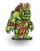 | A huge, lumbering brute with random growths of hair on its arms and chest, and two small horns poking out of its head. It walks slightly hunched over, its pointy teeth visible as it mutters crankily to itself.
If a wicked clawed hand rips off your arm, then clonks you over the head with it, you're entirely too close to a troll. Fortunately, the offensive smell and the fact that trolls don't ever bother to sneak up on someone make sure that a troll generally only comes too close if you let it near you. They've been specifically designed for fighting: massive claws on the arms, a thick leathery skin, sharp teeth and horns, huge muscles and no inconvenient brain cells getting in the way. | |
| 35 | cave tiger | | Shiny fur, majestic movements and impressive fangs -- a cave tiger on the prowl is an awe-inspiring sight. Unfortunately, the prey it is after could be *you*. If your speed and dexterity aren't up to the marks, you'll probably feel sharp tiger claws ripping your armor to pieces. You can try to gain time by feeding a hungry cave tiger. (Do cats eat bats? Now's the time to find out!) However, before you draw your sword of sharpness, please consider that cave tigers belong to a very rare species. Do you really want to be responsible for their extinction? | |
| 36 | stone giant | | This solemn, massive figure seems as eternal and unchanging as the granite beneath your feet. Its great size conveys a sense of quiet strength. Slow to anger, but slow to forgive, the stone giant seeks peace but finds only strife. Its tranquility has been disturbed; its home has been invaded. Now it seeks to restore its habitat the only way it can: by destroying the ones who have trespassed into its domain. | This huge humanoid has stone gray skin, and she really is made from stone. Before any other living being was created, the elder gods shaped this race from the rock of the ancient mountains. Since all stone and rock is made of their substance, these giants feel all the pain that is caused to the earth, and share its suffering. When the gods descended to the world and erected stone temples, the giants of stone arose and so great was their wrath that the gods had to strike an alliance with the demons to protect their abodes. Since those days, the giants have grown weary of the world, and most sleep deep within the mountains and only a few wake and try to effect vengeance on those torturing the earth, their mother. |
| 37 | fire giant | | These red and orange skinned oversized humanoids usually have flowing hair that greatly resembles a wild fire. They are very muscular and as destructive as the flames they prefer to inhabit. Regardless of their surroundings, their favorite method of destruction involves crushing or smashing.
This ancient race of giant is known for its ability to dwell and flourish in hot, fiery places. Fire giants are usually 18 feet in height, have dark skin, fiery red hair, and smell REAL bad! They tend to have a temper that matches the temperatures of their abodes.
You face two fairly smooth tree-trunks that are covered in a strange wiry red moss. A bit farther up, the trunks unite, and above that... A great bearded face grins down at you, although you're certain the being isn't friendly disposed towards you; the pleasure is probably caused by finding a new plaything that can be thrown around and eventually sat upon if it squeaks too much. | |
| 38 | frost giant | | These huge humanoids generally inhabit high mountainous regions, well above the snowline. The occasional adventurous giant can be found wandering the world looking for challenges of strength to build their prestige and raise their status within the tribe.
One of the ancient breeds of giants, shaped of the glaciers of the ancient world. This huge humanoid spreads a cold that chills your very bones. His hide is thick enough to preserve whatever traces of warmth he needs to live, and also makes him almost impossible to harm. | |
| 39 | ankheg | | This large acid spitter looks similar to a praying mantis, but whether it is an insect variant or not is unknown. Some suspect it to be a highly specialized reptile due to its acidic spittle, but others hold the chitinous exterior and multi-faceted eyes as evidence of its insect nature.
It vaguely resembles a praying mantis, but it's about as large as a dog, its fore legs appear to be extremely strong, and they're covered in a nasty viscous fluid constantly dripping from its mouth. | |
| 40 | cave bear | | Relatives of the brown bear, these gray bears usually live in caves or other underground domains, but venture out into the wilderness to forage. They are slightly larger than their brown cousins, with larger feet and claws that have been roughened by digging in the dirt and stone of the caves.
This bear has a thick brown fur coat. It is quiet, big, and tends to mind its own business, unless you get it mad.
This is a very large bear. It is the most aggressive bear of all the bears. Being fairly belligerent, it will attack anything that moves. It also happens to be omnivorous.
The largest breed of bears in Ancardia, this creature is about the size of a horse when on all fours, but towers twice as high as a human when rising on the hind legs. Its matte dark fur renders it almost impossible to make out in dark caves and though its vision is rather bad, its senses of smell and hearing are excellent, allowing it to perceive your footfall from hundreds of steps away and to smell your agitation and -worst of all- your fear as you face it. | |
| 41 | bulette | | These large, armored burrowers are sleek metallic-colored beasts with claws that dig through stone and earth, as well as anything else that gets in their way. They can be difficult to injure due to their thick hard hides which resist rocks and crystals along the edges of their deep tunnels. Their small eyes and poor vision are their only known weak spots.
A sleek muscular body, supported by four sturdy legs. The skin is covered in small scales a grayish-white color, the tail ends in a heap of vicious spikes and the gaping maw shows row upon row of triangular razor-sharp teeth, obliterating everything the creature thrashes against as it flails about in a mad frenzy. | |
| 42 | carrion crawler | | Disgusting! A giant creature, about ten feet long, with dozens of legs, and an armored hide across the top half of its body, a vaguely slimy trail hinting at the soft under-belly. A mass of seething and writhing tentacles grope blindly forwards from its head, both its sense of sight and touch.
Ew! This beast lives off corpses and almost looks like a corpse come to some disgusting travesty of life. A mass of antennae swings back and forth on its eyeless head, while the slime-covered body is moved along by numerous hairy legs. Careful, though: the antennae are covered in a paralyzing poison fit not only to anesthetize near-dead prey, but also to incapacitate perfectly healthy victims that may then be converted to carrion. | |
| 43 | cave fisher | | The cave fisher is a large insect that looks like part spider, part lobster. Its body is covered with thick plates and it has eight legs. It stands on the rear six and tries to grab its victim with the front two. It likes to lay out many webs in the dungeon, sucking the blood from those creatures who are dumb enough to get stuck in them.
A fat black spider with a bloated abdomen. It spins incredibly strong webs that can even stop the progress of a horse, then tries to vanquish its victims through bites of the powerful mandibles. | |
| 44 | displacer beast | | A low snarling draws your attention to a dark, cat-like creature moving very quietly. Even though you're sure the beast is still several feet away, the gleaming eyes suddenly seem to be but inches away from your own, and the black tentacles close enough to close on your throat.
It vaguely resembles a large panther, but moves with supernatural grace and swiftness without seeming to move at all. Just a moment ago you saw it standing at the other end of a long corridor, now you're staring right into its hypnotizing eyes, and if you dared to stretch out your hand, you could easily touch its shimmering black fur and thick whiskers. What an irritating creature. | |
| 45 | doppelganger | | Shock! You reel back in horror and dismay as you confront your own body and face where a moment ago was only a pale and indeterminate humanoid form. Your own face leers horribly back at you as you start to wonder just who is who and what is going on. If you're over there, then who is standing here?
'Exhibit A is a well-groomed adventurer; nothing unusual, they come here by the dozen. Now please turn your attention to exhibit B which appears to be the exact same adventurer, but if you look carefully, you'll notice... wait a moment, lemme think... hmm... OK, have a careful look at exhibit A and... damn it, I must have forgotten which is which! And I thought my doppelganger stamping technique finally let you tell the difference. Well, back to the drawing board.' | |
| 46 | dwarf | | He stands roughly four feet tall, but has a lot of strength for his size. He carries a heavy load of miners' equipment, and is thinking where to dig next, assuming that he will find more of his coveted gold there. He looks prepared for a large-scale excavation, and appears experienced enough to lead one by himself.
A little person minding their own business - searching for gold, driving a new mine shaft, fighting the evil orcs and thanking Morodwyn for every new day he lets them see. | |
| 47 | ettin | | A giant-like creature with two heads, the ettin is difficult to surprise as one of the huge orc-like heads is usually alert. They are not very intelligent, in spite of the two heads, and have occasionally been known to fight with themselves, although the presence of an opponent always brings both heads to focus on the intruding being as the preferred target. They are not very tidy about their appearance, being more concerned with causing damage to some other creature.
'Hey, you trod on my foot!' 'Stop talking such tosh. There's no such thing as your foot-my foot for us.' 'You're the head to th' left, aren't ya?' 'That's nuffink to do with what foot does what.' 'You think so? How d'you like it if I give you a good solid kick in - ouch!' 'Stoopid, stoopid!' 'I've really had it up to here with you! You brush yer teeth with *my* hand, you snore, you insists on us sleepin' on the right side so I end up the lower one, you always eats first...' 'Apropos eat: someone laughed; someone soft and juicy, judging by the smell.' 'Haha, let's go get 'em!' Oops, you'd better go now. | |
| 48 | gargoyle | | These stone-based creatures were originally carved and placed on buildings to frighten evil spirits and so protect the inhabitants. Some have escaped their attachments to their home construction and are no longer bound to protect, but use their fearsome faces and rocky musculature to terrorize through violence.
This creature stands 9 ft. tall. It has batlike wings, menacing claws, and a nice contingent of very sharp fangs. Gargoyles are known for their ability to look like statues so as to pounce on their prey. This one seems to be looking right at you.
Gargoyles are a mixed lot: they all have the leathery wings of bats or flying reptiles, but their bodies are those of monkeys, birds, horned demons or numerous other strange creatures. They are demonic beings compelled to service by some old goddess to protect the first stone houses against the wardens of stone. As the old cities fell and decayed, many of the gargoyles escaped and spread over the world, freed of their old spells. Due to their demonic nature they tend to wreak havoc and are generally mischievous towards humanoids. | |
| 49 | margoyle | | While gargoyles were initially intended to protect by scaring away evil spirits, the margoyle was designed to protect by scaring and then destroying those who intrude onto the grounds it protects. Its twisted face is a mask of hatred and spite, solidly set in the hard stone that forms its hide and clawed hands. | |
| 50 | ghost | | Seeming to be there, yet not, the ghost glides silently along. The unfortunate soul of some poor adventurer, who fell long before you came to accomplish what he did not, it moans a horrible wail in its eternal suffering. Not admitting that it no longs exists in our realm, a blow can damage it, unfortunately, the same works in reverse.
This incorporeal undead creature is greatly feared, as its very appearance can freeze opponents in their tracks. Their touch drains the life from an opponent so swiftly that the afflicted is instantly aged, potentially unto death. The lack of a physical body allows them to pass through solid structures and makes them more difficult to damage.
You don't believe in them, but this won't make it go away. The spirit of a person that couldn't find peace when dying and has come back to haunt the living. A mere touch from this undead being can induce such terror that victims often fall ill and die before their time has come. | |
| 51 | cyclops | | A smaller cousin of giants, the cyclops still stands at an enormous twenty feet. It sports a single eye, which glares malevolently at those around it. It flexes its huge muscles as it gazes at you. Normally they like to play with their prey, hurling boulders, to see how good their aim is. But all you can see is a hungry monster which is heading your way.
A towering giant with but one eye in the middle of the forehead. His eyesight is excellent but due to his monocularity he's very bad at judging sizes and distances. He's searching for the people who stole his sheep, so if you smell of wool or mutton he'll probably think it was you. | |
| 52 | fomorian giant | | Fomorian giants are shunned even by the other giants. Their bodies are horribly distorted, with sagging ears, differently shaped eyes, hunchbacks and hair that grows in spots where it doesn't belong. Their skin is a pale white. Fomorian giants dress in dirty rags and carry a stench of decay with them. But don't take them on lightly, for even with their horrible looks, they are formidable fighters.
Some say that one of the primordial elements was vomit, and those giants were shaped of it. This is quite unfair, but they really are ugly. If they were at least considerate enough to cover the warts and ulcers defacing their skin, but even then the coarse voices and bad smell wouldn't endear them to you. | |
| 53 | flesh golem | | This hideous creature has been assembled from various parts of corpses. Thick stitches hold its disparate limbs together. A pair of iron bolts jut out from its neck that serve no purpose at all as far as you can tell. It utters a low moan as it advances.
A disgusting and horrifying yet ridiculous construct. Made of pieces of flesh (you hope that those aren't pieces of corpses) crudely stitched and riveted together, and brought to an imitation of life by being jolted with a surge of electricity. It moves jerkily and pieces keep falling off. You'd like to ignore it - after all, it already gives off a funny smell - but you prefer to be careful, in case the whole bloody heap collapses on top of you. | |
| 54 | clay golem | | This man-shaped statue of clay has been animated by powerful magic. The floor trembles slightly as it plods slowly toward you.
A vaguely humanoid shape, roughly sculpted in baked clay. Magic awoke it to a semblance of life and a slip of paper in the mouth gives it a goal to pursue. The way this one behaves, its objective probably is 'Descend into the caves and prod some serious buttock.' The huge fists aren't good for precision jobs, but their sheer weight and momentum make it a fearsome opponent, if it has been commanded to fight. | |
| 55 | stone golem | | A roughly humanoid creation of various rocks and stone types, these usually pummel their opponents from above, being taller than most humanoids, using the weight of their limbs against their opponents with crushing effectiveness.
This is a gruesome humanoid looking stone statue. Standing almost ten feet tall, it is animated by some ancient magic and seems eager to fight.
A large representation of a humanoid, standing about twice as tall as a human. It is made of crudely hewn slabs of stone, and some magic has animated this construct. Runes of power are carved into and painted on the stone. There are no joints or hinges, but the magic that moves it is all that keeps it from falling apart. For a structure that must weigh several tons, it moves and strikes with alarming speed. | |
| 56 | iron golem | 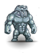 | This monstrous construct has been molded from pieces of cast iron, like a monstrous marionette. Its joints squeak rustily as it walks.
When the sorcerers got fed up with the flesh golems rotting away or falling apart when trying to walk through a closed door and with the clay golems drying out and crumbling to dust they moved on to more durable materials. Some experimented with iron for a while, but since a chaos war got in the way and all the quality steel was used for smithing weapons, only very few of these constructs were formed, and by now it looks as if only the rust keeps this one together. As it moves, it creaks awfully, and the myriad of rusted joints and hinges is subject to strong friction, giving off quite a bit of heat. | |
| 57 | royal guardian | | A member of the devoted royal guard, the guardians are almost a race unto themselves; the positions are hereditary and to fail as a guard is to bring shame upon the families that await the return of the High Kings. Royal guardians are polite until duty demands protection of the Kings or their property. | |
| 58 | banshee | | | The banshee, a luminous spirit, manages to appear sad and angry at the same time, obviously a being in an enraged lamentation. Her wail is renowned as it is filled with such sorrow and hopelessness that most who hear it abandon life instantly, passing beyond their current pains.
This ghostly apparition of a woman forever mourns the loss of her beloved husband, untimely torn from her side. So deep is her grief that even listening to her song will instill a heartbreaking sorrow in those that hear her. |
| 59 | djinni | | A magical creature of an airy nature, appearing sometimes as solid, but most often as a misty accumulation of colors, the djinni only rarely choose to stay in this plane. Most of those reported have been summoned here and trapped by some manner of magic. Legends tell of trapped djinni repaying those who free them from their bondage by the granting of some service. | |
| 60 | gorgon | | A huge and unbelievably ugly beast with horns like a bull and skin covered with iron scales. It makes a strange noise, like a cross between a moo and a screech, and a cloud of black, reeking gas belches forth. A tiny spider on the floor crumples into... a pebble? | |
| 61 | griffon | | With a loud clashing of its metallic brassy wings, the griffon leaps towards you. The griffon's eyes gleam brightly in its aquiline head, as it scents your blood, and it cries out in hunger and rage. The griffon's huge leonine body bulges with muscles with each gliding leap, and its blade-sharp beak clashes like a sword on a shield as it nears you.
Such beasts should only exist in legends, but some magic must have enabled this one to take shape in living flesh. It is about the size of a lion and also has a lion's hind quarters, but its tail ends in a serpent's head and it has the head and wings of a giant hawk. Large sharp eyes stare at you and the powerful curved beak emits a shrill cry as it leaps. Thanking the gods that it can't really fly in here, you face the onslaught. | |
| 62 | least daemon | | A truly minor daemon, these infernal spirits are just a step above quasits, being granted their existence not by some magic of this plane, but by a daemon lord requiring some minor power to be present in our world. Their purpose here is unknown to any but the least daemon and its creator. They usually take a small humanoid form, but with oddly colored skin and misshapen features. | She's had a really bad day. Burnt all her hellish power just to get here, only to notice that her master wouldn't send her any power to finish the errand she was sent out on - either because the master simply forgot her or just wanted to get rid of her or because he fell victim to one of the countless demonic revolts in the meantime. Now she's stranded in a drab dungeon without any drinks or a club that allowed demons in, and she'll probably have to hang around this stupid dimension until the next hellish auditions show she's gone missing; and that won't happen before next century. If you tell her that her costume is in bad taste and looks like a cheap fake, things will go very hard with you. |
| 63 | lesser daemon | | A small daemon created by some greater daemonic power, they seek to fulfill some goal on this plane that least daemons have failed to complete. While they hate living creatures, especially lawful ones, they seek first to fulfill their quest to please their masters and be granted more power. They usually take a humanoid form, of a size between an elf and a human.
A demonic being of some power. He might be serving an outright evil force, but if you ask him he'll tell you he's just a regular guy doing his job. He'll happily buy your soul if you offer it to him, but then he will admit that he's nothing but a small accountant who can't really be made responsible if your wishes don't work. | |
| 64 | greater daemon | | A daemon with the power to create lesser beings of its kind, they have great powers of magic and manipulation on this plane. They usually take a humanoid shape ranging in size from a large human to a large troll, depending on the powers it manifests. They seek the destruction of lawful beings and communities, usually to specific ends as part of a barter for power.
Among the inhabitants of the hellish realms, this is one of the strongest. The shape he takes in this world appears more fair and is more powerful than those his lesser brethren take, yet the burning demonic eyes always betray that race, and a hint of horns, hooves, wings or a beak still shines through. Since they mostly come into this world on errands of mischief they hardly bother to disguise, anyway. | |
| 65 | annis hag | | | This blue-faced crone is possessed of supernatural strength. Children are kept from wandering too far by warnings that the black annis hag may at any moment leap from a cave crafted by her own terrible fingernails and devour them. Her shambling gait hides her fearsome power.
She's one of the witches from your childhood nightmares, and she looks as though she's good for a few more nightmares. You're not certain whether she wears anything other than the incredibly dirty white hair, and her fingernails must have grown continuously for a couple of years. You'd gladly offer to cut her nails, but she seems to prefer to use them for tearing out your throat. |
| 66 | green hag | | This slimy, mossy green creature may once have been a woman, but even then it could not possibly have been attractive. Now, it is consumed with vile hatred for all things. Some dark power has rewarded it with a fierce cunning and agility in return for whatever soul it may once have possessed. | |
| 67 | black hurthling | | He has spent far too long dwelling in deep caves where right-thinking hurthlings do not belong, and is a corrupted parody of the hurthling race. He is short and ugly, with grayish, hairless skin. Even his toes are hairless! 'Have you seen my... birthday present?', he whines, and then he giggles to himself. Don't turn your back on him.
This looks like a normal hurthling, but the hair is less curly and the grin is more surly. It is rumored that every now and then an evil force penetrates the peace of a hurthling community and infects a young hurthling, encouraging it to spend more time underground and away from the light. Eventually the afflicted hurthling stays away from the sun, seeking for something to fill the emptiness left without a community.
Every once and again, a young hurthling will become curious and set out to see some of the world. Most come back after a day's walk and never leave their village again, but some venture into the underground and are attracted by the wealth and power of the dark elven realm. Even of those most will be repelled by the evil that reigns below the earth, but for ages there have been hurthlings living on the fringes of the dark realm, raising a breed that perverts all the distinct features of the real hurthlings: their feet are weak and soft, they have hardly any hair, and what remains turned pale or white, while their skin is ebony black. Even their souls have been perverted, and most of them are outright mad, searching for a fabled ring that is rumored to give power over those walking in the light. | |
| 68 | harpy | | With the body and wings of a vulture, and the young yet hideous torso and head of a woman, you know this to be a creature of evil. Emitting a melodious song that does not seem to fit the features, the harpy draws near enough that you can see the necklace of bones around its neck, obviously unfortunate souls who let their guard slip for an instant -- all it took for this hideous mistake of nature to do what it does best, kill. Legend has it that a harpy's corpse has strange powers on the voice of one who eats it.
Strange, that: someone just screamed abuse at you, but no-one with a voice is around, only a large dirty vulture. Such birds cannot possibly speak... unless they have a woman's head, like this one. | |
| 69 | hell hound | | A huge, snarling bulldog hurtles toward you. Its black, hairless skin seems to pulsate with blood red light, and its eyes are deep pits of flame. You smell the stench of sulfur as it exhales gouts of black smoke, and twists its jaws into a hungry snarl.
A dog clearly bred for fighting. It still carries a remnant of its last meal around - a human-looking leg - but now muscles contract and the bone is crushed by impressive ebony teeth. With a deep resonating growl fueled by intense anger it bares its jaws, and a gust of fire springs from its throat. | |
| 70 | hippogriff | | A truly bizarre creature. The hippogriff has the body of a horse, but an eagle's head, wings, and talons for front legs. Whether a natural creature, or something created in a mad wizard's lair, it is a threat to the unwary. One thing is known for sure about this creature: when prepared properly, it makes an excellent main course.
A weird mixture of hawk, lion, serpent and horse, you don't really know what this beast actually is. Since it has inherited the weapons of each of the animals that contributed to its form, you'll have to fend off a sharp beak, rending claws, kicking hooves and a lashing tail. | |
| 71 | homunculus |  | A small creature created by a user of magic to draw some semblance of a life force into a construct of flesh, bone, and magic, these creatures are companions of their creators until freed by their maker's death, after which they wander, doing what harm they can with their dangerous bite (which may have magical effects) and small claws.
A magically created small human. The wizards that are capable of creating such a being jealously guard their possession and only send it on errands on strictest orders not to engage in any business with other people, lest they put a spell on it. | |
| 72 | imp | | These small devils are sometimes summoned by evil magicians to serve as familiars, and sometimes appear in our plane as lesser servants to others of evil intent. Their appearance is a mockery of the humanoid form, usually with at least one feature of unusual mocking size. They bite and scratch, but are truly lesser devils.
A tiny young demon. He hasn't paid attention in class, and now he has to collect three souls before he's allowed to return home. You seem to have a soul, so you're considered a potential vendor; he'll even help you get your soul out of the body, if need be. | |
| 73 | quasit | | These diminutive demons are sometimes called by evil workers of magic to serve as familiars, and other times appear on missions unknown to any on this plane. They are minor demons who mock the humanoid form along with behavior, and are more dangerous for their bite and the effects of their saliva on humanoids.
A malevolent little demon, it has been trained by a wizard to serve as a pet. It's got leathery wings and small horns, but apart from that it looks like an old ragged parrot that has the feathers stuck in the wrong way round. It tries to sit on your shoulder, but you don't want to let it come near, seeing how sharp the broken dirt-crusted talons are. 'Polly wants an eyeball, polly wants an eyeball' it croaks, but you'd rather keep all the eyeballs you own to yourself. | |
| 74 | invisible stalker | | Something... a slight ripple in the air... an almost imperceptible shift in the scenery before you. You can feel its presence, some creature... invisible to the eye, but very real to the touch. You think you can hear it breathe, but that may be your mind playing tricks. | She seems to be extremely shy; you simply can't get a proper look at her, so anxious she is to escape your attention. Just a moment ago she was hiding in your shadow, now she creeps into a crack in the wall, and now she even hides behind the air itself! There must be something beyond common stealth and dexterity behind those powers of not being seen. |
| 75 | jackal | | Jackals enjoy hunting in large packs on the plains of Ancardia. They also take care of all the corpses nobody wants to eat. Due to the increasing number of luckless adventurers in the Drakalor Chain, they are presently having a helluva good time.
A bit smaller than a wolf and reminding you slightly of a fox. They hunt in packs and eat everything they can stomach. They're normally not aggressive towards humanoids, but when the pack is really large, they'll fight anybody. | |
| 76 | pixie | | Small cute lovely humanoids with butterfly or dragonfly wings. They are clad in colorful or earthen-toned stuff. All pixie-folk have a sense of weird humor with a streak of meanness. Lots of meanness! | Like a butterfly she dances on the air, lazily flapping thin transparent wings that spread a twinkling dust of tiny scales into the air. She loves to tease the big folk, provoking them to bash at her while she 'borrows' some blinking objects. You wish you had a large book to swat this nosy grinning gnat. |
| 77 | cave lizard | | Have you ever seen one of those cute small lizards sitting in the sun? Now imagine you are a really small bug. The last thing you'd see would be the slightly tilted head of your worst enemy staring hungrily down on you. Cave lizards are dark green or brown colored. They are often used by dark elves as riding animals, because of their ability to walk across the walls or ceiling with a slight scratching as the only sound.
A forked tongue between powerful scaled jaws checks the air, then tiny cold eyes lock on you. You've been found out and short sturdy legs about as thick as yours move a body almost as long as a lion's towards you. | |
| 78 | giant lizard | | A huge green lizard, about the size of a dog and twice as long, is sitting in this room. It eyes you lazily but warily, flexing jaws that might be suitable for swallowing smaller creatures whole, or for ripping meat from your bones.
If it let you, you could probably ride on it. Unfortunately, it seems more interested in eating you, and looking at the strong clawed legs, the broad swishing tail and the powerful jaws you feel that it won't be easy to convince it to leave you alone. | |
| 79 | fire lizard | | From the hidden places where fire touches earth comes the much more dangerous cousin of the common cave lizard: the fire lizard. Bright red to red-black tough scales cover the large predator. Beware, for when you see the red glow inside its completely black maw it might already be too late to run.
Dry scales scrape against each other, glowing scarlet. It's just a lizard (well, a really big one), but your everyday lizard doesn't leave steaming footprints. A thin reptilian tongue probes the air; it can't have been a gust of flame escaping from the mouth, can it? | |
| 80 | rat | | You walk down the dark and damp corridor. Your last torch flickers and starts to die down. The stairs up must be somewhere in front of you. You are quite confident. You killed all the great beasts that could stand in your way. Nothing can happen now. Suddenly you hear this quiet shuffling ahead... and behind you. Small things stay just outside your ever-waning circle of light. You walk faster now. Where did that high-pitched sound come from? One more corner to the stairs. With a last hissing sound your torch dies in your hand and you stand in the darkness. Now the rustling sound is all around you. You can feel them on your legs. Suddenly you can see it: the twin glowing points in the darkness. And two more. And another two...
In the dungeons there always is some dirt and garbage to be found, and sooner or later a pair of black pinpoint eyes will spot something edible in the rubble, and thus nothing ever gets wasted. Rats eat even the most disgusting stuff but also frequently attempt to pinch some food from folks who don't pay enough attention to their belongings, and the larger of them are even capable of speeding the death of weakened creatures. As you entered the dungeons, you have invaded their realm, and you'll be under surveillance forever. If you happen to die in here, rest assured that your death won't go unnoticed. | |
| 81 | wererat | | Creatures which change between humanoid form and a large giant rat, they are rumored to have once been fully humanoid, but infected with some disease or curse. They are known to summon hordes of their brethren when attacking, as well as using their long front teeth. They supposedly retain either their long front teeth or their long noses when in humanoid form.
Probably this was a very disreputable human who liked to visit dirty and disgusting places, befriending the creatures there. Now this person strangely reminds you of rats, in spite of the clearly human looks; a certain rattishness shows in the behavior, and you seem to hear the squeaking of rodents and the clicking of small claws on stone. | |
| 82 | jackalwere |  | The origin of the jackalweres is rather mysterious. No one seems to remember when they first appeared in Ancardia and where they came from. Jackalweres possess magical powers. When they feel cornered, they can summon dozens of companions who will sacrifice their lives to defend them. Another powerful weapon is their strangely melancholic song. Don't listen too closely; you'll have trouble to keep your eyes open. | A rather small and slightly bent human, who appears to have a long protruding mouth and sports claws instead of nails on slender hands covered with rich yellow hair. Her eyes unfocus in a shamanic trance, and there is a ghostly yapping as ethereal canine shapes begin to move in the air, rapidly solidifying and becoming more and more real. |
| 83 | minotaur | | Once thought to be but a legend, these muscular humanoids with a bull's head are now frighteningly real. At home in the twisting underground labyrinths, these cursed beings search for unwelcome visitors, who are given a very violent greeting. With those horns that seem sharp enough to pierce plate mail, you hope it doesn't see the red blood on your weapon. | |
| 84 | shopkeeper | | A portly, red-faced chap, with bushy eyebrows and a big smile. A happy face that is fearsome at the same time, for it rests upon a considerable bulk, and belies faint signs and promises to defend his wares at all costs. The eyes twinkle and are ever alert, darting subtly from shelf to shelf in a constant stock-check. | |
| 85 | thug | | A brutish figure dressed in black leather steps forward to block your path, a grotesque leering grimace permanently inscribed on the thug's face as a scarified souvenir of some desperate street-fight. The thug holds out a hand, palm up, and judging from what little you can make out of the expression, 'No' will not be a satisfactory reply. | |
| 86 | silver wolf | | A huge wolf with a thick gray fur beholds you with icy blue eyes. It howls in anger and long nails on broad paws scratch on the stone floor, searching for better purchase so it can jump right into your face. It's eager to introduce a select edition of canine teeth to you. | |
| 87 | cooshoo | | Standing roughly three feet high, this elegant canine moves with a delicate grace belying its fierce power. Its bright fur is loosely curled, giving it a somewhat pampered appearance. However, its strength and cunning lend it an aura of confidence and deadliness.
Its long fore legs and short hind legs make it appear similar to hyenas, but the long swishing tail and soft colorful eyes tell the difference. As you look into these deep eyes, you can't seem to avert your gaze, and then this large dog-like creature produces sweet whimpering noises that make you feel strangely at peace. Jaws with long sharp teeth seem to grin expectantly. | |
| 88 | fairy dragon | | A miniature dragon with an impish grin, this cute little fellow has abilities other dragons might envy. Its arsenal of breath weapons is varied and can prove deadly to an opponent who under-estimates the dragon based upon its diminutive size. They are occasionally seen in the company of certain elves. | |
| 89 | giant raccoon | | These large flesh-eating mammals retain the appearance of their smaller cousins, including the trickster's mask and ringed tail, but their larger size requires a larger appetite, as well. They will eat fish, small birds, and mammals if required, but prefer small livestock or the young of creatures much larger than themselves. They appear in the wilderness or underground when their burrows intersect other passages.
A relative of the bears, with gray fur and a rather jolly black mask. This one's the size of a wolf, though, and it has really powerful fore legs with impressive claws. | |
| 90 | big dog | | This canine looks like someone's pet gone feral. The tail wags even as the bared teeth threaten to separate your throat from your neck. | |
| 91 | dire wolf | | This canine is big enough to be mistaken for a small pony, if it weren't for the long snout ending in a snarl that reveals gnashing teeth, and the long legs with claws instead of hooves. This beast preys on ponies, horses, and anything else large enough to be worth the trouble of chasing down.
These wolves like to live in caves and the large underground systems of the Drakalor Chain. Over the generations they have adapted to the hard life conditions and have grown much stronger and more aggressive than their brethren living in the woods. They're covered in wiry dark fur, their ears are even finer than other wolves' and their eyes are able to catch even the faintest glints of light. | |
| 92 | giant spider | | Among the largest of the arachnids, these have been reported as tall as a human, with long fangs ready to deliver a potent poison. At his size, the light fur covering the shell is apparent. Dark elves have been known to wear armor made from these beasts, although the secret of the making is closely held.
These spiders are larger and more aggressive than even the well-known large spider. Aside from being about 12 ft in diameter, it has a poisonous bite. Because of their size, giant spiders are almost always hungry. It seems to be eyeing you for its next meal.
Brightly colored hair covers the mighty shell of this huge spider, most likely to warn larger enemies that it can cause serious harm to them. But this warning message can only apply to elephants, for if it manages to wrap you in its webs and incapacitate you with its bite, you'll be no more than a large meal for this arachnid. | |
| 93 | Dorn Beast | | The deadly dorn beast should be avoided at all costs -- it can paralyze its victim with a single glare from its powerful eyes. (Range: about three feet for young beastlings to about 20 feet for full-grown dorns.) Dorns usually live in crags and shadows near cliff bases. According to the last words of dying explorers, dorns are gray and purple and black and gray and white.
Smart adventurers run the other way when they hear 'Hurumph,' the battle cry of the deadly dorn beast. Its 69 sensitive eyes can paralyze an unwary explorer with a single glare. Captured victims are plastered with round, sticky secretions that never come off. | |
| 94 | water elemental | | This elemental shifts and undulates, ebbs and flows, separates and rejoins, rises and falls, with a nearly hypnotic motion. However, the power contained beneath that smooth surface is unmistakable. As the fluid dance progresses, you hear the cracking of ice; you feel the heat of steam; and you see the destructive power of a waterfall. You can smell the tang of salt water in the air, but this is no tranquil sea!
The true essence of its element, this being represents the beneficial force of water and its awesome destructive forces. The refreshing summer rain is part of it as well as the devastating flood, and as it has been roused, it is willing to mercilessly submerge you. An apparently solid torrent shoots at you, and you gasp for breath. | |
| 95 | muscular dwarf | | The best description for this being is a humanoid tank. The height of the dwarf is the standard for the race, possibly a few inches higher. But the shoulders and upper body characteristic of dwarves have been magnified to an unreal degree. They wander the store stocking shelves, moving equipment around, and assisting the shopkeeper at the counter. Best not to mess with these individuals, as they look like they can snap your neck like a twig. | |
| 96 | dwarven guardian | | He patrols the dwarven city, and is always glad to help those in need. He smiles at you, and pauses for a moment before he begins looking around again. He walks with a confident stride, reminding you of the mighty dwarves of yore. | |
| 97 | female dwarf | | | Although her time is often occupied with cooking, cleaning, and other chores, she is just as skilled as the male dwarves at digging and hammering. She is proud of her skills as a mother, wife, cook, and miner.
She walks around with bravado, chatting with those nearby and taking swigs out of her canteen. The dwarven children nearby pay their respects to their Mama-sama and go back playing amongst themselves. She strolls the town and through the shops, making smalltalk with the shopkeepers and the patrons inside. She lugs around a short sword at her side as a warning to aggressors, however. |
| 98 | dwarven child | | This is a young dwarf, just beginning to learn the ways of his people. He will probably grow up to become a brave warrior or a mighty blacksmith someday, but he is currently thinking about delicious candy and his mother's excellent goblin pie. | This is a young dwarf, just beginning to learn the ways of her people. She will probably grow up to become a brave warrior or a mighty blacksmith someday, but she is currently thinking about delicious candy and her mother's excellent goblin pie. |
| 99 | priest | | He has dedicated his life to the upkeep of the dwarven temple. His manner is reverent as he cleans and dusts the altar, perfumes the air with incense, and directs the temple choir. His eyes are filled with the inner peace of someone who has found his purpose. | |
| 100 | ancient dwarf | | As the ruler of the dwarven city, he is noble, just, and kind-hearted. His wrinkled face and mysterious eyes indicate that he has seen it all, and perhaps a little bit more. He offers his friendly hand to you, and smiles, thinking that you are indeed the one the prophecies told of. | |
| 101 | dwarven weaponmaster | | Garth, the weaponmaster, has exercised his skills for many years, and also has helped others who wished to become stronger, smarter, or swifter. He knows all of the different training methods that can be used to work on different skills. He greets you with a kind wink. | |
| 102 | dwarven mystic | | This dwarf has hidden himself away from the rest of his people in order to better contemplate his religion and achieve oneness with his deity. He has a distracted, faraway look in his eyes, and he mumbles about 'great power' and 'waiting for the right one'. | |
| 103 | battle bunny | | A rabbit with long ears, snow white by color. It smiles cutely at you and winks its fair eyes, almost dream like. But watch out! These bunnies are not your everyday pets! They carry big bad teeth ready to bore down into flesh and bone. Oh, and don't worry, these things are not *too* different from your everyday rabbits, for example, they breed like them...
A cute white bunny. It hops towards you and blinks with its beautiful dark eyes. You just want to cuddle it! But why are its teeth covered with grimy reddish brown crusts? | |
| 104 | mutated battle bunny | | A rabbit with long ears, snow white by color. It smiles cutely at you and winks its fair eyes, almost dream like. But watch out! These bunnies are not your everyday pets! They carry really big bad teeth ready to tear at flesh and bone. Oh, and don't worry, these things are not *too* different from your everyday rabbits, for example, they breed like them... although there also seems to be something supernatural about them. | |
| 105 | shambling mound | | This slightly intelligent vegetable mass, between two and three meters tall, reeks of rotting organic matter as it shambles about feeding on any living thing it can wrap its roots around or into. Its dark leaves and tendrils are covered in a wet slime, probably exuded to help grapple and digest its food.
A strange gray-green heap of vegetation slowly sliding across the floor. It spreads a breathtaking stench and produces faint sucking noises as well as a rather gross grumbling that makes you think of a giant suffering from indigestion. Seeing that it doesn't show much green, it probably uses any kind of organic matter to fuel its metabolism. | |
| 106 | gremlin | | With a face like a goblin, but not as cute, and teeth like a piranha, this nasty little thing would be horrifying if it were, oh, ten times larger. But it barely comes up to a hurthling's waist -- if hurthlings ever had waists, of course. The gremlin stares with gleaming red eyes and jabbers in its own bizarre tongue. But, hey, how tough can one pesky gremlin be?
Gremlins are a very irritating breed of tiny demons, that lurk in the dark and enjoy breaking things and wreaking havoc. The ugly broad slits of their mouths are so full of teeth that they can't ever shut them, but instead continuously chatter in their squeaky voices which drill through your eardrums. | |
| 107 | cat lord | | It is to this magnificent creature that all the cats of Ancardia pledge loyalty, and it is him who will avenge their wrongful deaths. He is tall and lean, walking upright, and covered in short, tawny fur. A set of claws emerges from one paw, and his tufted tail begins to twitch. His brilliant yellow eyes grow cold as he looks at you, perhaps looking for his subjects' blood upon your hands.
You see a housecat's head on a fur-covered body with soft paws. Still this being walks upright and a faint aura of might surrounds the slender frame. An ancient power pervades your mind, bringing all the cats you ever met back to memory. Once this being was a god, but when people stopped worshipping him his power faded and eventually all that was left was this incarnation, weak compared to what he once was yet with a mysterious and definitely considerable power, the essence and memory of all the cats everywhere, anytime. | |
| 108 | casino guard | | A large, well-muscled human, obviously skilled in the arts of combat and itching for someone to step out of line so those arts can be exercised. Hobbies include crushing things and intimidating bullies. | |
| 109 | big casino guard | | An amazing sample of brawny flesh, this guard makes all others look small and friendly. The big casino guard seems polite and easy-going until pressed into duty, when huge fists flex and relax, crushing the skulls of imaginary foes. Devotion to duty is paramount, and the sole duty and purpose in this life is to protect the casino and enforce its rules upon visitors. | |
| 110 | ki-rin | | A mighty being with golden scales, fiery eyes and cork-screw horns. The ki-rin is the embodiment of law, truth, righteousness and purity. It is a grave offense to attack this sacred creature. Its penetrating gaze reaches the recesses of your soul which is why it has no illusions about the morals of most intelligent races in Ancardia. The ki-rins are resigned to fight a solitary battle to right the unrightable wrong and free the world from the forces of Chaos. In this, they are supported by all Ancardian deities. Ki-rins also see themselves as the guardians of tradition and learning. You will usually find some of their more bookish representatives in the sinister library of Niltrias. Be warned that they don't take kindly to plundering adventurers. | |
| 111 | leucrotta | | The leucrotta is a monstrous beast of ugly appearance and vile temperament. Being the result of hideous magical experiments it combines the body of a stag, the head of a huge badger and the tail of a lion. Its fur is spotty brown or black and it is surrounded by a decaying smell. It has sickly yellow teeth and glowing red eyes.
A strange animal that can perfectly imitate any sound it perceives, and uses this ability to attract its prey. Its jaws don't bear teeth but a strong continuous bone and the body seems to be made up of a variety of creatures, making it a hilarious patchwork of the animal realm. The clacking bones in the mouth remind you that hilarious is not the same as harmless. | |
| 112 | werewolf | | Creatures which change between humanoid form and a large wolf, they are rumored to have once been fully humanoid, but infected with some disease or curse. They are known to summon large packs of wolves when attacking, as well as using their powerful jaws and sharp teeth. They supposedly retain their thick body fur when in humanoid form. | This human has a lot of dark hair all over her body, unusually strong nails and disconcerting yellow eyes. She moves with the natural grace of a hunter and the hairy ears seem to twitch. Suddenly she throws back her head and emits a fearsome howl - and the call is answered! |
| 113 | wolf | | This canine is larger than most dogs, with wild matted hair and long, sharp teeth. It looks lean and fast, a bundle of hungry ferocity ready to run down its prey.
A magnificent canine, with intelligent yellow eyes and warm gray fur. It also has very strong teeth and impressively muscled jaws, and it doesn't seem too friendly. An old saying claims that where the wolves howl, there also the orcs prowl, but in fact it's the other way round: areas plagued by orcs often provide a good habitat for wolves, as humans and gnomes no longer hunt them and there often is a fair share of wolf food left after orc attacks; generally, wolves despise the cowardish orcs and never fight as their allies. | |
| 114 | lich | | This powerful undead creature refused to surrender to death even when life had fled the body, and now exists through dark magics that maintain its skeletal form. Its touch is dangerous as any life can feed the lich's need to force life upon itself in spite of the passage of time.
A powerful magician who came back from the dead as an undead horror of sorcerous might. The flesh has rotted from the bones and the robes are threadbare, but the figure is cloaked in a shroud of eerie light that sucks at your soul. This abomination has dug up the remains of some unfortunate dead to fuel its perilous enchantments and the stench of putrefaction rises from the bones and flesh that seem to melt away under bony fingers. | |
| 115 | owlbear | | Made in the experiments of a demented wizard, who probably died at the claws of his own lethal creations, owlbears are a mix of giant owls and bears. Rearing to a massive eight feet, the creature's owl-like head gazes down on you. Its bright yellow eyes, which seem calm and wise, yet full of rage at the same time, follow your movements. With razor sharp claws, and a beak that can bite through metal, it starts towards you with a menacing screech. You pray to your god that you may survive this encounter, and hope it is in one piece. | |
| 116 | holy slayer | | You would not normally associate grace and beauty with an assassin; and yet, the fluid simple motions and cold merciless eyes are clear signs of a holy slayer. Let chaos tremble, and any one else who gets in the way. | An agent of the Lords of Law sent to destroy a proponent of disorder. The perfectly proportioned frame is clothed in a clean white robe that hangs perfectly still even as the slayer seems to float across the ground. She radiates a purity and heartless justice from beyond this world, making all her surroundings look dirty, misshaped and disorderly. Her stern look beholds you and you sense that you are being judged, and feel utterly filthy. Have you been naughty... or nice? |
| 117 | solar | | While these beings are possibly corporeal, they shine with a bright light that even a fire elemental would envy, seeming to be a fragment of sunlight brought down among the living. These are rumored to be servants of the lawful gods sent to reward the worthy or extract divine retribution from the unworthy. They are fierce fighters, cutting through opponents as their light cuts the gloom and moving with the speed of, well, the light they embody. | |
| 118 | large kobold | | A larger and stronger kobold, bearing more resemblance to a cross between a healthy goblin and a pit bull, with a temperament to match.
To a kobold, the concept of hygiene takes on the form of a greater balor: To-be-avoided-at-all-costs, not a good thing, bad, etc. This concept shows itself readily as you gaze upon this dog faced warrior. It stands slightly taller than most of the others, with what you could almost call muscles beneath its dirty brown and flea infested fur. Its canine eyes show a glimmer of intelligence, and its ears twitch and turn, listening for a threat to its pack. A simple and poorly made hide vest covers its body, and a bow is slung over one shoulder. Primitive arrows are held in a quiver on its back. Not the kind of dog you'd want curled up at your feet, unless he was dead, by your hand. | |
| 119 | kobold chieftain | | If ugly wore a hat, this kobold would wear a really big one. It looks as if it had attained chieftain status through many bloody challenges and battles. Its tough skin is covered in coarse, dark brown fur, speckled with nasty scars and dirt. Its mixed armor is well worn and bloody, looking as if it had been torn from the former leader's still warm corpse. The face of the kobold displays not much more than cunning possessed only by the toughest of canines, ears that have been cut many times and are always at attention, eyes that never stop moving yet always seem still, and a mouth that is stuck in a perpetual scowl, with sharp, broken teeth barely showing, as if to issue a challenge to any foolish usurper. A long wooden bow is slung over one shoulder, and a quiver of wicked arrows is strapped to its back. By far the nastiest, and probably most intelligent, of the dog-warriors. But that's still not saying much... | |
| 120 | hobgoblin chief | | A very large and very repulsive hobgoblin stands before you. Indeed, he must be the chief, clearly marked by his above average size and well kept armor. He is without equal amongst his tribe. Many old scars riddle his tough green skin, many skulls of various shapes and sizes hang from his belt. His face is an intelligent one, for a hobgoblin. Calculating eyes bore into your skull, and his large pointed ears seem to twitch in anticipation of a fresh challenge. Practically oozing hate from his large pores, his only seeming goal to command his tribe to further victory and spoils of battle. He carries himself as one who would slit your throat first, and ask questions later. | |
| 121 | large orc | | The large orc, also known as Orog, is an example of the orcs' ability to mate with all species except elves and dwarves. Large orcs are a crossbreed between orcs and ogres. They inherited the strength of the ogres, the toughness of the orcs and the stupidity of both. Most armor won't fit them, so generally they will stick to furs. As for weapons: the bigger the better! Orogs are often used as bodyguards by the orc chieftains. | |
| 122 | orc chieftain | | When you are about to meet an orc chieftain in battle, be afraid! He is the strongest, best armed and armored orc around. He also has the greatest battle experience, since he is constantly challenged by his peers. But, you may also see the glimmer of a sharp mind in his red eyes, for here strength often couples with cunning. Then be very afraid! Orc chieftains always get the first and best pick from the loot, so they will have the best things an orc wants to use. That does not have anything to do with the stuff you want. | She's the one who knows how to keep a gang of a dozen orcs together. The key is violence and cruelty as well as always finding some occupation for the band so they don't go at one another's throat. She's a tad bit stronger and better equipped than the others, and unlike most of this race she seems to act deliberately. If you fall into the claws of her company, she might even keep her underlings from killing you - because she can think of something nastier that could be done to you. |
| 123 | large gnoll | | This large gnoll is towering above his brothers at a height of eight feet. Not perhaps the smartest of their mixed breed, but one snap of those snarling jaws could take the head off nearly any would-be hero.
All gnolls are created equal, but a few are selected to become fighters. Those are brought up with special food (don't ask what kind of food) and receive special training (don't ask what kind of training) and eventually the strongest among this elite are selected (don't ask how; and above all don't ask what becomes of those who aren't selected) for the actual rank of warrior. These fighters stand a fair bit larger than your common gnoll and are really fierce warriors. | |
| 124 | gnoll chieftain | 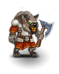 | The awe-inspiring creature before you is a gnoll chieftain. Not only are gnoll chieftains the most cunning, but they are also the strongest of their clans. If you think you can best this gnoll you should be aware that its warriors are not far off.
This is the kind of person who thinks that skinning people alive is fun and considers it good manners to bite the head off someone who bows in reverence. It gives you a good impression of the social skills of gnolls and also lets you understand why gnolls are extinct everywhere else in the world. | |
| 125 | ogre magus | | Even among a race as dense as ogres, an occasional genius will be born with a talent for magic. If this potential magus is not recognized and slaughtered, it may grow to a revered position of power after gaining the magical skills needed to avoid and discourage more physical opponents. Rumors say they freeze their opponents in their tracks, such is the terror of so large a magician. They can be recognized by ritual tattoos covering the body. | |
| 126 | dark sage | | An old scholar in long dark robes strides toward you. He possesses knowledge of things beyond the comprehension of any normal man, and his mind has obviously been corrupted by this very knowledge. This contact with chaotic forces has also given the sage dark magical powers, and a strong lust for power.
He might know more than you could learn in your whole life and he has mastered a couple of magical tricks during his studies, but will you have a look at him: no muscles anywhere, pale like a deep-sea fish, deep rings under the eyes from nights spent in the library with only a dim lantern and several hundred ancient tomes for company, and a chronic cough from dust and smoking. Just thrust a finger in his chest and he'll fall over. So kids: don't stick around the reading room, go out and beat up your friends! | |
| 127 | arena master | | A squat but immensely broad human whose demeanor says that he is not often questioned, and never more than once by the same being. He is clearly a master of his trade, but what that trade entails is not immediately clear; probably making decisions and enforcing them upon the strongest and most recalcitrant of arena competitors. He seems highly aware, spotting minor details that many others would overlook, a useful skill in one who might be called upon to judge a contest of speedy weapons and magical deception. | |
| 128 | ratling trader | | These slim and agile creatures have their regular place on the arena level where there will never be a shortage of customers. You can easily recognize them by their smart blue uniforms and matching caps with a red 'R'. With their twitching whiskers and friendly red eyes, they will invite you to buy some savory snacks from their vendor trays. | |
| 129 | ratling rebel | | A former fighter, he has turned his cloak and now belongs to the green faction. He strongly opposes all cruelty to animals and will probably try to dissuade you from fighting in the arena. But his thin voice is usually drowned by the ecstatic cries of a large crowd. If you want to be nice to him, go and read one of his pamphlets. | She is shocked by the horrid habits of the people round here: they watch innocent creatures getting slaughtered, and laugh as the defeated bleed to death. Still, she remains unperturbed by the joy and the madness, for she's found a purpose for her life. She hands out her hand-written pamphlets and attempts to talk some sense into people, but her thin voice can hardly be heard in the din the bloodthirsty crowd causes. |
| 130 | dwarven innkeeper | 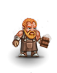 | A stout dwarf with a portly face. He is not as massive as many of his brothers but still a strong person. His red beard is finely combed and his face is very handsome, especially so for a dwarf. Nonetheless a number of small scars reveals a former life of hardship, filled with mortal danger. The eyes appear to be sad in some mysterious way, as if grief-struck by a misery suppressed with the iron will so typical of dwarves. Despite those marks his occupation as an innkeeper seems to please him in a modest and earth-bound way one normally would not expect from an experienced adventurer. | |
| 131 | hyena | | The hyena lolls its tongue, panting briefly, then closes its powerful jaws with a sharp click. Powerful legs, looking too short for a creature this size, move the hyena rapidly over the ground. The markings on bristly fur are meant for hiding outside, but the hyena can sneak around perfectly well in any environment.
In the right frame of mind, you could actually think that these carnivores aren't as nasty as they're said to be, and that they're in fact just as good or bad as any other animal. Of course, when you're looking down the barrel (some prefer to call it 'mouth') of a loaded hyena, it's quite difficult to sympathize with the beast; you can hardly like jaws easily capable of biting through thighbones and a mind set to kill when this living weapon currently targets you. | |
| 132 | tarantula | | This is a giant version of the well known arachnid. On its eight legs it can stand as tall as the average human man. Its mandibles drip with a poisonous fluid, which it tries to inject into its victims.
In your youth, you sometimes caught a spider underneath a glass, then examined and studied those strange arthropods. To catch this breed of spider, you'd need a moderately sized hut, or preferably a harpoon. The legs alone are longer than you, and thicker than your thigh. The abdomen is bloated and covered in black and red hair, the mandibles drip a black liquid. It hunts creatures smaller than itself, and unfortunately it's a fair bit larger than you. | |
| 133 | cave lion | | Like all felines, cave lions are the subjects of the mighty cat lord. They are very social animals who live in large families in the highlands of Ancardia. They are also very lazy and only go hunting when there is no food left, so when you meet a solitary cave lion, it will probably be very hungry. Their favorite hunting grounds are the dungeons where they can easily creep up on their prey. They certainly don't spurn the meaty taste of a careless adventurer.
Some of the teeth are broken, the sand-colored fur ridden with scars. Life in the underground is hard for this large feline, yet it has shown the strength to survive. You'd rather stay away from it, but it's not you who makes the rules here, and if it wants to fight, its ferocity will force you to fight back or become its next meal. | |
| 134 | wight | | Despite its name, it's as black as pitch. It could pass for human, from a distance, but close up, the blood-caked talons and the... far too many... razor-sharp teeth give it away. It certainly moves as if it were alive and healthy, but it reeks of decayed and rotten flesh. | |
| 135 | wraith | | The wraith is an undead, that often manifests itself as a cloud. They are vaporous and chilly to the touch. Often two glowing red eyes can be seen inside the cloud, staring at their unfortunate victim. The wraith thrives on the energy of the living. A person killed by a wraith often, but not always, becomes a wraith himself.
An almost immaterial apparition, it looks like a dark pillar of smoke, striking vague reminiscences of human shapes. It hungers for the blood of the living, and you look tasty. | |
| 136 | spectre | | These undead creatures are connected to the plane of darkness. They resemble their earlier form and can be recognized by people who knew them in life. They are often mistaken for ghosts. They despise the living and their ice-cold grip can sap the strength of even the greatest of warriors.
A tangible image of a humanoid, lacking any substance. It beholds you with undeniable malevolence, and the mouth twists to a needle-studded sneer. It craves substance, and tries to take it from you. | |
| 137 | vampire | | These undead suck the life force from their victims, sometimes visiting a fate worse than death upon them--a continued existence thirsting for the life force of others. The skin is pale when the vampire hungers, taking on a rosy glow shortly after feeding. | |
| 138 | red baby dragon | | A red dragon hatchling, even only a few weeks old, can still be a threat to a fully mature adventurer. It has only one row of teeth as yet, but they are razor sharp, as are its newly grown claws. Its thin scales glow red and shine with reflected light, and small licks of flame dart between its teeth.
Its eyes look into the world with a curious expression, and the soft scales render it quite vulnerable. The malicious glint in the eyes, the broad bright red tongue and the glinting teeth display the draconian heritage, and as any dragon, it's not well disposed towards you. The scarlet scales glow with a furnace heat, and flames appear to spring up within the nostrils. | |
| 139 | blue baby dragon | | This dragon looks upon you with curiosity. You can see sparks in its eyes, and its teeth, while still small, look quite sharp. Its wings have only started to grow. Its scales are bright blue, and in places they hang loosely on the young dragon. You hear a distant rumbling which sounds like thunder; then suddenly you realize that this noise is coming from the growing dragon's stomach. It turns toward you and begins to salivate.
Its scales are still soft and its wings tiny, but as it beholds you, this small dragon gets a sharp look and static crackles on the tips of its crystal-clear teeth. You step closer, warily and with a lot more respect than this 'big blue lizard' seemed to deserve on the first look. | |
| 140 | black baby dragon | | This small dragon, with vestigial wings, hisses at your approach. You gag on the stench of acid while noting the ivory color of the long, sharp teeth. Soft black scales ripple in the light as webbed feet move the creature towards you....
If it weren't for the wings, you'd mistake this creature for a rather large dark gray lizard. The head looks more draconic, though, and a strange white vapor hovering over it gives off a smell that stings in your nose. | |
| 141 | white baby dragon | | A small dragon about the size of a large dog. Its scales are a faded yellow color, darker on its underbelly, and its tail a mere stump. It prowls about the room, regarding you as little more than a plaything.
You wonder who went to the trouble to sculpt a small dragon in ice; it's not as if many people were passing through to have a look at this work of art. Anyway, where did they get all the snow and ice from? And wasn't the head looking in the other direction just a moment ago? Ice breaks as the little reptile shakes its wings, and blue eyes look at you, wondering whether it should freeze you with its icy breath or just sink its long teeth into you. | |
| 142 | red dragon | | A huge red dragon flexes its shining wings in front of you. It is covered from snout to tail in bright red scales. Glistening fangs protrude from its jaws as it grins in anticipation of a fine meal. These majestic and deadly creatures of legend are eager to guard treasures and perform other tasks for the chaos-lords, as they enjoy crushing any adventurers that come their way.
Now you know what people mean when speaking of a burning hate. An ominous grumbling escapes the long reptilian snout as pillar feet trample the ground, burning jagged black footprints into the stone. Your skin hurts as it tries to roll in like papyrus about to burst into flame. From tree height merciless eyes burn down on you, and with a deafening roar the horrible maw spews forth a stream of liquid fire that sets the air aflame. | |
| 143 | blue dragon | | This dragon looks upon you with contempt. You meet its gaze, and sense the cunning of the successful predator. Sparks crackle along its hard scales, and its teeth are long and sharp. Suddenly, it rears up before you and roars in defiance! Its leathery wings snap outward as it readies itself for battle.
Golden yellow eyes take in your appearance, and they don't seem pleased, for the long snout opens in a malicious grin. Sharp spikes crowned with St Elmo's fire protrude from a serpentine body. A pair of curved horns rises next to small flexible ears, lightning arcing almost perpetually between the tips. With a mighty roar, the dragon lunges at you, and you feel a great tension build up. | |
| 144 | black dragon | | Bright, gleaming eyes regard you from a black-scaled head. Ivory claws scrape on the ground as the dragon moves closer; a small wind buffets you as the dragon casually flips its wings. A small drop of acid falls from a gleaming white tooth and spatters on the ground, as the jaws open wider...
Unlike other dragons', this full-grown beast's scales still appear to be supple, like silk; and they do gleam like black silk. However, thick as they are, they do a good job of protecting the dragon. It flaps its wings, and a rain of tiny drops showers its surroundings, a withering rain eating away all it hits. Like all dragons, it considers you an annoying pest out to plunder its hoard. | |
| 145 | white dragon | | This adult dragon's scales are ivory, with dark patches around the mouth and feet. Its long, dark tongue flicks around sharp teeth, and traces of fog emerge from the dragon's nostrils.
A large dragon, scales snow white and blinking like diamonds under the crust of ice crystals. Your blood seems to freeze and your lips turn blue. The dragon sneezes and opens its mouth, and suddenly it gets even colder. | |
| 146 | ancient red dragon | | The oldest and largest of the legged red dragons, frequently with orange tinted spots amongst the dark red scales. Age has not dulled the claws and fangs, nor cooled the fiery breath, rather, it has sharpened and intensified them.
How can any living thing house such heat without burning to ashes instantly? This huge dragon emits a heat hotter than everything you've ever experienced, the scales glow such a brilliant red that you have to avert your eyes. Massive feet leave smoldering footprints burned into the stone floor. Burning eyes seem to singe you and as the heavy jaws open revealing scimitar teeth you know that someone nearby considers you to be naught but a small snack. | |
| 147 | ancient blue dragon | | This dragon sneers down upon you with contempt. You meet its gaze, and sense the treachery and greed of this terrible foe. Its nearly crystalline scales gleam in the flickering light cast by the electric aura which crackles continually around it. There is a hum of power in the air which makes your hair begin to stand on end. The dragon begins to chuckle ominously as it slithers closer to you.
An admirable beast. The mighty wings unfold with a noise like a thunder-clap. Rich blue scales scrape against each other, striking sparks. Static condenses on the sharp spikes studding the dragon's back, then flows along the scales in thin scintillating currents, concentrating at the head in an almost solid emanation around the nostrils. You sense an immanent tension and feel an urge to turn on your heels and run for it. | |
| 148 | ancient black dragon | 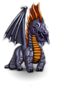 | Dull black scales catch brief reflections of the light as this tremendous creature moves towards you. The black scales, some pitted and cracked from combat but still incredibly solid, make a rustling noise as they scrape over each other. Yellowing teeth fill your vision, and the stench of acid fills your nostrils...
A huge reptilian form looms over you, baring teeth blackened by a strange fluid dripping from its fangs. As a drop falls, it seems to sizzle, and a thin white trace of smoke rises as it hits the floor. An acrid stench drifts in your direction, making you choke and splutter as it appears to eat away your lungs. | |
| 149 | ancient white dragon | | A bright dragon, white as a chalk cliff and just as massive. Tears in the wings and a deep scar are a testament to powerful battles. Frost seems permanently encrusted around its mouth and a stream of mist pulses forth with each breath.
Teeth covered in frost are locked in a perpetual grin, and bright blue eyes under a snow-covered brow give you a truly icy stare. Your breath condenses in the air and you feel like you're getting a cold. The leathery wings are immense, but they're frozen to the body and icicles hang from the membranes. Though its incredible cold certainly makes it a formidable opponent, the dragon doesn't seem too comfortable with its situation. Unfortunately, this means it'll probably act out its frustration on you. | |
| 150 | great red wyrm | | Deepest red in color, even with the vestigial legs, the wyrm is swift and fearsome. Its internal furnace radiates such heat that the wyrm's presence can be felt just by the rising temperature around it. They rely more on their breath and bite, since the legs have faded, but the wyrm can easily swallow most opponents whole, slicing and baking in one swift action. | |
| 151 | great blue wyrm | 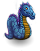 | The air is filled with the smell of ozone, and the distant buzzing sound of electricity grows louder. Suddenly, there is a blinding flash and the roar of thunder! Stunned, you gaze in awe at the fearsome power of the great blue wyrm. The whole world seems filled with lightning as this titanic serpent charges toward you. Its reptilian eyes hold only madness. The ominous hum of power begins to build in intensity once more as the great wyrm opens its huge, fanged jaws...
Dusty dry wings flap lazily, an enormous body covered in rich blue scales rests on legs reminding you of trees. A crackling nimbus surrounds this great creature and the crackling grows louder as it turns its attention on you. You feel extremely uncomfortable in the presence of this incredibly old and strong dragon. | |
| 152 | great black wyrm | | Intelligent eyes, filled with the hatred and pain of hundreds upon hundreds of years, gaze out at you from this vast body. Scales rasp along the ground as the wyrm moves ever closer, its yellow teeth gnashing the air, acidic breath leaving nothing but destruction in its wake. | |
| 153 | great white wyrm | | The once-white scales have faded and dulled, the wings are tattered and broken. Yet still, this ancient beast holds itself high with a sense of grandeur, and a deep wisdom lurks beneath the slightly-glazed eyes. A thick mist surrounds its whole body, swirling about as the dragon moves and the ground shakes. | |
| 154 | ogre lord | 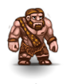 | Slightly larger than the average ogre, and perhaps not quite as stupid, these lords are better equipped and more vicious than the common ogre. They evidently rise to their position by entering competitions of various types among the tribe and managing to survive. They can be noted by the ceremonial scarring involved in one of the events.
Every ogre tribe has a formal chief. Their elections usually are great feasts, consisting of a lot of fist-fights, drinking and eating, until finally the one who has proved best in all three disciplines is declared lord of the heap. This rank means better food and drink and above all being entitled to shout at all others at the top of their voice and beating them up. Large ogre populations sometimes even let their chiefs fight the ogre triathlon against each other and make the winner king, which means even more drinking and shouting. | |
| 155 | white unicorn | | A large beast of the purest white, with a thick mane and a strange little beard under the chin, but the most astonishing feature is the long wound horn protruding from its forehead. Other than that, it looks pretty much like a horse, yet its beauty and sincerity almost make you break out in tears. It beholds you with soft dark eyes and you crave to touch it, but at the same time you feel too impure to approach this magnificent creature. | |
| 156 | water snake | | Sliding through its watery home, this snake lashes out at opponents, inviting them to a watery grave. These snakes are at home in water, sometimes appearing to be made of the substance themselves, but can travel and fight well on solid surfaces when the need arises.
You've learned that most snakes that live in the water are basically harmless reptiles that eat mice and frogs, but now that you've seen the frogs of this region, this isn't a very comforting thought. | |
| 157 | chaos servant | | Footsoldiers in the armies of chaos, no two of these beings look quite alike -- they come in a bewildering variety of sickening colors, gruesome skin textures, hideous shapes, and bizarre mental states. All, however, faithfully serve Chaos, and one of their duties is making more chaos servants. They view you as a potential recruit...
Obviously dedicated to the advancement of itself and its master, Chaos itself, this creature inspires your contempt.
A soul captured by chaos, animating a body it was called into to serve its strange masters. The bodies can be destroyed, but those who can call upon chaos itself can always force those slaves to take shape again. They form a practically infinite army of fighters for the cause of chaos, limited only by the possibilities of chaos to pervade this world. | |
| 158 | water demon | | A watery manifestation of some infernal spirit, it appears as a whirlpool, a column of water, or as a wave when moving. It seeks to envelop and drown its victims, much like the water elementals, but these spirits only use the water, they are not of its essence. They seem to have some goal other than the drowning of this plane, but it varies according to the nature of their summoning and summoner. They are malevolent toward living beings.
An evil spirit inhabits this vaguely humanoid form. The body is shaped from water and kept together by the will of the demon. Every drop of that water has been infected with the deep corruption of the demon's soul, and it tries to drown you in this perilous liquid, striking with the force of a torrent. | |
| 159 | water grue | | You'd say that was a huge fish coming your way, but no fish has four legs and no fish has that many horns. You can't seem to get a good look at it though, as it's hiding deep in the shadows. For such a large critter it's very stealthy... you've barely heard it make a sound. The nails on that thing could easily make sure you can't tell anyone else about this monstrosity either...
A shadow rises out of the water and edges closer. It seems made of the gloom in the abysses of the deep sea, in the depth of swamp holes and in the lightless lakes and rivers under the earth, still another darkness seems to dwell in there, a darkness that has filtered into this world and that now taints the dark places, lurking and growing until it may one day rise to swallow the light. | |
| 160 | Snake from Beyond | | At first appearing to be a huge variety of water snake, this beast is revealed as something corrupted into a horror all its own. Easily twice the size of a water snake, its surface is much denser, perhaps due to its deep-water origin, where it had to endure much greater pressures than in this easy realm. It is fast for its size, attempting to bite if it cannot wrap its victim in its body, drowning and crushing them with its watery essence.
An immense bloated serpent with a horned head resembling that of a dragon. Its scales are the blue of the deep sea, the greenish translucent white of old ice, the treacherous turquoise of a mountain lake, and many other tones of color. Yet all those colors also contain a hint of some diseased unearthly color which infects the water the snake moves through. You feel that you'll never be able to see a body of water again without those wells of eyes looking back at you. | |
| 161 | vapor rat | | When walking in fogs or mists, many people hear odd skittering noises that they attribute to strange echoes in the mist; they are really the sounds of giant rats who have bred in the fogs for so long, they have taken part of it into themselves and now have a hazy, misshapen border at their edges that makes them difficult to strike since opponents aren't really sure where the rat ends and the mists begin.
A thin pale rodent surrounded by a strange mist. The shape constantly fades into the mist, then again becomes more distinct, absorbing the vapors, then once again seems to dissolve. A proper rat shouldn't behave like that, so there's probably something wrong with it. | |
| 162 | air demon | | A swirling mass of air forms a dusty representation of something infernal. An electric charge seems to dart within and around the airy mass, always speeding to and from two points in the central mass which appear to be eyes; the lightning seems to fly from them toward whatever they focus upon. Whatever its origins, it seems malevolent toward others that do not share its elemental qualities.
You face a mass of vapors and fumes, moving of its own accord. A demonic force animates it and gives it a vaguely humanoid shape; pure evil glints in its eyes. | |
| 163 | air grue | | You believed these nightmares only existed in four-legged styles... your beliefs are now shattered... From a cloak of dark, this winged horror looks not unlike a massive bat, but with long sharp nails and a mouthful of large jagged teeth... It makes surprisingly little sound for such a large creature, with only a strange gurgling sound being heard.
A cloud of air, corrupted by the forces of Chaos, inhabited by a malevolent spirit. It appears like a very small black raincloud, but you seem to hear strange voices muttering in it, and something inside you claims that this cloud is in fact made of teeth. | |
| 164 | air elemental | | These magical creatures manifest themselves as small tornadoes or dust devils, depending on their might. They carry dust and small pebbles with them, which rotate with horrible speed through their 'body'. Curious and playful they often come across traveling adventurers, not realizing the hazard they bring to them.
An embodiment of the forces of elemental air, you'd expect this entity to bring to mind a warm summer breeze or the scent of a meadow in springtime. The dominant reminiscences, however, are cyclones and the bitter winter winds. You gasp for breath as a sudden gust of choking fumes drives the air out of your lungs. | |
| 165 | Master Summoner | | In this world, there are two kinds of powerful mages: the good archmages and the bad chaos mages. Unfortunately Yulgash belongs to the latter. His face has been twisted by anger unknown to you, his hands are crippled but full of magic. His face is wrinkled yet full of power, his robes torn yet chaotic and terrible. He eyes you steadily, thinking about who you are, but whomever you are he does not care; he made the armies of chaos for the domination, and he would not hesitate to make more of them in order to destroy you! | |
| 166 | fire drake | | This can't be a real dragon: it's barely as large as an alsatian, has only one pair of legs and long thin wings. The reptilian head ends in pronounced jaws under large flared nostrils and the bright eyes show a cunning not found in animals. It raises its head and snarls, and a burning heat springs from the mouth. | |
| 167 | fire demon | | A fire without apparent fuel source, these infernal creatures have been known to take a humanoid shape, but do not need to. They never take on humanoid features, instead creating the illusion of shape and texture through subtle changes in the hue and intensity of their flame. Their actions indicate some malevolent intelligence, but few can guess what intent would cause one to summon such a being.
This demon from the courts of chaos has chosen a body made entirely of flames and smoke. A desert heat strikes you that comes from unearthly places populated only by poisonous insects and snakes, scorched and burnt by a never-sinking sun. From beyond this world the demon's voice calls at you, as if it wanted to bring you to its home realm a captive. | |
| 168 | fire grue | | A dull flicker is initially all you can see of this beast. On closer inspection, what parts aren't cloaked in shadows appear to be a large flaming beast, slavering at the mouth. Large horns point out from its body in a haphazard formation, making it an ugly creature to say the least. Its repertoire of large fangs and nails also show it's a beast not worth taking lightly...
A cloud of smoking fumes that make you choke as wafts of the smoke drift to you. The smell seems sulfuric, but it makes you shudder with dread. The heat of the fires beneath the world makes you sweat and shiver at the same time, and mischievous voices seem to call your name. | |
| 169 | fire elemental | | These creatures originate on a different plane of existence where fire and heat dominate. The heat of their nature is dangerous to those not of their plane, so any contact with their form is dangerous to the integrity of one's Ancardian nature. They spread their element through contact or breath.
This whirling shape contains in itself the very essence of fire; bushfires as well as the fire in the hearth, the intense heat of lava and the insubstantial warmth of burning brandy as well as the incredible heat of the sun all are part of it, instilled and purified until only the spirit of fire is left, so strong it seems to drive all other elements out of you. Your blood seems to boil, your bones feel like they're about to burst into flame and it feels as if the air in your lungs is replaced by liquid fire. Like a blowtorch the very vicinity of this elemental being seems to evaporate everything that is not fiery within you. Even your mind seems to turn on fire, your cool and subtle emotions being driven out until nothing is left but a devouring flaming anger that might prove the elemental's undoing. | |
| 170 | Ancient Chaos Wyrm | | This creature is more than a dragon, and less than it: the enormous reptilian head and the great scaled torso give it distinct draconic features, yet it looks as though it never had grown wings and it only has one pair of legs close to the head. As you look closer, it looks less and less like a dragon: the legs are thin and bony, almost like those of a bird, and as you watch, the shape and features keep shifting. Parts of the skin suddenly grow hair, which then transforms into feathers, then into a weird crust, then into translucent smooth skin, then into the surface of a dark slimy liquid... and the collar behind the head grows and absorbs snakes' heads, tentacles, long trembling spider legs, stiff thorns and leathery strings lashing at the air. You realize that the wyrm must be at least in part a creature of chaos itself and probably part of it always resides in the realm of chaos. Although it might be impossible to kill it outright in this world, you're determined to make it give up its abode on this plane. | |
| 171 | stone snake | | This creature of the earth slithers through solid stone as easily as others pass through air. They strike with the strength of the rock they inhabit, knowing a safe retreat through adjoining stone will provide a chance to heal and strike again. Their skins greatly resemble the rock they inhabit, but nobody is certain whether this is a protective coloration or if they are actually made of stone.
This can't be right: Snakes can swim in the water or crawl on the ground, but if one actually floats through the rock like this one, your eyes must be playing you a trick. You really should get some sleep. | |
| 172 | stone grue | | From what you can see of it from here, this creature must be huge... other than the occasional horn sticking out or bits of skin, the beast is totally cloaked in a field of darkness. Loud gurgling sounds originate from the moving shadows, and the clicking of its nails on the floor can be heard as it moves. From its basic structure, it resembles a warthog, but no warthog is this big or this fearsome looking...
You've seen a lot of bad stuff, but this takes the serious biscuit: a part of wall that suddenly opens a mouth full of sharp stone spikes and snaps at you. The depth of its maw is shrouded in an unnatural almost solid blackness and a dry smell of burnt stone and pure evil rises from an invisible throat. | |
| 173 | earth elemental | | You see a large mass of stone, dirt, and clay, roughly jumbled into the shape of a man. It moves slowly but steadily, with no hesitation of any kind, occasionally moving into the ground or through a wall as if it were air! It keeps moving even as parts of its body fall off to the ground it came from.
An enormous pillar of rock looms over you, handless arms of massive stone thrust at you. It's simply impossible to stand in the face of such solid anger, and this embodiment of the earth's power relentlessly attacks while the element that surrounds it heals all its wounds by replacing lost substance and power. A threatening crack opens near what you like to think of as the head, preparing to bury you in a landslide. | |
| 174 | Ancient Stone Beast | | Buried beneath the roots of the mountains, chaos has awakened this unholy perversion of the elemental powers of earth. To you it appears like a vaguely humanoid shape sculpted in dark stone. Its feet stand within the floor and move inside the ground as it walks, the head does not merely touch the ceiling, it seamlessly connects with the rock above. Cracks widen and narrow as it moves, seemingly slowly, but purposefully and with long strides, ignoring all obstacles between you and it. A crack stretching all around what must be the head opens on one side, showing an array of sharp rocks in several rows. These teeth might not be good for biting, but they probably can grind everything to bits. | |
| 175 | dying sage | | A wizened old man with a long gray beard. Armed against the dangers of chaos with only his magic and the clothes on his back, still he has the look of one who has seen and survived much during his time in the caverns. With shaking hands and rattling breath, he also has the look of one who, tragically, will not survive much longer. | |
| 176 | greater chaos servant | | Obviously dedicated to the advancement of itself and its master, Chaos itself, this creature inspires your contempt -- but demands your respect for its power. | An ancient soul long ago sworn to the powers of chaos has taken abode in this body of tainted flesh, twisting and turning as the powers of chaos make it move through various humanoid shapes, from the oldest giants and gargoyles to the goblins and elves of the presence. This follower of chaos has served her masters in all those shapes and keeps remembering them over and over again. In all those bodies and times she also has learned many forms of combat she can use to great effect against you. |
| 177 | chaos mutant | | You almost feel sympathy for this twisted creature, its eyes (all ten of them) staring at you as though asking for help and rescue from the forces of Chaos which have so disarranged its mind and body. Your sympathy is rather halted by its tendency to damage you, though.
Once this must have been a humanoid, but now it is utterly distorted by the forces of Chaos. Eyes look at you from many places (there's even one on the left thumb!), showing no signs of a mind, only a rage caused by maddening pain and suffering. As you look, the body twists into other unnatural shapes, growing arms and legs spontaneously, the head twisting and disappearing into the back while a grinning mouth bearing needle-thin teeth opens where proper humanoids have a navel. Only death can stop its suffering, and in a mindless rage it flails madly at everything that comes near it. | |
| 178 | writhing mass of primal chaos | 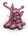 | These foot soldiers in Chaos' army are the cruelest mockeries of Law -- fallen heroes, once-great forces for Law, and even an occasional innocent bystander -- all mutated by the rampaging forces of Chaos. Now merely a congealed mass of body parts, these hideous abominations are capable of striking from each of its many mouths, claws, horns, and other miscellaneous appendages, the corrupting energies that fuel them spreading to all they touch. Their one weakness may be that their minds have also been destroyed by the transformations. Tread wary around these... THINGS..., brave adventurer, lest ye become one...
Tendrils shoot out of this pulsing blob, only to be reabsorbed back into the creature. Eyes bubble up to the surface of the sickly flesh and the sink back down. Hooks, barbs, and claws scratch at the ground. A number of mouths chatter constantly, their crazed language of chaos doing its best to drive you mad and pull you into their legion.
This heap of organic matter has been degraded to a flickering ever-changing mass by the twisting forces of Chaos itself. All its surroundings seem to start to move and change in its vicinity, and it greedily absorbs matter that is instantly ground to bits. A screeching and grumbling noise can be heard while it rips apart the fabric of reality. | |
| 179 | chaos warrior | | A once-humanoid being, converted by the powers of chaos into a living weapon. Multiple limbs bristle with weapons -- swords, axes, spears, and unidentifiable instruments of death, all of them shimmering with chaotic energy. Many of them seem to be part of its body, 'naturally' occurring results of its mutation. It glares at you with numerous battle-mad eyes, and seeks to find peace in death -- its or yours... | Once a great fighter, she has fallen prey to chaos. Yelling incoherently, she swings a mighty blade that shimmers a multitude of colors, yet all these colors feel deeply wrong and hurt your eyes. Something ancient and strange stirs deep within your soul. |
| 180 | chaos wizard | | You sense nothing but power and rage emanating from this creature's frame. In fight or in flight, the powers of this wizard are directed against anything that gets in its way.
Disproportioned hands weave ancient magic, and a deep muttering and chanting escapes the dark robes. You shudder, for no thing of this world can have such a voice, full of power and malice, so that your very soul resonates in an eerie and painful way. | |
| 181 | greater balor | | Very few of these legendary opponents of law may exist. If more did exist, the powers of law would have sensed them and acted to destroy them, as the greater balor is a threat to any manifestation of law. They, like their smaller relatives, appear as humanoids cloaked in fire and shadow, but this variety is titanic in stature, capable of dwarfing the giant kings. Their true power is unknown, as many of their opponents are said to die of fear when realizing what they face, but they must be mighty in combat. Their nature makes them resistant to most magics, and so they are worthy opponents for beings of both physical and magical strengths.
You perceive an entity not so much a demon but rather a festering wound in the fabric of reality. As you look closer (although even looking hurts your eyes) it appears to be a wriggling swarm of large black flies, composite eyes glowing a stark burning red. The shapes climb over each other in a seemingly shapeless heap, yet they all appear to share a single conscience, for they group into forms of weird animals with multitudes of heads and legs, into tree trunks ending in huge gaping maws, into dozens of other horrifying shapes, gradually shifting from one to the other. The bodies of several thousand flies appear to flow together into a long arm, tentacle, snake body, burning sword - an ever-shifting appendage ready to strike you. A constant buzzing and the scraping of chitinous shells against each other drive a pure evil through your ears directly into your mind. A voice dripping of a malice as ancient as the universe itself whispers: 'I am the one who is many and Legion is my name.' | |
| 182 | balor | | A towering demon of chaos. You very instantly know that this is one of the chief powers in the chaos forces, one of the captains of the guard. These are true creations of chaos, wielding a scourge of flame. It curses in a language that you do not understand while towering above you ready to strike. Its thundering wings and powerful muscles bring you almost immediately to your knees. You wonder, what does this demon possess that was feared so much upon the world? Well, it seems that you'll find out, and maybe die trying...
An ancient creature of chaos, they appear as enormous humanoids cloaked in fiery shadow or smoke. They are feared opponents whose nature makes them resistant to many magics and who strike with awesome and relentless force. They are feared even among creatures of chaos, sometimes being offered tribute, and so are usually well equipped and prepared to destroy.
One of the prime powers of chaos in this world, it represents all you imagine when thinking of angels, but twists everything into evil. Huge leathery wings are covered in eyes regarding all around it with an almost elemental hate; a nimbus of multicolored light surrounds it, and even looking at this unholy aura taints your very soul. You cannot make out arms, legs or even a head, but -something- swings a great whip with a multitude of thongs that appear to change shape as they move: you see tongues of flame, vines covered in vicious thorns, massive metal balls on chains...
A brilliant unlight pours over you and your bones seem to melt as this demon draws near, a power that never should have been unleashed. | |
| 183 | dwarven chaos knight | | The forces of Chaos have taken over this once-proud dwarf, changing him into a demented killer. Despite his splendid eternium armor, corruption has made him unbelievably ugly and unruly. He has his sword drawn, and looks like he will probably try to make you a minion of Chaos as well.
The powers of chaos have always been opposed by the dwarves who not only value peace and tradition very highly but also are so extremely stubborn that breaking their will seems nigh impossible. Still no mortal soul can withstand the eroding forces of primordial chaos forever and chaos has tried to capture dwarves for ages, so a few dwarves have also joined the ranks of chaos. These hapless slaves of a force they abhor attack recklessly searching death in battle so they may become free at last. | |
| 184 | moloch | | There might be a physical being inside the hulking armor, but most who dare to look report only seeing a stifling darkness accompanied by flowing waves of hatred and malevolence. While their movements are fairly slow, they are made with such directed hatred that even the strongest substances yield beneath their power.
Legend has it that this was the armor of an ancient warrior, imbued with magic that makes it move and fight by itself. A person mastering such a mystical machine and giving it a purpose must have been an all but invincible union of living being and magical construct. No-one can truly master them any longer, yet their magic has stayed intact and malicious spirits have taken control of most of them, using these behemoths as tools of destruction. | |
| 185 | swordsman | | A ruthless, blade-wielding adventurer, who will gladly kill you just to keep in practice.
An armed and armored soldier, the swordsman stands tall and ready for combat. Many of these warriors have left the armies of Ancardia to find their own fortunes alone, often going adventuring in the land's many dungeons, and sometimes joining the forces of Chaos. | |
| 186 | master swordsman | | This master of the blade calmly wields his favored weapon with arrogance and pride. Skillful enough to parry and disarm less skilled attackers, this veteran warrior proves the versatility of the sword, and the power of one well trained in its use. | |
| 187 | gray ooze | | Beware of these stone-colored blobs of acidic slime! Smart adventurers won't touch them with a ten-foot pole; those foolish enough to try find themselves with only a *five* foot pole and a well-fed ooze. By the time the shock at the sheer corrosiveness of these creatures wears off, the thing has usually replicated itself and surrounded you; many a brave hero has been overcome by such overwhelming odds. Fortunately, they do not possess any significant intelligence, and act only on instinct.
With a slight splashing noise, a puddle of a strange liquid flows towards you. A stinging vapor pervades the air around it. You are reluctant to come near it, for you fear what may happen to things getting in contact with this substance. | |
| 188 | mimic | | Masters of the art of ambush, mimics can assume the form of any object. Many slip into a shop unnoticed and hide among the wares, while others wait patiently in inaccessible locales masquerading as great treasures. Despite their outward appearance, all mimics have one or more long appendages covered in some sticky substance, with which they hold their prey while introducing them to their other distinguishing feature: razor-sharp teeth. If you're lucky, a young mimic might drop its ruse early if it hasn't fed in a while; if not, you might not realize the danger until it's too late... | |
| 189 | greater mimic | | You haven't known fear until you've been starving, spied a ration of food on the other side of the room, hovered over your salvation, and had this HUGE tentacle emerge from the thing and smack you upside the head, locking your muscles with some sort of toxin. All you can do is sit and watch as the food grows teeth and tries to eat YOU. Sure, you might survive, but you'll never trust another free meal again, and that's not the worst of it... The worst part is that these creatures can look like ANYTHING-- a potion, a scroll, armor, ANYTHING, and the greater mimics are so good at it you might never know what hit you.
A really nasty sort of creatures, these beasts disguise as items harmlessly lying on the floor. But if you try to slip your feet into those boots, the boots will grow teeth around the rim and try to gnaw your feet off. Fortunately, they often drop their guise while you're still some way away, so at least you won't be taken completely by surprise. | |
| 190 | master mimic | | You know it's gonna be a bad day when a bottle of water beats you up. These predators have no natural shape, and the shape they do assume is always different -- and VERY convincing. How can you recognize them? Well, if that 'inanimate' object in front of you suddenly has hundreds of nasty teeth and a couple of long, sticky arms covered in glue, then it's a master mimic. Pray you live to tell your tale, 'cause master mimics are the best of their species at what they do. | |
| 191 | necromancer | | These foul creatures have turned their attention to the creation of the undead. Bonding the souls of recently died creatures to their corpses, they strive to create an army to serve their every whim. Even though they are shunned by most good people, there are always those who would not see the error of their ways. If you ever meet necromancers, beware, for their undead slaves are seldom far. | She has learnt to use powers no living thing can touch without tainting their soul. Necromancers are hated everywhere and almost every community kills them as soon as they are found out. A hunted soul looks out of those eyes, knowing that for her even death will not mean deliverance from the suffering she brought over herself in her living days. |
| 192 | black wizard | | This dark magic-user appears to be a small, thin old human, with an evil scowl and eyes like black stones. His face is contorted and wrinkled, and his very skin crawls with dark energies, showing the chaotic origins of his power. A black wizard's magical abilities are gained in trade for the wizard's own soul.
This strange humanoid wears a long flapping robe and a silly cone-shaped hat, covered in mystic symbols that disconcertingly dance in front of your eyes. Pure malice glints in a maddened eye, and pale thin fingers begin painting strange symbols in the air, that suddenly take shape and radiate power. You'd better stop that nasty business right now! | This dark magic-user appears to be a small, thin old human, with an evil scowl and eyes like black stones. Her face is contorted and wrinkled, and her very skin crawls with dark energies, showing the chaotic origins of her power. A black wizard's magical abilities are gained in trade for the wizard's own soul.
This strange humanoid wears a long flapping robe and a silly cone-shaped hat, covered in mystic symbols that disconcertingly dance in front of your eyes. Pure malice glints in a maddened eye, and pale thin fingers begin painting strange symbols in the air, that suddenly take shape and radiate power. You'd better stop that nasty business right now! |
| 193 | revenant | | An aura of malice surrounds this ghostly figure. It laughs maniacally as it hovers toward you. As it draws nearer, you can see that it might once have been a person of noble birth; but now, the curse of undeath has reduced it to madness. Wailing and shrieking, it begins to attack you with a berserk fury!
Before he died, he was a wealthy person who could have led a peaceful and content life, but he had a restless soul and could never forget or forgive any wrong done unto him. Now he cannot rest in the grave, because there are so many matters left he desires to resolve. | |
| 194 | skeletal warrior | | Fierce fighters in life, skeletal warriors have been called back from the grave to serve some master. The stronger have been known to break free of those who brought them back, usually by violent means, and express their resentment of lost life upon any they find. | |
| 195 | gelatinous cube | | The first thing you'll note when a gelatinous cube is nearby is the total lack of any plant life or organic debris in the area. Gelatinous cubes are almost translucent with, sometimes, a slight green coloring. If you are lucky the cube will have some pieces of its last meal inside, so you'll be able to see it. So take a close look at those floating skulls!
A translucent structure of almost solid jelly slurping across the ground. As it moves, it engulfs items and dissolves them. It is larger than you, so you feel as though it were a good idea not to look like a delicious meal. | |
| 196 | yellow ooze | | The yellow oozes are unique among the primitive jellies in many respects. The first and most obvious is its conspicuous color, which is easily noticed in its subterranean habitat by any potential prey that can see. Also absent from the yellow ooze is the corrosive acids common to others of its type; the yellow ooze prefers organic prey, and as such utilizes poison instead. Since living prey tends to fight for their lives, the yellow ooze has also evolved a remarkable regenerative quality, making it especially hazardous to an adventurer.
A slimy oozing creature. It splits when encountering obstacles, and flows together again behind them. The bright yellow color and the stinging smell warn you that it's probably not safe to touch it. | |
| 197 | chaos rat | | This nasty thing has only a passing resemblance to rathood now. Its form melts and twists continually, occasionally dividing into two rats that rapidly grow to size.
The air seems darker and strangely viscous around this rodent. The dirty fur scintillates slightly and appears to rustle though there's no wind here. Its shadow begins to move of its own accord, as though it were about to drift away and take solid shape. | |
| 198 | gray slayer | | The gray slayer is the servant of balance, and is most easily identified by the slayer's neutral gaze. You never know if you are the target of a gray slayer until you are dead.
What a boring look. This guy can't have any taste at all, judging by the drab gray clothes he wears. The gray eyes in the completely unremarkable face take in the surroundings without granting any features greater or lesser attention. He has been sent to take the life of someone who has disturbed the cosmic balance or is about to endanger balance, and if you're in his way and killing you doesn't upset balance, your death might be considered acceptable. | |
| 199 | black slayer |  | A black slayer steps out of the shadows. Its body is twisted by the chaos it serves, its visage causes dread in the noblest of hearts. To encounter a black slayer is to encounter death, and your only hope is that you are not its target for at least then you may die quickly. | An agent sent by the lords of chaos to kill a powerful opponent of chaos or to punish a servant who proved unworthy. The slayer will not hesitate to kill people standing between her and her goal. To make obvious the powers they serve black slayers are completely cloaked in black, shimmering with strange dark hints of color. |
| 200 | green slime | | Here's one plant that no sane farmer would ever grow! Resembling a puddle of vomit more than any recognizable vegetation, this carnivorous greenery seems to be woven from the very essence of disease itself. Like any respectable illness, green slimes also like to spread, often reproducing before the initial entity can be completely dealt with. While not as destructive as some of its primordial brethren, they are no less dangerous.
Slimy, shimmering a bright diseased green. The stone under it seems to rot away. You wonder what may happen if you get some of it on your skin, and decide you really don't want to know. | |
| 201 | blink dog | | It can sometimes be difficult to ascertain this creature's features -- even when it is not teleporting vast distances across the landscape, it is often shifting position distractingly. When it is merely loping, it becomes possible to distinguish its streamlined canine features. Its bright yellow fur (and of course its lack of respect for inertia) distinguish it from lesser beasts.
A large dog looking vaguely like a golden retriever, yet there seems to be more to it. For one thing, it doesn't seem to be able to stay in one place. And it also has a lot of friends who just *love* to come and play fetch with you - you being the stick. | |
| 202 | doppelganger lord | | You recoil in confusion from your own mirror image! The strange figure seems to be your identical twin... only more so, somehow. Curiously, your twin seems to have a certain aura of majesty and power about it, and you suddenly feel as if it is you who are the pale reflection of the original.
You haven't seen your face for quite a while now - the dungeon isn't very well provided with mirrors. Thus it's quite a surprise to see your face on a body that's definitely not yours. Actually, you see all the features that make out your personality in this person, whether you like them or not. You feel profoundly insecure - you know that you are *you*, but this other one seems to be you as well. And you thought that there could only be one... You feel confused. | |
| 203 | ochre jelly | | Largest of the jellies, the ochre species is also the most dangerous, with an acidic secretion strong enough to burn through almost any substance. Rust-colored due to its metallic diet, the ochre jelly poses a dire threat to an unprepared adventurer -- and to his equipment. The jelly has evolved the arts of passive offense and self sacrifice: by the time one jelly dies, its prey is often so fatigued (and defenseless from the jelly's corrosive effects) that he fails to notice the jellies that have grown from the pieces of the original, ready to finish the job...
A waist-high puddle of a viscous liquid. It is a rust brown color and seems to eat away the floor it rests on. | |
| 204 | ghost bat | | A sudden breeze chills your bones as suddenly a small and near translucent figure in the shape of a vampire bat materializes before you. An eerie scream reaches your ears as this animal spirit opens its fang covered mouth and speeds towards you. Watch out -- it is said that even a single bite by this creature can prove hazardous to your health -- for YEARS to come...
This small undead creature may not really be the ghost of a bat, but it flutters and attacks like one. Suspected to be the unsettled spirit of any number of small animals, the form varies, but always seems to resemble a flying mammal. Small and wispy, it has enough substance to drain some life force from its opponents.
An almost insubstantial wisp of smoke, apparently flapping small wings too ethereal to even move the air. It looks as if it could drift right through you, but as the wings brush your face, a cold touches your soul that almost makes your heart stop. | |
| 205 | ghost lord | | There is a hierarchy even among the dead. One of the high positions is held by the ghost lord. A soul damned to wander the world forever, it has accepted its fate after several hundred years. It now commands the freshly undead, the souls of those just fallen. Like a general leading his troops, it sends its followers to wreak havoc on all who come across its path. It emits a wail of sorrow and hatred. Sorrow for its sufferings, hatred for those still living. In other words, you!
Perhaps it's the spirit of a person that was very strong of will; perhaps it has suffered a wrong beyond measure. The wrath and sorrow of this undead creature easily surpass those of a ghost, and its icy touch quickly withers any living being it passes. | |
| 206 | giant slug | | This over-sized slug is covered in a slimy substance it leaves behind as it travels. While not fast travelers, they efficiently predigest their food by spitting a strong acid onto food before ingesting it. | |
| 207 | dark elven warrior | | In the harsh underground environment, strength is honored and so those who can display strength of body along with speed are revered as warriors and powerful tools against the enemies of the race. This dark elf almost seems too muscular to be an elf, but the ears resolve all doubt.
An elven figure, but even thinner and a lot shorter than the elves you've ever seen. In fact, an elf with black skin and white hair is something you think just shouldn't exist. Your opponent regards you with contempt from totally black eyes and readies a blade that looks as though it were made of black glass. | |
| 208 | dark elven archer | | This member of the elven race, long ago driven underground and corrupted by evil, has spent many hours training in the art of shooting enemies from afar. They are accurate and dangerous with their weapon of choice.
If it weren't for the colors, you'd admire the beauty of this elf, the smooth skin, the wise narrow eyes and the long sharp ears. Yet the dark skin and snow-white hair let you remember the warnings about the dark elven race. This elf has learned to handle the dark elves' small crossbow and can also fight with a knife, if need be. | |
| 209 | dark elven wizard | | Those among the dark elven race who do not have physical strength must either display talents in magic or die young. In the harsh competition of the underground realms, only those elves with great powers survive to become wizards. The black eyes seem to glow with dark power, obscuring elvish features behind a dark haze.
Dressed like your everyday magician, only the black-skinned long ears and especially the hooks over the ears supporting the thick white beard (wiz. dress regulation paragraph 7a: the beard must obscure the entire face and reach down to the girdle; females are not excluded from the beard rule) give away the true identity. Spindly yellowed fingers gesticulate in the air as the wizard chants in a shrill voice, and suddenly the hands seem to turn into fat hairy spiders. | |
| 210 | dark elven priestess | | | A dark elf with spider emblems covering her skin and clothing. The elves of the underground have long worshipped the spider Goddess, and so her priestesses, dark in heart as in skin, keep Her servants close in body as well as heart.
A priestess of the spider goddess, she can call upon aid to the arachnids. The ceremonial robe is caked with blood, for her cult constantly requires sacrifices, and the priestesses are also taught in the arts of battle.
She is a very mighty priestess of the spider goddess, and as a reward for her faith, some of the deepest secrets have been laid open to her. Still, she does not profit from this knowledge, for a mortal mind cannot behold these roots of secrets and keep its sanity. A fierce madness is slowly eating away on her mind, making her more and more aggressive towards all she meets. |
| 211 | greater moloch | | Malevolence incarnate, if there really is a body to this armored mass of focused hatred and power. Working like time, slow but irresistible, the greater moloch seeks to beat down any structure or power that reveals an underlying order.
A colossus clad in armor rises in front of you; the long arms end in huge razor-sharp blades. You laughed at the people who told you that these beings were in fact massive plate mails possessed by evil spirits, but now the intense aura of evil surrounding this crushing monstrosity makes you doubt your confidence. | |
| 212 | dark orc | | This variety of orc is usually only seen deep underground, despising the sunlight as much as the dark elves. Their skin has darkened and their dark vision is even better than other orcs. Their residence in the deep earth has removed the weaker and slower members of the community, and so they are generally to be acknowledged as potentially dangerous. | One of the few breeds of orcs that always live above the ground, her skin has been burnt to black leather by the sun. Unlike other orcs, she doesn't squint in the light but grins broadly, displaying an assortment of yellow-to-black jagged teeth. |
| 213 | ratling warrior | | These uncharacteristically muscular and athletic ratlings belong to the ranks of the army patrol. They are detailed to keep law and order in the dungeons and will demand an explanation (um, sort of) from everyone who breaks the peace. Ratling warriors are heavily armed and always ready for battle. Their leathery skin is graced with many scars from past skirmishes. If you are an inexperienced adventurer, you'd better keep out of their way.
If you don't look too closely, you might think of him as one of the strange stuffed animal toys: a rodent with the keen eyes of a rat, walking upright and using the front legs as arms. Of course, toys don't come equipped with a sharp little sword they can poke you with. This well-trained fighter wears an embroidered short robe and you notice a large red triangle containing three lions on the shirt, marking this little warrior as member of one of the military orders that were founded centuries ago by the High Kings. | |
| 214 | ratling thief | | This former trader has fallen in with a bad crowd and consequently changed his line of business. Look at him: a sleazy appearance with a dirty blue overcoat, oily fur and filthy paws, scrutinizing you (and your possessions) with shifty yellow eyes. You wouldn't trust this customer an inch, and even that might be too far. After passing him in a narrow tunnel, you'd better count your gold pieces. | This former trader has fallen in with a bad crowd and consequently changed her line of business. Look at her: a sleazy appearance with a dirty blue overcoat, oily fur and filthy paws, scrutinizing you (and your possessions) with shifty yellow eyes. You wouldn't trust this customer an inch, and even that might be too far. After passing her in a narrow tunnel, you'd better count your gold pieces. |
| 215 | ratling archer | | It is no easy task to become a ratling archer. After having mastered the technical aspects of their profession, they usually embark upon a course in mystic contemplation. This training will finally allow them to form a unity with their missile weapon and become one with their missiles, their trajectory and their target (which is why they rarely miss). When you meet them in a dungeon, they seem to be introverted or even absent-minded, but once they whip out their crossbows, you'd better take cover. | First you mistook her for a very large rat walking on the hind legs, but she wears a leather jerkin and light shoes, and brandishes a crossbow. She takes aim with bright eyes, and the blue-and-black sash she wears across her chest displays the motto of her order: Wouldn't It Be Nice If Everyone Was Nice. Sadly, she's not willing to be the one who starts being nice. |
| 216 | shadow wyrm | | Colossal, and yet, TINY_SIZE, this creature is baffling to look upon. It seems to exist on the border of reality, somewhere between existence and nothingness, a shimmering black color, somehow unstable. Giant black eyes stare from the mass of ink-black scales, a gigantic roar echoing through your ears and shaking the whole world around you.
A huge shadow looms on the wall, stretching to the ceiling. You feel quite cold in its presence. The darkness on the ceiling begins to drip down, forming a huge head with immense jaws bearing strong teeth. You can hardly make out any details, as the apparition is completely black and doesn't reflect the faintest bit of light, but you feel that it must be staring at you. It drinks all light and warmth from its surroundings, and some more drops of shadow fall away from it, beginning to move independently from the horror that spawned them. | |
| 217 | shadow troll | | The foreboding shadow of a huge humanoid dances across the walls, although you cannot see such a being anywhere. You gasp as the shadow steps out of the wall and lashes at you with ink black claws. You don't actually see it - the hulking shape drinks all light - but you have the impression that something moves in the heart of the blackness, something from the darkness that was before the night came. | |
| 218 | ratling fencer | | A flexible weapon and lightning-fast movements are the strong points of a ratling fencer. They can be very deadly with their rapiers, so aspiring adventurers had better watch out! While you're still impressed with their whirling weapons, your sword of sharpness may suddenly be wrenched from your hands as if by magic. If you listen to them closely, you will find them muttering in a foreign lingo. But honi soit qui mal y pense.
Smart black eyes, nimble clawed fingers and well-kept gray-brown fur exemplify the race of this small fighter who specializes in swordplay. With perfect accuracy he goes through the stances, the thin polished rapier blurring in his hands. He earned his living as a mercenary and special agent for a while, but now he's taken up teaching his art to the people he meets; your lesson today is: How to die. | |
| 219 | master lich | | This lich is so successful at drawing the life forces from others to feed its powers, holding death at bay even though its own life has fled, that it commands power over some other undead. Its magic is powerful enough to support itself and still have energy left for a strong magical offense. | |
| 220 | lich king | | Even among the undead powers, some are so adept at drawing away the life force of others that they can command other undead to their bidding. The lich kings drain life from others so they can support their own un-lifely powers and attract and feed a following of liches and other undead, supported by the life forces drawn by the arcane powers of the lich king. | |
| 221 | emperor lich | | The most powerful of the liches, an emperor lich possesses such power and control over the magics that govern life and death that all other undead yield to their force. It is rumored that they draw so powerfully upon the life force that they can maintain a retinue of followers by completely draining a living being from a distance with a single spell. No survivors have related the power of their touch. | |
| 222 | dark elven lord | | These lords of the underground elves command powers of leadership over others of the rebellious race. These lords have a more fearsome appearance than others and usually have followers nearby, ready to serve.
Among the dark elves, a rank of nobility means less than among most of the races living above the ground. Being skilled warriors, lords of the dark elves are chieftains of their gangs of warriors in battle, and in the more peaceful times, they live as any other fighter. | |
| 223 | dark elven princess | | | Of the underground elven race, those with the darkest hearts and the strongest force of body and will rise to positions of power. Those who are counted as royalty are difficult for others to look upon as their power radiates from their black eyes. |
| 224 | orc butcher | | At first consideration, the orc butcher seems to be a large, oafish kitchen worker of an orc. Any studied observation will reveal that this creature is a butcher in more ways than one; an advanced knowledge of physiology, surprising for any orc, as well as a glee in causing the parting of flesh that has led to great skill and strength in dismembering, causes the butcher to be an opponent of considerable danger. Fortunately, their pride in their work forces them to work a bit slowly, considering the best cut for any given chunk of meat (you).
A large meaty orc swinging a massive sharp cleaver and wearing a stiff leather apron. Apparently he thinks of you as a piece of meat. Admittedly, it's not very easy to carve a joint that insists it can't stay for dinner, but he's used to cutting rump steaks out of living cows. | |
| 225 | goblin rockthrower | | This shrewd goblin has risen above the plain fighters with his deadly missile abilities. No longer having to fight on the front lines, this goblin stays at the rear (where it's safer), firing a hail of death at the enemy. | She's no good at fighting with her weak hands, but she's quite proficient when it comes to throwing stones from a slightly safer distance. |
| 226 | viper | | Aww... how cute: a small little snake... isn't it just precious? But there's something different about this wee snake that bugs you but you can't place it... You remember a small saying from your learning: 'Snakes of green, great to be seen... snakes of red, avoid and dread.' And this little thing's red. It isn't too cute anymore now, is it?
A small brightly colored snake. You remember that suspicious coloration in animals is a warning for potential aggressors, frequently because the animal in question is poisonous. | |
| 227 | rattlesnake | | A familiar rattling sound is your first clue that attracts your attention to this snake. You've seen these before many times before your entrance to the Drakalor Chain, but never one this close up before. Your parents preached to you as a child: 'Don't let them bite you they're poisonous blah blah blah.' Now you wish you'd paid more heed to their teachings...
A fat rust brown snake with a flat head that rattles a strange bony cone on its tail. You've been warned, proceed at your own risk. | |
| 228 | large snake | | Coiled in front of you is a large snake of terrible proportions. It could easily stretch ten to twenty feet, and is as thick around as your head. This reptile will whip its victim with its monstrous tail, then bite and drain its victim of life giving fluids. | |
| 229 | will o'wisp | | A floating light that seems to change from color to color while bobbing around; one minute it looks like a carried torch, then a campfire spark. While they are best known for luring prey into dangerous places, feeding on the escaping life force of the dying creature, they are not without their own powers for destruction.
A strange sphere of light, dancing in the air in an almost hypnotic motion. It seems to hover directly in front of your face, but as you stretch out your hand you notice that it is a few feet away. Still, if you just step over there, you can catch it, and get a better look at the weird shapes that dance inside it... | |
| 230 | ogre king | | When the number of ogre lords in a region rises above a certain density, they meet to challenge and determine if one shall be called king. Most ogres who enter the competition will be killed, with the brightest withdrawing before the main events, leaving the most brutal and least intelligent to fight for the position of king. If one manages to survive (sometimes all die), he becomes a king, able to rule all he can force to obey.
A very strong ogre, with tusks protruding from the mouth, the pale skin crossed by deep scars. He's used to have a dozen servants about him who get ordered around and beaten up so they actually carry out the orders. He's developed impressive muscles in his job. | |
| 231 | cobra | | This dark yellow serpent is characterized by the imposing dark spots on its head and neck. Roughly twice as long and significantly deadlier than a broadsword, it uses its toxic venom to slay its prey and defend itself against those who threaten it.
With a loud hiss, this snake lifts its head and beholds you with golden brown eyes. You might be too large to be considered food, but you came too close. Long teeth unfold, dripping venom, as the head slightly tilts backwards, readying muscles that will spring it forward as a black flash. | |
| 232 | king cobra | | This mighty, olive-brown serpent is enormous. As long as a pole-axe, it can be surprisingly difficult to see when curled in a tight loop on an earthen floor. Its incredible size is not, however, its most powerful weapon. It is armed with a deadly venom which can rapidly stop the breathing and heartbeat of its prey and enemies. | |
| 233 | white worm | 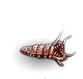 | This slimy worm drips a smelly, milky-white fluid. It lays eggs almost continuously. | |
| 234 | red worm | | This large worm has almost dry-looking, chitinous skin. Waves of heat rise from it, and the eggs that it lays emit faint wisps of steam. | |
| 235 | green worm | | This nasty crawling thing has green slime covering its segmented body. It lays disgusting green eggs frequently.
A huge maggot covered in green slime, writhing blindly in search for food. As you behold the track of slime it leaves behind, you notice that small maggots start wriggling in the stinking substance, instantly beginning to grow as they attempt to climb your legs. Disgusted, you squash them to a greasy smear, but new ones spring forth with every moment. | |
| 236 | purple worm | | This large purple squirming thing drips with slime. Eggs that it has laid are hatching rapidly-growing copies of it. | |
| 237 | brown worm | | This fat, unhealthy-looking worm is covered by nasty brown slime. Glistening eggs emerge from it every few seconds. | |
| 238 | titan |  | Standing at an incredible twenty five feet, titans look the same as regular humans in form. Their presence is usually announced by the rumbling footsteps of their approach. While most titans follow the ways of law and goodness, those inhabiting the Drakalor Chain have long since been corrupted by the powers of chaos. Like most evil creatures, they enjoy torturing those they do not kill outright. As an evil glare is cast your way, you hold back the temptation to run, for now. | An immense form cloaked in light emanating power and wisdom. Her kin have shaped the world in times long past, and once they were strong enough to fight the gods themselves. But their might has faded over the millennia, and now she searches the earth for the lost word, for the titans want to build again. |
| 239 | greater titan | | Appearing as giant humanoids of impeccable taste and beauty, these beings are rumored to be able to shape young worlds to their taste, changing landscapes and weather patterns through force of body and will. The greater titans do the actual designing and planning with normal titans to do much of the dirty work. Needless to say, the benefits of the position leave only the most powerful in it, and the work of world shaping makes them dangerous opponents as the simple burial of a life form is but a minor task to these beings.
One of the eyes and hands of the first demiurge, he has shaped coastlines, designed glaciers and piled up mountains. Now he's on an inspection tour, checking that the world still works as it was intended to. Judging by his concerned expression, you suspect that all may not be well. | |
| 240 | slow shadow | | These undead perceive life with incredible intensity through the slowness of their experience. Thus they have a powerful despising lust for both life and speed, stripping their opponents of both through their draining touch, if they can manage to make contact in spite of their slow speed.
A human-sized shadow without a body, rising out of the ground. It moves with ponderous motions, as if swimming through thick syrup, but as your hand tries to swing through it it meets a strong resistance. You realize that this patch of darkness is merely slowed by its own inert substance, and this blood of darkness begins to seep into you, clogging your veins and transforming your muscles into wooden blocks. | |
| 241 | karmic baby dragon | | About one and a half times the size of a man, this long-snouted creature regards you with wide eyes, its scaled skin gently shimmering between all the colors of the rainbow. Puffs of lightly colored smoke waft gently from its nostrils when it exhales, and although it seems young, it also appears quite fearsome, as upon a second examination you notice its claws and teeth. | |
| 242 | karmic dragon | | A great beast, its skin a mass of hardened scales which shimmer gently between all the colors of the rainbow, and more. Its head sits on a long neck, and is snout-shaped, with keen eyes set well back in it. Clouds of colored smoke issue forth from its nostrils as it exhales, and its powerful body stands upon four great, clawed paws, each leg at least the size of a tree-trunk. | |
| 243 | ancient karmic dragon | 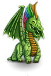 | Brightly shimmering scales cover the massive body of this creature, and four legs broader than any you have seen before support it, a mighty tail swishing behind it, slicing the air like a giant blade. Eyes as deep as the great rift itself regard you, boring into your soul as it considers you with a cold intelligence. | |
| 244 | great karmic wyrm | | My gods! How can anything that big exist? But it does. Standing before you, it now seems very real indeed, its scales flickering between a thousand colors, and torrents of smoke funneling from its nostrils when it exhales. Eyes the size of your fist stare down from the sky, briefly pondering your insignificant life. | |
| 245 | karmic lizard | | A lizard that greatly resembles the giant lizard, except for the color changes that ripple along its skin as it moves. They are not generally aggressive, but when they are, other creatures tend to avoid them, fearful of their natural defenses, the other quality they do not share with their mundane cousins. | |
| 246 | chaos lizard | | At first appearing simply as a giant, dark-skinned reptile, this vile creature is actually a lesion in the fabric of the world. Its touch withers even the stone beneath its feet. Fortunately, its alliance to flesh weakens its connection with the Chaos it embodies, allowing it to be slain by mere intervention of steel.
Hard scales shimmer an unearthly color, clinking metallically as the creature moves. It resembles the giant lizards of the underground in shape and stature, but it moves in a strange fashion, as if swimming through a thick liquid. The mouth contains unusually long teeth and the tongue appears to be a hollow pipe emitting a sickening multicolored light at the tip. | |
| 247 | frost giant jarl |  | Alone of the giant races, those of the cold are not beholden to kings, but to the ruling jarl, formerly those in power immediately below the king. The last of the kings was defeated by a stripling with little strength and so the position of king lost its honor. The dominant jarls decided to divide the power amongst themselves until one truly worthy of the title could claim it by defeating all of the jarls in succession. Since the jarls come into power only through defeating the great, this task has proven too difficult, and so these powerful giants rule their people.
Whereas the berserkers are the most devastating force the ancient elements have brought forth, the jarls - leaders of their tribes - are the wisest among them. They are immensely strong, like all of their kin, but to lead a tribe pure force is not enough. The jarls are the keepers of tradition and perform the rituals that allow the giants of ice to call upon the power of their creators, the ancient gods. | |
| 248 | frost giant berserker | | Sometimes among the giants of the cold there are challenges of strength for positions of power; when one who has long held power loses a challenge, they have been known to fly into rages of destruction that force their communities to expel them into the outer world. These berserkers seek only to destroy, refusing to acknowledge their loss of power by exerting it on all they encounter.
The giants of ice live far from all other living beings, but their tribes enjoy fighting each other. The most proficient of their warriors have learnt to enter a rage that gives them legendary might; they loose avalanches, break icebergs from glaciers and sometimes even throw immense sheets of ice into the sky. Few adventurers succeed in taming this incredible force. | |
| 249 | fire giant king | | Even among this large, fiery race there are those considered to be kings. These excel at contests of strength and speed and are able to lord their power over others of their race. Some say their strength comes from a burning desire in their hearts for more power, but it might just be that they are meaner than most.
Among fire giants, this one represents the epitome of fire giant leadership. He is extremely aggressive and commands a menacing and formidable presence. Other fire giants follow him with loyalty.
Long before the first elves beheld the stars, a couple of ancient gods shaped the elements of their world to form the giants, from Stone, Fire and Ice. The giants haven't evolved much since then, and the fiercest of them rise to ranks of command. This giant burns with an inner fire and the huge hairy fists bear scars from many a fight. | |
| 250 | hill giant chieftain | | A huge humanoid covered in furs and dirt... muscular and filthy, violent and brutish. With amazing ease he carries a medium-sized tree and a fur sack filled with animal corpses... or is that a hurthling peeking out of the sack? This giant wears a bone necklace as a badge of authority, although his stupid grin makes it hard to believe that he could lead anything but a frenzied berserker horde. | A pile of rocks and dirt steps in front of you... no, it's a ferocious, filthy, female form, clothed in what looks like hippogriff hide, wearing a necklace of dwarf skulls. She has some misshapen skull perched on her head -- a troll's, you pray, please nothing tougher than a troll's! She wails 'Can't ye idiots catch one runty little t'rall? Do I have to do it meself?'
She knows her right hand from her left, which makes her a sage of the race of these large hairy people living in woodlands and on hills. She has figured out that commanding other people around occasionally gets things done, and thus she took up this line of business, which makes her a chief. |
| 251 | stone giant lord | | This solemn, massive figure is stronger and more eternal than the granite beneath your feet. Its rest has been disturbed; its home has been invaded. The stone giants over whom it holds dominion have been wounded and slain, and now it seeks revenge for its people. It looms over you menacingly; its strength is legendary, and its temper, now aroused, will not be sated by anything less than the total annihilation of all who have wronged it.
He woke up because some forces have drilled a whole dungeon complex into the mountains. Since the actual perpetrators are beyond his reach, he has decided to just crush some intruders who don't respect the stone. His stony muscles give the boulder-sized fists enough force to break ancient oaks like dead twigs, and the skin is so hard that you could just as well try to slay a city wall. | |
| 252 | ratling master thief | | Unlike their amateur colleagues, these ratlings have mastered the art of thieving to perfection. Their elegant silver tunic in combination with a soft voice and well-bred accent are bound to give the impression of a wealthy, upper-class gentleman (or gentlewoman). You'd never suspect where all their jewelry came from. They will engage you in civilized conversation until you could swear to their nobility and trustworthiness. But watch out! Don't turn your back on them, or you will find their manicured paws deep in your backpack. | In all the plays of rogues and thieves who take their mastery so far that they eventually are skillful enough to steal an entire castle, she would always play the starring role. She moves with unsurpassable stealth that is aided by her small size. Her thin clawed hands can enter cracks too narrow for the wrists of any other humanoid. For her, you're but a training dummy. |
| 253 | lightning lizard | | An overgrown lizard with yellow stripes running down the dark black scales. The smell of ozone fills the air around this creature. The air crackles expectantly as it moves about, with occasional sparks of light on its skin. | |
| 254 | ratling warlord | | A seasoned veteran, and no mistake! He is taller than your average ratling, of heavy build and well-armored, a walking tank really. When you hear his thundering voice, you will readily believe that this is the mighty ruler of all ratlings. His eye-patch gives him a sinister outlook, and his ice-cold stare will give you the shivers (although you may not live to share this unforgettable experience). Ratling warlords of outstanding merit are sometimes chosen to be artifact guardians. If you meet one, you'd better be prepared. | |
| 255 | shadow lord | | Now members of the dark undead, these shadows were formerly beings of great stature or power, called back to an existence that leaves them craving contact with living beings, whose life force provides their nourishment. These lords amongst shadows are feared even among the undead. Such is their thirst and drive for the essence of the living that nothing is safe if it prevents the shadow lord from draining the life from a living creature. | |
| 256 | caveman | | A huge, hairy mass of muscle lumbers toward you. He wears only the skins and furs of slain animals. More beast than man, the caveman eyes you hungrily, as cavemen rarely have preferences in their eating habits. They don't care if their meat is cooked or raw, hog or hurthling.
'Hello, friend.' 'UUrrrgh.' 'What is your business in these caves? May I help you?' 'Grawwrrrgrgh!' 'Please put that club away. Someone might get hurt.' 'YEURGURRRGRRR!!!!!' A low forehead, strong almost ape-like teeth and very poor conversational skills as well as a bad attitude - this must be a member of the fabulous cave-dwelling tribe you heard about. You've also been warned that they tend to eat unwelcome guests, but hope that's an unfounded rumor. | |
| 257 | berserker | | This large, fur-clad northerner has long, braided hair, and is screaming obscenities at you, spittle flying from the mouth. | A fearsome warrior, wearing naught but a loincloth and blue paint, who has gone into a rage and now attacks everything she encounters. |
| 258 | berserker lord | | This reckless northern warrior is a cut above the usual fanatic, swinging with great force and accuracy.
You haven't insulted his grandmother, you haven't made a joke about his kilt, still this fierce fighter behaves as if you've shaved his pet gerbil, then eaten it alive. Maybe he's just in a filthy mood, but why must he take it out on you? | |
| 259 | berserker prince | | This mighty fighter possesses almost devilish power and fury, attacking all nearby with frenzied strength.
How revolting! Unkempt hair covered in grease and maybe some blood, spittle flying from the mouth, and a stink like half a dozen goats (or a dozen half goats). You'd be deeply grateful if this person kept away from you, but a battle-cry and a nasty spiked club coming your way make it look like a fight can't be avoided. You hope you can get a good bath afterwards, in case you survive. | |
| 260 | berserker king | 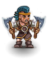 | A jeweled iron circlet holds back the long, wild hair of this fearsome, foaming fighter.
With a deafening yell, this warrior leaps at you. Scars cover his skin, from battle and self-inflicted wounds while under the influence of drugs silencing pain. War paint covers his body from head to foot, and a great notched axe is swung by strong arms made even stronger by the mystical battle rage. He doesn't waste a single thought on parrying your strikes, but his reckless will to attack makes it highly probable that he'll have you skewered before you can exploit the gaping holes in his defense. | |
| 261 | berserker emperor | | This warlord is a truly horrific sight, with eyes long bereft of sanity, but battle reflexes long unrestrained by conscious thought.
He is an immensely proficient fighter, and ceremonial drugs have instilled in him both a mindless rage and the ability to almost completely ignore pain. If he becomes aware of you, he'll attack, and only his death or yours will put an end to battle. | |
| 262 | pixie archer | | Small cute lovely humanoids with butterfly or dragonfly wings. They are clad in colorful or earthen-toned stuff. All pixie-folk have a sense of weird humor with a streak of meanness. Lots of meanness! Actually the Pixiebow is all pixies' favored weapon, because you can put these funny things on the arrow tips. These things make big people do *such* funny things...
Not much different from any other pixie, but this colorful small person also has a tiny bow strung with a gossamer thread and loves to shoot small arrows no thicker than a human hair, but bearing some of their own shimmering dust which tickles and itches the creature hit. | |
| 263 | chaos warlord | | The grizzled and scarred face reminds you of a mindless warrior, but you sense the power of this creature's cunning mind as well. He wears rune-covered armor, embellished with demonic visages of utmost horror. His shield depicts scenes of torture and slaughter and his weapons are stained with blood. In his eyes there is nothing but hate and evil.
An expert at combat, this ancient fighter has served chaos too long. Now his mind has been torn and twisted and his tainted flesh almost instantly closes and heals when he is struck. Heavily armed and armored, he is a true challenge for a warrior. | |
| 264 | greater fire elemental | | Appearing much as a burning tree, but with a more malleable form, this is a creature made of the essence of fire. Most find its very presence uncomfortable, as it releases great heat and ignites most things it contacts. It seems to enjoy sharing its essence with matter and bringing that matter into its state of being, if only for the short time while the material burns. Reports indicate that they change colors gleefully when igniting a living creature that dances around in imitation of their life force while briefly sharing their state of being. | |
| 265 | greater air elemental | | The greater air elemental is, more often than not, summoned by a wizard from the elemental plane of air. Unhappy with their sudden kidnapping, they normally try to escape the magical bond and do whatever it takes to battle their new master. More than one wizard has met his untimely demise at the hand of a disgruntled greater air elemental. | |
| 266 | greater earth elemental | | A living mountain of stone rises up and takes mobile form! It has no noticeable eyes, or head at all, but it seems to be aware of its surroundings without senses or mind. The ground trembles, and great clouds of dust rise into the air as it obliterates anything foolish enough to stand in its path. | |
| 267 | greater water elemental | | This elemental shifts and undulates, ebbs and flows, separates and rejoins, rises and falls, with a nearly hypnotic motion. However, the power contained beneath that smooth surface is unmistakable. As the fluid dance progresses, you hear the rumbling force of a glacier; you feel the terrible scalding of steam; and you witness the devastating power of a tsunami. Suddenly the elemental transforms into a geyser, driving you back with its awesome pressure! Your lungs cry out for air, as the world around you is filled with water.
In its home plane it must possess god-like powers, and it brought an illusion of this world here. All your surroundings are steeped in a dark blue light, and the air seems a lot denser. Ghostly skins seem to span the gaps between your fingers and you feel like you're growing fins. | |
| 268 | black unicorn | | A great creature similar to a horse (but with cloven hooves) bearing a long smooth horn on its forehead. It is completely black, and the blackness seems to radiate from its frame. Black unicorns are said to be the shadows of unicorns that have acquired shape and substance and now symbolize the powers of pure evil, as the white is the embodiment of pure goodness. | |
| 269 | chaos spawn | | Disgusting, amoeba-like blobs of matter, with a nucleus of pure chaos. They are constantly growing, changing, evolving, dividing...
An ever-changing entity, it appears to be a hole in the air. As it whirls and turns, part of it gets separated from the rest, forming a new one. It moves with the air and like air envelops the features of its surroundings - but this kind of 'air' makes everything it contacts look strange and wrong. | |
| 270 | chaos plague bearer | | A gruesome mass of pus and flesh in almost humanoid form. You are revolted at the thought of battle with this walking disease vector -- and worse, the disease is Chaos itself, not any simple infection.
A sickening creature shambles near. Clouds of flies hover over infected wounds and a slimy skin that seems to be rotting away. The stench is breath-taking. To make matters worse, these creatures have been nurtured in the pits of chaos and try to share their native element with all they touch. | |
| 271 | ratling duelist | | This choleric ratling is always ready to throw down the gauntlet. His bright red combat suit protects him tolerably well and offers almost no handhold to his opponents. If your movements aren't swift enough, he can easily disarm you, so you'd better hang on to your weapon or train yourself in alternative fighting techniques. Be warned that the ratling duelist observes a strict code of honor. To save your face, you'll have to show it. If not, only blood can remove your shame.
He is really concerned with manners; member of ratling nobility, he expects you to treat him with all due respect and never deviate from court etiquette. If you fail to meet his standards, he'll get really agitated, likely to fight you to the death in order to defend his honor. You feel like jumping off a window ledge, just to get away from these piercing eyes. | |
| 272 | rust monster | 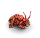 | The rust monsters used to live in a lone mountain range in an outlying district of Ancardia. On one of their seasonal migrations, they were trapped in the Drakalor Chain by the forces of Chaos. Unfortunately, their new home is very ill suited to their health. Their diet requires a complex cocktail of trace elements, minerals, ores and metals which are hard to find outside their native biotope. With their acid-dripping claws, they try to etch these substances from rock seams in the dungeons, but due to a very poor yield, they had to resort to attacking every adventurer with a promising looking backpack. Don't let them touch you; their corrosive grip will ruin your weapons and armor. Be generous and feed them, and they will soon calm down. | |
| 273 | large rust monster | | Like their smaller cousins, large rust monsters were trapped in the Drakalor Chain against their will. These huge creatures suffer a lot from the inadequacy of their new environment. As they never seem to find enough minerals and metals to keep themselves fed, they are constantly in a very bad mood and attack everything that moves -- including *you* should you be unfortunate enough to cross their path. You can try and feed them some spare quarrels from your inventory, but as a rule, large rust monsters are very hard to please. So before your most cherished equipment begins to rust -- run away, run away! | |
| 274 | corruptor | | The corruptor shows itself to be an unusual Chaos being, seeking others rather than only its own power. Perhaps the fact that it corrupts everything it touches explains the hunted looks on the faces of the others.
His very steps taint the stone underfoot and leave twisting and diseased shapes springing up and withering in his wake. The world seems to groan under the strain of this evil that distorts reality itself. It is the essence of the corrupting forces of Chaos which has taken shape and walks the earth, and you'd better try to send it back whence it came from. | |
| 275 | annihilator |  | Black, leathery skin covers its long, twisted limbs, and its slimy teeth constantly gnash and grind together. It croaks and twitches its long, bony fingers, looking for something to tear to pieces. The reek of lightning precedes this hideous monster, and it leaves a trail of utter destruction in its wake. Even the ground it walks on seems to burn away beneath its feet.
Severely twisted by chaos, this creature's arms don't bear hands but end in spheres of blackness. Looking at those 'hands' sucks at your eyes and you get the distinct feeling that they're in fact holes leading into a different dimension, sucking all it touches into this strange otherworld. | |
| 276 | mummy | | A dead, desiccated form, wrapped in bandages and animated by the darkest of magics. All that is left of its mind is an urge to kill anything that intrudes upon its domain...
These undead remnants of ancient lives are wrapped in the old dry cloths of their burial ceremony. They lust for life and attempt to steal it from any living being they encounter. They are usually found in places of final rest, but some are known to wander the world seeking some long-missed item or being of lost love.
Before this corpse was laid into the grave, the flesh was treated with herbs and unctions that slow decay, and all the rituals have been performed to grant the soul safe passage to the West. A remnant of the spirit has remained in the body, however, to protect the hallowed rest of the dead against all who dare desecrate the grave. | |
| 277 | greater mummy | | These undead creatures are not the remnants of a mere being who could afford the proper burial ceremony, but were passed on with additional herbs and sacrifices which grant them greater strength in their current form. While they are still shrouded in their old, dry cloths, they have greater physical power and speed than the mundane mummy.
Member of ancient royalty, this corpse was given a special treatment, granting it greater strength and preserving the dead body a lot better than is common for the 'ordinary' mummies. The corpse is desiccated and dusty, yet features of the face can be made out. Precious ornaments adorn the wrappings and powerful charms and amulets give it the ability to rise and protect its grave against desecrators. | |
| 278 | gibbering mouther | | A hideous brown mass of flesh, eyes, and mouths. It flows toward you, mouths attaching to the ground and walls like suckers. As it nears you can hear a horrible cacophony as the mouths gibber to themselves. You think you can make out something in the babble -- is it the secret of immortality? Or the recipe for elf stew?
You feel alarmed: if such unnatural horrors can exist here, something must have gone very wrong. A disgusting heap of rotting flesh wriggles across the floor in your direction, a multitude of mouths -human, humanoid, animal, demonic- open and close, chattering madly at whoever may hear. You try very hard to understand, but you can't make out anything in the jumble of dialects, languages and unarticulated gurgling and yelling. You inexplicably start thinking about monkeys and typewriters, and wonder what in gods' names a typewriter may be. | |
| 279 | corpse fiend | | These undead creatures hate both life and death and seek to ease their painful non-life by eating the corpses of others. If a corpse is not available, they have been known to create one from nearby living beings.
The spirit of a merciless and faithless person who thus couldn't find rest after death. Caught in the shape of a disgusting bird of carrion it wanders this world, devouring unburied carcasses and infecting those it nears with its impurity. | |
| 280 | crystal statue | | A roughly humanoid creation of quartz and other crystals, most of these stand taller than those they represent and attack with the sharp edges of their crystalline form. They are known to heal themselves through crystal growth which can restore chips of damage at an incredible rate. When destroyed, they usually shatter entirely.
This 7 ft. statue, made from crystal, is definitely a piece of art. Unfortunately, you don't appreciate it as much since it also happens to be animated and eager to fight.
It's really hard to see, being translucent. Crystalline prisms break and reflect the light, and as it moves, the crystals move and regroup permanently: even its ponderous walk seems to be but a constant shifting of crystals. With a mighty stroke you chip off a bit, but new crystals instantly grow into the hole to close the wound. | |
| 281 | stone statue | | If it wasn't moving, you would think this was just a statue. Rock dust trickles from its joints as it walks towards you.
The shape of a great warrior, hewn in stone. It moves ponderously, stone dust cascading from it, and the ground trembles under the weight. A strange heat radiates from the mighty hull, as if magma was underneath the surface. | |
| 282 | farmer | | This is a hulking peasant dressed in burlap and dungarees. The farmer looks at you without much interest while slowly chewing on a plug of tobacco. A weather-beaten straw hat rests on the farmer's ancient brow, and the farmer's face is lined with the deep wrinkles caused by many years of work outdoors. | |
| 283 | child | | A small, dirty creature, dressed in rags, this little child looks at you with great awe and admiration. Perhaps the child will one day grow up to be an adventurer too, but for now seems to be more interested in a treat than in a fight. | |
| 284 | goodwife | | | A large, matronly woman of middle years, dressed in an old frock of indeterminate color. Perhaps she was pretty in her youth, but these days she's more of a battle-axe than a bathing-beauty. She pays you little heed as she rushes about on her daily errands. |
| 285 | druid | | Clearly a being at peace with nature, small animals dart about and sit on the druid's shoulder as the grass seems to bend just before footfall. A soft breeze blows and the sunlight seems a little more pure. Dressed in humble robes of simple cloth, the serenity is disturbed only by a look in the eye that speaks of deep or secret knowledge. | |
| 286 | great water dragon | | | Water dragons this large are extremely rare in any but massive bodies of water, as most require very large ranges for hunting and treasure accumulation. This creature manages to be bulky and sleek at the same time, with large membranes between clawed fingers and fins along the entire body from fanged head to the powerful, swishing tail. The eyes glow slightly beneath the nictitating membrane, allowing excellent vision under most circumstances, especially when hunting for prey or additional treasures for the hoard. They are the fiercest when defending their treasure or their young. |
| 287 | baby water dragon | | A small dragon scaled in dark blue. Its yellow beady eyes filled with sorrow as it howls to the sky. As you approach the poor thing, you're filled with pity. Seeing the dragon crying its head off now and then makes your heart break. | |
| 288 | giant eel | | Like their smaller cousins, these elongated, snakelike fish have slimy skin and a voracious appetite. Some specimens have been found large enough to swallow humans whole, but they also have a vicious bite, and their body-length fins allow amazing maneuverability for quick strikes. | |
| 289 | giant turtle | | Known primarily as a defensive creature with its giant shell, most of the survivors of this over-sized species are more aggressive due to over-hunting for the shell, which makes an excellent boat hull when hollowed out. They appear lazy, but swim with surprising speed and can snap with their bony tooth-like ridge and powerful jaws before many opponents realize they've moved their head. | |
| 290 | dragon turtle | | Thought to be a missing link between drakes and more mundane reptiles, these large turtles have dragon-like heads and are known to use a breath-like attack as well as their powerful jaws when attacking opposing creatures. | |
| 291 | giant dragon turtle | | Thought to be a missing link between dragons and more mundane reptiles, these giant turtles have dragon-like heads and are known to use a breath-like attack as well as their powerful jaws when attacking creatures or floating vessels within their territory. | |
| 292 | shark | | An aggressive fish with roughly textured skin and several rows of razor-like teeth, they attack in a frenzy after detecting their prey with their sensitive sense of smell. Bloody water makes them even more aggressive, and each bite is like several due to the multiple rows of teeth. Especially fear the ones with black tips on their fins. | |
| 293 | giant shark | | Thought to be an extremely old variety of shark, these behemoths feed on anything that crosses their paths, snatching normal-sized sharks from kills like sampling a buffet. Their teeth are valued in certain communities as swords and their skins can be used to polish stones. These uses are very rare, as most hunters of giant sharks are either in-training or dead. | |
| 294 | fool | | Random clothing and what appears to be a random gait to his walk make this individual appear, well, foolish. Stopping to talk to anyone who will listen, a few words are said before skipping or hopping away and taking a few swallows from a bottle. | |
| 295 | master necromancer | | The dreaded master necromancer is a creature of utter evil, even more sinister than 'normal' necromancers, for they have found ways to create even more powerful undead to serve them. Maddened by their horrible experiments, they have no concern for the living, striving instead to conquer the world.
He has spent most of his life learning the dark arts of forcing the dead to serve him as slaves, and he won't allow you to stop his schemes of conquering a realm of his own. He has mastered enchantments that instill a deadly cold in his opponents and allow him to heal his wounds and increase his stamina. If you try to break his power, he'll send rows upon rows of his mindless slaves against you. | |
| 296 | undead chaos dwarven berserker | | The rotting flesh and brittle bones of this dwarven hero have been brought back to life, but not for the purposes of good. He advances towards you, his mottled hands holding no weapons but appearing to be nasty enough by themselves. As he lets out an unearthly battle cry, he prepares to tear you apart...
Griff was one of the greatest dwarven fighters of all time, and the forces of evil hated and feared him. But then he was overrun by the slaves of Nonnak, one of the most despisable evil magicians, and this necromancer has exacted a cynical vengeance on him, reviving Griff's corpse as an undead horror under his control. Unable to break the spell, the decaying flesh and bone of this great hero are forced to fight for his hated enemy until his grave is purified. | |
| 297 | village elder | | His wizened face is furrowed with deep lines from years of laughter and worry, reflecting his life in the farm community. He appears not so much worn as well-worked, like a field that has been tilled for many years, but will still yield valuable crops if properly handled. His eyes hint at deep experience and knowledge of his immediate world. | |
| 298 | mad carpenter | | Yrrigs the carpenter, that's what everyone used to call him when he still was sane. But now what you face is more than an everyday carpenter. His clothes have already been soaked with the blood of the creatures he slaughtered. His hatchet is shining with a grim glow. Now you know what Chaos can do to a man. | |
| 299 | large dog | | This stalwart canine is a fiercely loyal protector. Its heavy-set body and powerful jaw equip it well to survive on its own, or as a servant to a more intelligent beast.
A dog won't bite the hand that feeds it, but most dogs that roam the plains and the shallower dungeons of the Drakalor Chain had to feed themselves for quite a while. This race of dogs consists of good hunters who can bite an unfriendly hand very badly. | |
| 300 | eternal guardian | | Heavily armored, and barrel-chested, this man is HUGE! He stands much taller than you, and is far broader, the folds of his armor hinting at the power beneath. Few of his features are visible beneath his visor, but you can feel cold, hard eyes sizing you up where you stand. | |
| 301 | bunny master | | A small man with eyes of malice, long elf-like ears extend from his head. In his hand is small knife, a rabbit knife... Then all becomes clear, it seems that what you just met isn't the butcher, it is the lord of the battle bunnies! Be careful, he bites!
Just a moment ago, you've seen a strong man of indeterminate age with wise and cunning eyes, but now it seems to be a human-sized gray rabbit with long teeth and powerful fore legs. You realize that both images are there at once, and that you're facing both an experienced fighter and the spirit of a race of pacifist creatures that have become just a tiny little bit angry at being trod upon, run over and dismembered by larger creatures all the time. You brace yourself and know that it may go pretty rough with you before you can say 'That's all folks!'. | |
| 302 | steel golem | | This mighty construct has been crafted from bright, burnished steel. Each piece of it is masterfully crafted. Every motion is mechanical and precise, joints turning smoothly and silently. A bright furnace heat radiates from its eyes.
A large torso of polished steel, resting on a pair of massive legs. It sports a large round rotating blade instead of a head, while three small metal spheres mounted on flexible antennae rooted in the middle of the trunk appear to take in its surroundings. Oiled joints and hinges move accurately and with slight clicking and whirring noises. Some engine must power it, for scalding hot steam escapes from a flexible pipe which can probably be used as a weapon as well. | |
| 303 | steel horror | | This mass of steel tubes, blades, and wheels looks less like a creature than a tinker's cart, yet somehow it is alive. It rumbles forward with a stench of burning oil, its blades spinning mindlessly but very fast, the tubes sweeping back and forth as if looking for prey. | |
| 304 | animated armor | | Whether a creature of mechanism or magic, no one is sure, but this suit of armor, polished in some sections, tarnished in others, seeks blood to cleanse its surfaces and sharpen its edges. | |
| 305 | steel zombie | | A huge mockery of a man, of steel and copper, with great taloned hands. The gleaming red eyes catch sight of you, and steam wafts from its back as it lumbers toward you. Its mouth is fixed in a hideous gaping grin, belching fire.
An undead creature clad in steel armor, the decayed hands replaced by heavy maces with sharp flanges and spikes. The hate of the undead against the living makes its attacks a lot more directed than the mechanical unemotional actions of golems. | |
| 306 | dwarven artificer | | This malevolent dwarf mutters to himself constantly as he hammers away at chunks of steel, planning to shape them into creations of evil. You can almost see the purple aura of chaos glowing around his stunted, twisted form. He turns to you and chuckles about something, something you probably don't want to know. | |
| 307 | healer | | The white robed figure eyes you grimly, his silvery eyes filled with pity as you approach him blood-soaked. His face reminds you that there is always light in the darkness. So take heart, your journey will soon end.
A small human wearing a white coat and a reassuring look, the healer seems to lack much physical power, but the knowing look speaks of skills that allow survival in places others might not endure. The hands appear well used, but not callused, probably skillful in small, quick ways, but not used to rough labors. | |
| 308 | greater white unicorn | | | Waves of power and Law radiate from this magnificent beast. Her coat glitters as if sprinkled with diamond dust. She moves with grace, speed, and purpose, occasionally breaking into a gallop so fast she seems to be here one moment, and somewhere else the next. |
| 309 | greater black unicorn | | There is something subtly eye-twisting about this mighty one-horned beast. An unsettling aura surrounds it, making things near it seem misshapen and distorted. You get the impression that there is something hideous writhing underneath its black coat, trying to get out. | |
| 310 | bandit | 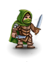 | You see a fit but seedy-looking human, glancing around with shifty eyes. Bandits are often poor townsfolk that turn to a life of crime, either alone or in large bands. These common thugs are armed, and prey mostly on the weak and helpless.
An extremely disreputable human. They gang up and engage in all kinds of crimes, being especially good at bullying weaker folks. | |
| 311 | outlaw | | Wearing the colors of no lord, outlaws are a mixed lot. Treated roughly by life, they treat life roughly in return, seeking their fortune by attacking innocents while running from the forces of Law.
Many people have been cast out by society, some for petty crimes like failing to pay taxes or not paying reverence to a nobleman, whereas others have robbed or killed their fellow humanoids. They tend to retreat to wild and thinly populated areas, like the woodlands and plains of the Drakalor Chain, where they live in small groups. Often they take up ambushing wanderers, developing into a serious danger to trade and travel. | |
| 312 | beggar | | A pitiful wretch limps toward you with outstretched hands, hoping for a coin or a morsel of food. The beggar wears only old rags, and seems as thin as a tree branch. But beware, as beggars often conceal makeshift weapons under their rags for use on less generous or hostile strangers.
A scruffy fellow, limping on a crook and holding out a dirty mis-shaped hand hoping for a penny. Unwilling customers ('those people spend all their money on drink, so giving is immoral, you know') might find themselves kicked by someone apparently legless, however. | |
| 313 | cutpurse | | This scruffy-looking townsperson moves silently around, with the grace and stealth of a stalking cat. These common thieves prowl around the cities of Ancardia, spending their lives as pickpockets instead of in honest trades. They are usually quite weak, but willing to fight if caught in the act or cornered. | This dirty creep tries to pinch other people's purses. Fortunately you've spotted her already, but she seems determined to acquire your wallet anyway, if necessary by killing you. |
| 314 | mugger | | A filthy-looking lout flashes a brown-toothed grin at you, and demands that you hand over your valuables. These urban predators are a sign of the growing corruption of ordinary townsfolk, whether by the forces of Chaos or plain human greed. Tough and intimidating, the mugger uses no finesse in his work, beating and robbing innocent passers-by. | |
| 315 | assassin | | This black-garbed villain glares at you from under his cloak. A trained killer, skillful in the use of poisons, the assassin lives only to end the lives of others. Although relatively weak, assassins have caused the fall of countless mighty heroes and rulers. | An expert at stealth and swiftness, she makes a living taking lives. The fact that you've actually noticed this person means that you're not considered a customer. |
| 316 | crime lord | | A long bearded man with black hair and black eyes, his face scarred from many battles. This man is the disruptor of peace, the fighter against justice, the lord of crimes, the servant of none, and the enemy of the sheriff for years. Only chaotic and evil people would go to him, and also they must be pretty strong... The question is, will you?
Small suspecting eyes look at you out of a dirty face between a huge pelt hat and a long black beard. He enjoys cooking up schemes of crime and general nastiness, not so much because he wants to profit from them but rather because he despises all law-abiding citizens and loves to have a reputation of being bad. If you want to be a naughty kid, you might offer to do him a favor, otherwise you'd better steer clear of him - he has a large array of knives tucked into his belt and quite a few of these seem to be tipped with some strange liquids. | |
| 317 | half-orc bouncer | | This burly brute could almost be mistaken for a human from a distance, however, he's much more heavily muscled than any normal man. He scratches himself and spits frequently as he goes about his duty, mainly standing around all day. He looks about as bright as a frog, but is well trained to react quickly if 'da boss' is threatened.
Hotzenplotz bought him off some goblin tribe a few years ago, when the goblins tried to get rid of him - albeit excessively daft he was growing strong and could have overcome his masters easily if he had tried to. Hotzenplotz knows how to keep him and his brother in line and thus has two loyal bodyguards. | |
| 318 | master thief | | Dressed in soft, dark clothing, this person moves like a cat, but with less noise. The fine cut of the clothes that seem to fade in and out of vision attest to the wealth stolen by this thief of thieves.
He is a master of his trade. He knows how to move so even a bat won't hear him, he could steal the boots off a farmer standing in the mud without the peasant noticing. No wall is too steep and smooth for him, no device too intricate to overcome. He's not beyond greed, so he might be willing to teach you, if you show proficient in his trade and pay for your lessons. | |
| 319 | sheriff | | Tall and mildly muscular, this man radiates an aura of goodness and quiet strength. He has made it his life's work to protect the hamlet of Terinyo from any evils that plague it, and is well-beloved by its residents. You cannot help but admire his bravery. | |
| 320 | Mad Minstrel | | A slim figure dressed in bright clothes of various earthy colors, he moves with surprising speed. His fingers are constantly moving as if grasping for invisible notes floating through the air. The minstrel seems to have musical instruments hidden all over his body (from that little flute in his right gauntlet to the triangle dangling from his boot). His head is crowned by a foppish hat with an enormous green plume. It seems to fit in a very appropriate way considering his foppish chin beard and his finely trimmed mustache. Despite this harmless appearance something dangerous surrounds this strange being. | |
| 321 | carpenter |  | A muscular craftsman with callused hands and the tan of one who regularly works outdoors, his posture and walk indicate one who knows himself to be a master of his craft. | |
| 322 | goblin slavemaster | | Rather than fighting for a chieftain, this disgusting creature traps young humanoids weaker than it and sells them on the black market. It has no qualms about selling goblin children, or relatives. On its belt is a long whip, which it uses to keep the slaves in line. A coward at heart, the slavemaster flees from adventurers, and picks on others not its size.
Dirty and scarred, this goblin is involved in the more aggravating habits of their race: the abduction of children of any race (even those of other goblin tribes) who then are forced to work or fight as slaves until they die or become too old and strong so the goblins let them go. He's used to bully around children and is about to try the same with you, but he's likely to meet a nasty surprise. | |
| 323 | goblin chieftain | | This goblin was stronger and smarter than the others, and now it commands many troops. The goblin fighters fight out of fear of the chieftain's wrath if they do not.
A cunning and hardy goblin, he's used to be surrounded by a horde of followers who do the fighting for him. If he's cornered, you'll notice that this goblin can nevertheless fight rather well, he only tries to avoid danger whenever possible, which you must admit often is the most intelligent thing a goblin can do. | |
| 324 | goblin berserker | 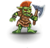 | Unlike saner goblins, the berserker enjoys fighting against stronger enemies, hurling himself screaming at the foe, with no need for coercion by his superiors. Instead of running away at the first sign of trouble, this fighter bravely stands his ground. Not surprisingly, the berserkers have risen to a high position in the goblin army, second only to the chieftains. | A rare and short-lived exception among the cowards that goblins are, this small humanoid hurls herself at any foe, even if she's hopelessly outclassed. Goblin berserkers hardly ever survive their first battle, but in the goblin warbands berserker platoons are quite important as they give their companions the possibility for tactical re-positioning (a.k.a. running away) while they valiantly get slaughtered. |
| 325 | mad doctor | | Before you stands an old man with wild eyes and long, unwashed hair. His skin is splotched and scarred from alchemical experiments gone awry. He is dressed in a long robe which may once have been white, but is now stained a variety of colors including blood red, ichor green, sulfuric yellow, and some other less pleasant hues. He smells of chemicals, filth, and decay. | |
| 326 | cloaked ratling | | Surprisingly enough, this ratling doesn't shun shady company (although he will willingly follow you to a more lawful neighborhood). Even before you see him, you can hear the clinking sounds coming from the depth of his wide green cloak. He will offer you the key to the whole business, but won't be offended if you have no inclination to buy. Skriek has a sure eye for wealthy potential customers, so if you are a poor devil, you needn't talk to him. | |
| 327 | jackal demon | | A special demon, worshipped as a god by ancient Ancardians, with the head and limbs of a jackal on an otherwise humanoid form. These have never been reported anywhere but in archeological sites of the ancient culture, but those that have been encountered have fought furiously, perhaps seeking to reclaim some of the power they used to have.
The body of a human with a jackal's head. In times long past, the god with the head of the jackal was the master and protector of the West, the Realm the Sun passed during the night, populated by the souls of the dead who had been tried on the scales and were found just. Eventually, belief dwindled and the power of the god withdrew from this world; only in the old centers and foci of belief, where some of the old magic persists, he can take the shape in which he once was worshipped. He can inhabit several such bodies at the same time, for they all are one to him. | |
| 328 | mummy lord | | An ancient, long dead, dried out husk of a being, the bandages that surround it yellowed and rotted with age. It has survived in the pyramid built for it over many ages, with its mind still mostly intact, empowered by the golden ankh amulet it wears. It seeks to replace its wrappings with the skin of a hero, and you qualify...
These undead were wrapped and buried with the highest ceremonial expense, their now-dry cloths once of expensive materials, with offerings and preservatives of extreme expense. They have great physical strength and more power than they ever could have in their natural life.
An ancient king of his race, he refused to pass into the realm of the dead but obstinately stayed in this world. Though his desiccated body has been treated with preserving substances, decay has finally touched him after many eons, and if he can't refresh his exhausted substance with the blood, flesh and skin of a living soul, he will soon crumble to dust. | |
| 329 | large jackal | | An eerie creature with a taste for dark dungeons and ancient labyrinths. Their shaggy fur smells of death and decay, and their cold yellow eyes make your hair stand on end. Large jackals can be dangerous opponents for inexperienced adventurers because they mercilessly fight to the death. | |
| 330 | grizzled gladiator | | A stout looking fighter with several scars, proudly worn and probably proudly earned. He has seen his best days as the gray hairs are not all from scarring, and skin sags slightly over still-strong muscle. All of this and the gleam in his eye says he has more than one story to tell about his fighting days in the arenas. | |
| 331 | dwarven smith | | Even more stocky and powerfully built than the average dwarven citizen, he seems to be in a constant hurry as he deftly moves from task to task. With the dwarves' great love of mining and metalworking, there is no lack of things for him to do, but he is more than happy to lay them aside and help out a potential hero... if the price is right. | |
| 332 | shadow centipede | | An eerie chitinous sound reverberates through the room as this monstrosity of unnature makes its way through. One used to think centipedes were ugly when they were alive; now that this thing has made an appearance, your mind about things has completely changed... Bits of the exoskeleton are missing or hanging off, and miscellaneous guts are either spilling or have been spilt out of it. It makes you wonder who in their right mind would think of making such an utterly horrid creature as this.
Something seems to move in a crack on the floor. As you observe, the crack itself seems to rise and shambles in your direction. Like carrion gives rise to maggots and flies, from the shadow lurking under the earth this mindless unnatural creature has sprung. It's driven only by an instinctive desire to draw the life force from living creatures, thereby pulling the living towards the shadow. | |
| 333 | floating eye | | The weakest of the ocular pneumatophores, these appear as a large eye that floats through the air looking around and supposedly feeding, but little is known of their prey or method of feeding. Their ability to lock an attacker's gaze and therefore immobilize them might be a trapping method, but appears to be primarily defensive.
An eye floating in mid-air, apparently harmless. You notice that it's awfully hard to stop staring at it. | |
| 334 | magebane eye | | A member of the floating eye family that feeds by leeching power from those that use magic. It needs only to be within a certain range of a living vessel of magic power to begin draining power from that being. They are smaller than normal floating eyes, perhaps aiding in avoiding detection by those they are feeding upon. Their magical diet also offers them some resistance to magic used against them.
A bloodshot eye, floating in the air. Merely looking at it makes you feel exhausted. It drinks light from the air that surrounds it, and your magic talents feel a lot weaker all of a sudden, as if the eye absorbed the magic of its surroundings to feed itself. | |
| 335 | staring eye | | A stronger variety of floating eye, these obviously use their paralyzing stare in an aggressive, feeding manner. They are stronger than their smaller cousin, the floating eye, but their food source and method of consumption are still something of a mystery.
You haven't seen such an eye on any creature you've met so far. A large eye without any white with a tiny pupil, hanging in the air. You walk around it and the pupil always points precisely at you, although the eye doesn't seem to turn. In fact, your own eyeballs seem to turn inside out as you look at it. | |
| 336 | chaos eye | | A recent addition to the floating eye family, the chaos eye is suspected to be a corrupted specimen of one of the other eyes, but its origin cannot be traced. Whatever powers they had before, they now serve primarily as agents of corruption and chaos.
While the eye of a living being takes in the light, this eye floating in the air seems to emit a strange radiance that lets all your surroundings look like they're twisting out of shape. The eye hovers in a purple cloud that makes tiny tendrils and tentacles grow out of the walls and the ceiling as it brushes the stone. | |
| 337 | magedoom eye | | A larger variety of floating eye that feeds on the magic within living beings, they are especially dangerous to users of magic. They bleed magic power from beings who store this power within their bodies by simply being within a certain range, but have a more voracious appetite than their smaller cousins, the magebane eye. Their magical diet also offers them some resistance to magic used against them.
An eye without a face, looking at you. You sense a malicious conscience that uses this eye as a spy and draws power for sorcerous enchantments from all the eye beholds. | |
| 338 | ghost librarian | | Quiet and unassuming, a veritable ghost in the stacks who knows all within the domain and offers it freely as long as the ritual of silence is respected. This collector and maintainer of books and scrolls seems content in this literary repository. | |
| 339 | troll berserker | | While it is large and ugly like any other troll, this one has much more hair on its upper body. It has painted its face in a patterns of circles and lines, probably with blood, and it walks around with a crazed, bloodthirsty look in its eyes. | |
| 340 | troll chief | 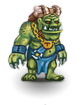 | This one seems a bit larger than your everyday troll, if such a thing could be possible, and half of one of its horns is broken off, probably in a fight with another troll. It flashes a toothy, menacing grin and grunts. | |
| 341 | troll king | | This troll has very little hair on its body, thanks mostly to a great number of scars covering its arms and chest. It seems to be not quite so much angered as arrogant, bellowing a challenge to anyone brave or foolish enough to try and hurt it.
Incredibly strong, this troll is a chief of chiefs. Scars crisscross his chest and a trace of intelligence shows in the dark eyes, because the trolls' tribal gods lend some of their mental capacity to the kings. He is proud of his strength and has a very tolerant outlook: he likes all races - humans, dwarves, elves, orcs, hurthlings - and all complexions - raw, cooked, boiled, singed, squashed. | |
| 342 | eye of destruction | | This member of the floating eye family feeds on the disintegration of substances, possibly deriving energy by destroying the bonds that keep things together. Objects or creatures that come in contact with the creature may be destroyed beyond recovery, and so these creatures are feared by all who value their possessions.
An eye floating in mid-air. You'd think that it only could observe its surroundings - until you see a bypassing fly being caught by the gaze and instantly getting dragged into the pupil, vanishing without a trace. You grip your belongings tighter, lest some of them attract that possessive attention. | |
| 343 | claw bug | | A vicious insect that attacks with great speed, making full use of its hooked claws. They are swift and precise, but possess little intelligence or judgement. Known in some areas as 'berserker beetles.' | |
| 344 | quickling | | A blur of color and a hint of movement are the only clues most people have of the existence of the quickling. Great speed and small size make it difficult to find and focus on these swift beings.
Buzzing like an angry dragonfly, a tiny humanoid attacks you. You guess that it's a relative of the pixies, but it moves much too fast to actually behold its features, and you don't have anything sticky enough to capture it so you can have a better look. | |
| 345 | quickling lord | | Among these swift creatures, some are even more fleet of foot than most and they rise to positions of power. They are called upon to fight opponents who possess speed or awareness that would best the average quickling, and so fight with more speed and power due to natural ability and practical experience.
Small, aggressive and lightning fast. These minuscule fighters make others of their kin appear sluggish and with unerring precision they strike the weak spots of their opponents. | |
| 346 | ratling dealer | | Another ratling in the trading line. His home is the bottom of a very deep rift. With his dark gray cloak, he almost seems to be part of the shady dungeon where he likes to go about his business, so don't slay him by mistake -- you might need him! He knows about the relationship between supply and demand, and as he enjoys the trading monopoly for a vital commodity, his prices are far from moderate. But if you are very poor (or very clever), he might make a special offer and only ask the lowest possible price. | |
| 347 | brown bear | | These natural creatures of the woods generally eat plants, berries, and honey, but are fiercely defensive of their hunting territories. Their bulk and strength make for a dangerous opponent, especially in the spring when hibernation has depleted the bear's natural stores and hunger drives it to be more aggressive. | |
| 348 | grizzly bear | | Wandering around on all fours, searching for something edible, the bear seems quite an opponent. But its ears twitch, and with a rumbling growl like a falling mountain, it rears up to its monstrous height. Despite your calm appearance, the eight foot beast can see fear in your eyes. And rightly so, with its claws that can topple trees, and a mouth of jagged teeth, this is not an opponent to be taken lightly. | |
| 349 | hill orc | | This variety of orc is generally found in hilly areas, living among the rocks or in shallow caves. Rumor says they were displaced from other communities of orcs for some reason known only to them and managed to survive by displacing ogres and other strong hill dwellers. Thus they are generally stronger than normal orcs, and at least a little more stubborn.
A large orc, skin darkened by the sun. Most of the day they hide in shallow caves or in the shade of the woods and prowl the plains during the dark hours. They attack solitary farms or lone wanderers, and sometimes several of their platoons co-operate in destroying and looting villages. | |
| 350 | hill orc sergeant | | The most stubborn and hard-headed of the hill orcs manage to bully enough others to achieve a position of authority. These are used to getting their way and will not hesitate to use force to accomplish their will, whether against orc or any other opponent.
A fierce humanoid sporting leathery, hairy skin, an assortment of nasty teeth and evil piggy eyes under thick brows. He is equipped with better arms and armor than the soldiers he commands and is the most proficient fighter among them. As yet, the hill orcs haven't grown numerous enough to again muster actual armies, but they're already becoming more and more of a danger for the peaceful folks in the Drakalor Chain. | |
| 351 | barbarian | | Barbarians are able-bodied fighters, excellent archers and talented craftsmen. They have mastered a wide range of skills which help them to survive in the wilderness. Traditionally, barbarians are a taciturn people and like to keep to themselves. For some reason, they are not very popular with the other citizens of the Drakalor Chain, which seems a bit unfair. No reason to despise them just because they are a bit smelly and haven't quite figured out the secrets of reading and writing. | |
| 352 | barbarian leader | | A thickset, stocky fellow with a weather-beaten skin and sharp eyes -- a deadly shot. He is the undisputed head of a group of barbarians because of his strength and his marked talent for organization. He is also the only one who can spell his name and count to ten (or even further).
A hardy, experienced fighter. Barbarians are very stubborn and don't like to obey orders, thus it takes an iron will to subdue all opposition as well as strength of body. | |
| 353 | outlaw leader |  | The leader of outlaws is unmistakable amidst the rest of the band, as much by the finer clothes and jewelry worn as by the fear the others exhibit whenever their leader comes near.
This man has adapted well to a life far from law-abiding people. He can survive in the woods, is an excellent tracker and knows all hideouts in the wilderness. A small group of other outlaws has joined him, respecting his authority because he can give some purpose to their lives and makes their lives a lot easier with his skills. | |
| 354 | chaos brother | | Heavy men with insane expressions, moving with speed and power, chaos brothers exist to spread Chaos wherever they travel. All of them mutated in a horrible, unique fashion, these beings are lost to the perverted calling of the glory of Chaos.
On first look he's just a member of a militant order; many such organizations teach people the art of weaponless fight as well as a variety of mystic techniques. But this monk is different: his eyes gleam with malice and pain, and his body moves as though it were bent slightly out of shape. You wonder what kind of order would do this to its members, and this monk behaves like he wants to forcibly recruit you. | |
| 355 | chaos sister | | | Moving with a grace that belies their nature, chaos sisters are sinister, fallen women who have given up all they have to Chaos, and been 'rewarded' in turn. Without a shred of sanity remaining, these perverted beings try to convert others, be they willing or not.
She's served her order faithfully, but unfortunately the order was taken over by servants of chaos. Now the forces of Chaos that try to pervert Ancardia have touched her body and mind. With a mad laugh she attacks, striking swiftly and skillfully. |
| 356 | dwarven elite guardian | | Fully armored and prepared to defend the dwarven city's ruler even at the cost of his own life, he looks like the kind of guy you would rather have on your side. He nods to you in a friendly manner, but is not yet sure of your intentions. | |
| 357 | giant boar | | A feared variety of wild pig, the boar has a low, stout body and thick neck, needed to support the large, bony head and its long teeth that stick forward like short swords. The boar's greatest threat is a charging run that has been known to skewer careless hunters and even take down some hunter's mounts. Attacks against the head have been known to dull weapons, so brighter opponents focus on the body. | |
| 358 | chaos knight | | This defender and proponent of chaos, usually well equipped, is eager to convince others of the benefits of chaos, using as much force and corruption as needed to convert any being less chaotic than itself to the cause. Theirs is a single-minded dedication to the cause, and they are well-practiced at conversions. | You can't determine what race this fighter has once been, since the forces of Chaos she serves have torn and twisted her features. She still moves on two legs, but the knees fold in the wrong direction and the face is completely flat; nose and ears have disappeared, the mouth has no lips and the eyes are as dead as those of a fish. The skin is sickly pale shimmering with a hint of color. The chaotic allegiance has not only distorted her mind and body, even her honor as a knight has suffered, for she doesn't hesitate to stab fleeing foes in the back, kills defenseless enemies and even poisons her blade. |
| 359 | demented ratling | | This ratling seems physically stronger and mentally weaker than the others of his race. The random thrashing about might explain the physical strength, but nothing other than a severe warping of his being could explain the rambling and wandering about. The improved musculature can easily be seen through the disheveled, oddly mottled fur, and the rambling seems to affect the normal care of whiskers and facial hair, as drool trails overrun what would normally be orderly parts in the fur pattern.
A truly inscrutable representative of the ratling race. He is the only ratling to have succumbed to the forces of Chaos, and yet he has decided to make his home among lawful neighbors. His glassy eyes, near-transparent skin and drooping whiskers make him a sorry sight. He doesn't have many friends because he only talks to like-minded people, and his eating habits are somewhat freakish. | |
| 360 | quickling king | | Fastest of the quicklings, the kings of this race are also the strongest of arm and body, in spite of emaciated figure and diminutive size. These kings rule with their own justice, swift and strong. | |
| 361 | quickling queen | | | Seeming a petite blur, the quickling queens are much revered for their clear vision and rapidity of thought. These queens are not only creatures of speed and observation, but have a sharp sting of their own, injecting enemies with poisons as swift as their thoughts.
You perceive only a brilliant flash of lightning, lashing at you to strike and immediately retreat. Their speed is legendary, as is their tendency to attack anything they pass. They're said to have a nasty sting. |
| 362 | multi-headed chaos dragon | | Phasing in and out of vision, as well as the other senses, this huge beast of purple is best described as almost ultra-violet -- just on the edge of perception, but undeniable. It has all the weapons of chaos and several writhing heads by which to deliver them. It strikes fiercely with all the elements its corruption has touched, and many opponents are struck down before they are able to move, or so the legends say. | |
| 363 | old barbarian | | So old that his bald pate no longer shows even the memory of hair, his white beard hiding most of his body, and clad only in a bearskin, he somehow still gives the impression of power and cunning. Despite all the monsters you've faced and trials you've passed, you can't quite meet his gaze. | |
| 364 | raider lord | | The raider lord can be easily recognized by his purple cloak and haughty behavior. He commands a band of corrupted raiders who terrorize the peaceful villages of Ancardia. Although he likes to pose as a daring fighter, he's really a bit of a coward. He only attacks people smaller and less experienced than him. If you fight back, he usually hides behind the broad backs of his companions and tends to panic.
He was a high officer in the army, but now his men fight on their own behalf. Some say that Kranach was expelled because of homicide, others say he simply dropped out of the pension plan when the army was demobilized. He's reluctant to do any fighting by himself, but trusting his tactical and strategical instincts he unerringly leads his fighters to places they can loot, and always finds the right time to get lost when the ground gets too hot. | |
| 365 | raider | | Most raiders are skilled archers and carry bows and arrows. In the old days, they used to be the huntsmen of the High King. They roamed the forests, taking care of flora and fauna and singing merry songs. But then they were corrupted by chaos and turned to robbery and pillage instead. Their ruthless looting is a scourge of the country; a valiant adventurer should try to bring them to justice.
Rangers of the armies that fought in one of the recent wars. When the war was over, they were reluctant to return to the hard work in the fields or found their homes in ruins. Skilled hunters and archers, they decided to live in the wilderness. By now, they've taken up a new line of work: they rob and kill unwary travelers. | |
| 366 | black druid | | Keethrax is a tall man, dressed as a druid in a white robe, carrying a wicked looking sickle. The black torc around his neck where mistletoe should be marks him as no longer merely a druid, however. He is surrounded by a slavering, frenzied menagerie of animals, waiting for their master's signal. | |
| 367 | ratling guardian | | This valiant fellow is a former member of the royal guard. His bright golden livery with braids and shining buttons and his fur-trimmed cap still testify to the power and the glory of the age of the High Kings. But even in chaotic times, the ratling guardian retains a streak of pomp and circumstance and enjoys wearing his old uniform. While he's waiting for the return of the king, he reliably guards the fortress-like city. | |
| 368 | oracle | | A peaceful, bedraggled-looking person who seems to be little other than a beggar until the glowing eyes look upon you and see more than others. Nobody is sure what the oracle really sees, but it leaves the messenger sad and resentful of those who force the visions to come. | |
| 369 | old crone | | | Now this is the ugliest woman you've ever seen. Mocking you like your gibbering mother, cursing and showing her infamous scars and molds. Yet amidst of all that is great power. |
| 370 | ogre guardian | | These large humanoids are strong and not very bright. They tend toward patchy hair and vacuous looks, and favor caves and mountainous regions, only occasionally living in a larger settlement with others of their ilk. They are bad-tempered and enjoy plucking appendages off smaller creatures. This specific specimen seems to have risen above his brothers. He wears a gaudy uniform, a huge halberd and his eyes sparkle with something that resembles intelligence and cunning. | |
| 371 | burly adventurer | | A stout man with a large brown beard dressed in old and battle-worn leather armor. An old but well-polished blade hangs from his girdle. His frame is very muscular and his moves prove his experience from endless adventures. This muscular man eyes his surroundings with a careful gaze while at the same time displaying a boasting sense of humor due to a very special twinkle in his eyes. Somehow this man seems to be familiar... | |
| 372 | malicious doctor | | The well-kept appearance belies the evil gleam in the eye of this doctor. This is someone who plucked the limbs off of smaller creatures as a child, and has not yet satiated the curiosity of removing and rebuilding. Although the doc seems clean enough, his presence makes you feel dirty. | |
| 373 | ElDeR cHaOs GoD | | | |
| 374 | small dwarf | | A small and nondescript dwarf. Bearded, not overly stout with a face like thousands other dwarves around (literally). His eyes seem to reflect a deep feeling of despair. He is constantly mumbling 'Why me? Oh why me?'. | |
| 375 | tiny girl | | | A small and cute girl, dressed in a once beautiful skirt now tattered and dirty. Her eyes shine with innocence and curiously peek into the world, always looking for new wonders. |
| 376 | cute dog | | This small dog has shining white fur, a funny tongue constantly flapping around its nose and a small tail moving with erratic speed. It's simply cute. | |
| 377 | ancient blue wyrm | | The air is filled with the smell of ozone, and the distant buzzing sound of electricity grows louder. Suddenly, there is a blinding flash and the roar of thunder! Stunned, you gaze in awe at the fearsome power of the ancient blue wyrm. The whole world seems filled with lightning as this titanic serpent charges toward you. Its reptilian eyes hold the glimmer of god-like intelligence and its scarred scales bear the testimony of thousands of victories over the course of many millennia. The ominous hum of power begins to build in intensity once more as this ancient wyrm opens its huge, fanged jaws...
The most ancient and powerful of its kind, this being can only be compared to its old enemy: the wings' membranes are gone, its legs - though still as sturdy as those of the great ancient dragons - appear almost insubstantial beneath the immense torso, covered in scales that make the word 'plates' seem more appropriate. The scales must have been a deep metallic blue, but the immensely strong electric currents flowing back and forth along the serpentine body bleached them until they became nearly transparent, so the blood in its veins shines through and makes the dragon appear a strange pale lilac color. This dragon is old and wise, and as is with dragons, it has grown stronger and more resourceful with every year. | |
| 378 | ancient karmic wyrm | | My gods! How can anything that huge exist? But it does. Standing before you, it now seems very real indeed, its scales flickering between a thousand colors, and torrents of smoke funneling from its nostrils when it exhales. Eyes the size of your fist stare down from the sky, briefly pondering your insignificant life. The scales of this beast are scarred by thousands of fights, yet its existence is the proof for its awesome powers to fight and prevail in almost any situation.
A great draconic creature shimmering all colors. Even its shadow appears colorful, and its great razor-sharp teeth glow opaque. The wings drive a sweet wind in your direction, striking such fond memories that your soul hurts, and you wish to befriend this mighty creature; but it is angry for it sees a foe of its kin in you and its wrath is powered by all dragons' elements, making it the true essence of dragon-kind. If you hurt it, the anger of all dragons will punish you! | |
| 379 | Chaos Archmage | | You face an ancient, crippled man, who only manages to stay erect due to some invisible force. As frail as his body appears his wrinkled face sports two glowing eyes emanating with waves of incredible power. In the rare moments you manage to look into the bright glowing eyes you are able to catch a glimpse of many tentacles growing from the eye holes. The body of this creature is covered in an ancient black, very tattered robe that seems to be moving around his body with its own will.
A single look tells you that this is one of the chief agents of chaos in this world. The powers of chaos itself fuel the devastating magic of this ancient man as well as giving him strength and endurance beyond human measure. The dark robes covering him from head to foot almost burst at the seams due to the sheer power contained within, an eerie radiation surrounds him with a nimbus of unlight that drips to the ground, staining and twisting the stone in his wake. Only the hands are uncovered, writing runes of power in the air, so fast they seem a blur. Yet you distinctly feel that those bony fingers are not entirely human and doubt that they ever really were. | |
| 380 | master assassin | | This black-garbed villain glares at you from under his cloak. An expert killer, skillful in the use of poisons, the master assassin is prepared to take lives at the whim of the moment, always calm, always precise. His quick movements and dark garb make it difficult to follow his movements... was that a dagger in his hand or just a freak reflection of light? | |
| 381 | assassin prince | | This man is very unimpressive and appears to be able to blend into any crowd without difficulty. There are no special marks on him and nothing exceptional can be noticed... if he doesn't want it. He regards you with a calm gaze and just for a short moment shows his true visage: that of a calculating mastermind and relentless killer. This gaze nearly makes your heart stop. | |
| 382 | quickling bard | | The fastest quickling that ever whizzed past you, this particular individual seems to be very alert and vigilant. His blurring movements are accompanied by an eerie whistling sound... a tune of strangely compelling power.
This very small guy in funny colorful clothes sings for you: 'Letmeentertainyou' he warbles, and you concede that he is a great musician, his repertoire practically infinite, but a lousy entertainer, because he keeps breaking into a new song every other moment. 'Vanillaisthefinestoftheflavors' he sings. 'OneworldOneFuturedonttakedrugskidsgiveemtomeIwasntbuilttogetup.NiquetamereMachdieAugenzuundkuessmich...'. His excited voice makes your teeth stand on edge, and you just want this notoriously cheery artist to shut his bloody trap. | |
| 383 | bone golem | | You've seen skeletons before, but never has any bunch of bones looked like this. Where there should be one bone, many seem to have been fused together to form a large, strong mass, which is then connected to another large mass and then another. Even the skull seems to be a combination of several thick pieces. Extra plates of bone seem to cover many of a normal skeleton's weak points, as well. This skeletal nightmare looks like it took a lot of work to assemble, and looks like it will take a lot more to disassemble.
Yet another horrible plaything of a mad sorcerer, this thing was made of numerous skeletons. Every bone is in the place in which it's naturally located, yet several bones of the same kind were welded together, so that all parts of this structure are immensely thick and from the looks of it they're also a lot harder than normal bones. It has been instructed to destroy all intruders, and unfortunately you unleashed this abomination. | |
| 384 | swamp hydra | | A solitary creature, though the idea of being alone when you have more serpentine heads than a snake pit seems hard to grasp. The creature turns its many sets of eyes in your direction. With a glint in those small pools of amber, you know that this monstrosity acts purely on instinct. And its instincts tell it, it's hungry. You ready yourself for the attack, which if even from one opponent, can come from all sides at once. The fluid dripping from its fangs seems to imply pending doom. When it hits the ground, hissing clouds of vapor rise. | |
| 385 | death ooze | | Death oozes are among the most feared and despised primitive jellies known in Ancardia. Deadly hunters known to slay their game with particularly deadly contact poison, they are feared by anyone traveling through the underground. Luckily their bright color and the small black skull-like patches on their surface make it easy to spot them. On the other hand their remarkable speed, their incredible damage resistance and their unyielding perseverance make them something you wouldn't want to meet.
A puddle of slime that moves with a purpose. As it oozes over the floor it engulfs small bugs and debris on the ground, apparently to digest and incorporate them. The outer membrane is colored a brilliant red that seems not at all healthy. | |
| 386 | stone ooze | | These vicious hunters lurk in dark caves, where they prefer to cover stones with their bodies. Their stone-like color and thin body structure provides ideal means to become almost invisible in dark caves. Thus many folks make first (and last) contact when touching those beings. Their body fluids seem to be a highly paralyzing poison. They digest their victims with a very strong acid they are able to produce. When making particularly large kills they seem to prefer to replicate before feasting on the victim.
A knee-high amorphous structure with a dusty gray crust. A beetle on the floor disappears under the stony shell and as the jelly moves on, a small pebble the size and shape of the beetle is left behind. Its mere presence makes you feel rigid, as if your skin were turning to stone. | |
| 387 | green blob | | Here's one plant that no sane farmer would ever grow! Resembling a puddle of vomit more than any recognizable vegetation, this carnivorous greenery seems to be woven from the very essence of disease itself. Like any respectable illness, green blobs also like to spread, often reproducing before the initial entity can be completely dealt with. While not as destructive as some of its primordial brethren, they are no less dangerous. They seem to be a more advanced version of green slime.
A sickly green glob of decaying organic matter. Tendrils stretch out towards you, spreading a sickening smell. | |
| 388 | mimic hivemind | | You know it's gonna be a bad day when a bottle of water beats you up. These predators have no natural shape, and the shape they do assume is always different -- and VERY convincing. How can you recognize them? Well, if that 'inanimate' object in front of you suddenly has hundreds of nasty teeth and a couple of long, sticky arms with razor-sharp barbs covered in glue, then it's a mimic hivemind. Their antennae allegedly enable them to telepathically summon more of their ilk. | |
| 389 | chaos viper | | Aww... how cute: a small little snake... isn't it just precious? But there's something different about this wee snake that bugs you but you can't place it... It looks like a viper, but its skin is strangely colored and seems to scintillate in all kinds of magenta shades... and those strange vapors rising from its fangs make you feel really bad about a confrontation with this strange beast. Its lightning-fast moves make you feel like a bumbling clod, which doesn't bode well for a fight either. | |
| 390 | eternium golem | | This mighty construct has been crafted from bright, burnished eternium and engraved with strange red runes pulsing with pure mana. Each piece of it is masterfully crafted. Every motion is mechanical and precise, joints turning smoothly and silently. | |
| 391 | ogre emperor | | Ogre emperors are the elite among all ogre kings on a given continent. Surprisingly cunning, incredibly strong and very experienced they are rumored to lead dozens of ogre tribes according to some greater horrible scheme. Ogre emperors are selected in brutal trial combats among the kings. Those entering these trials either die or win, so that you can expect only the most powerful and cruel ogre kings ever to aspire to this mighty position. And only the few who survive the ensuing slaughter rise to the highest position among ogrekind. | |
| 392 | giant rust monster | | Like their lesser brothers, giant rust monsters were trapped in the Drakalor Chain against their will. These huge creatures suffer a lot from the inadequacy of their new environment. As they never seem to find enough minerals and metals to keep themselves fed, they are constantly in a very bad mood and attack everything that moves. At some point in the past giant rust monsters seem to have undergone a magical transformation of some kind. They are a lot stronger and more cunning compared to the various lesser rust monsters. Additionally they sport four tentacles (instead of the usual two) on their head, which rust everything they manage to touch.
You could sense this creature through half the dungeon, simply by the way your polished metal equipment slowly seems to tarnish and corrode even as you near it. It needs a lot of metal to support its bulk, and perceives you as a large heap of food with some insignificant meat strewn in. | |
| 393 | ghost king | | Ghost kings are the souls of mortal nobles, damned to eternal pain and suffering for the horrible deeds during their lives. Their incredible hatred of all living has allowed them to rise to the top of the undead hierarchy. Ghost kings seem to rule their lesser brethren through sheer force of will and dark magics unknown to the living. They seem to engage in elaborate schemes to win mortal souls and bring suffering and damnation on all living beings. Ghost kings are fading images of figures in royal garb. They emanate a cold, chilling light of yellow color and their eyes burn in a fiery red flame. Their voice is a chilling rasp, known to send waves of cold through all listeners.
The restless soul of a person who died long ago which won't find peace even when the last star fades. It has come to envy the living and despise itself and the world over the eons, and these emotions condense into a legendary power of absorbing life and giving death. Yet most that wither and die due to its touch will return as ghosts, too, leaving it naught but the questionable benefit of company in misery. | |
| 394 | chaos spider |  | This eight-legged horror is hard to glance at. Its chitin-covered body seems to bulge, move and change continuously and its six eyes are filled with an alien intelligence. Its mandibles seem to be covered in a purple shimmer. They reek of corruption.
A perfectly ordinary spider, apart from the fact that it stands half as high as a human. Still, there's something unusual about it. Is it the strange cunning in the eyes that seem to glow with their own light? Or is it the fact that the head doesn't bear mandibles but a bunch of writhing black tentacles? | |
| 395 | werewolf lord | | Creatures which change between humanoid form and a huge wolf, they are rumored to have once been fully humanoid, but infected with some disease or curse. They are known to summon large packs of wolves when attacking, as well as using their powerful jaws and sharp teeth. They supposedly retain their thick body fur when in humanoid form. Their lords are descended from the most powerful of the ancient high wolves, filled with terrible power and cunning beyond belief.
This man has learnt to run with the wolves, and they have accepted him as leader of the pack. He shares their powers and their knowledge, and they will aid him if he requests their help. | |
| 396 | emperor moloch | | Malevolence incarnate, this heavily armored figure seems to be absolutely invincible... a solid mass of incredible evil. Working like time, slow but irresistible, the emperor moloch seeks to beat down any structure or power that reveals an underlying order. Its mighty fists wreak havoc and destruction upon everything crossing its way, leaving behind a blasted path of mayhem and shattered remains.
All you can see is an immense armor of a jet black substance, moved either by some unbelievably strong inhabitant or by an immensely powerful will. The aura of almost elemental hate surrounding it suggests that whatever powers its motions is some malevolent spirit. Its power is legendary and rumor has it that nothing can stand before its wrath. | |
| 397 | doppelganger king | | You recoil in confusion from your own mirror image! The strange figure seems to be your identical twin... only more so, somehow. Curiously, your twin seems to be a lot more like you than you yourself ever could be! You start to wonder whether you should continue your life now that you know how perfect you'll never manage to be.
What's that? Is there a mirror hanging in the air in front of you? In fact what you first mistook as an image of you seems more real than you, as if you were but a cheap imitation. You pray that the original facing you doesn't smash the invisible mirror destroying you, its duplicate. | |
| 398 | fire vortex | | A strange cloud consisting of thousands of flickering flames is moving towards you. The heat is almost unbearable. The closer the strange cloud gets, the brighter and hotter it seems to burn.
A cloud of flame, scorching all it passes. Just looking at it singes your brows. | |
| 399 | ice vortex | | A strange cloud consisting of thousands of sharp and pointy ice needles is moving towards you. The cold is almost unbearable and seems to get even worse the closer this cloud moves.
A freezing cloud whirls through the air. It seems to be attracted by warmth, and as you know your luck, the only way to make sure it wouldn't try and envelop *you* instead of anyone else would be to stand in the middle of a volcano. | |
| 400 | lightning vortex | | A strange cloud of flaring lightning bolts is racing towards you. The bolts strike everything in its vicinity and seem to grow in strength the closer they get to you!
A crackling tornado of electricity drawing long bright sparks from the floor and the walls. | |
| 401 | acid vortex | | A strange cloud of green moisture is moving towards you. A horrible stench is arising from that cloud. Whenever a drop hits the ground, the ground is scarred by the fluid and a hissing sound can be heard.
A cloud of acidic fumes. You'd better not come too close to it. | |
| 402 | ancient sage |  | A wizened old man with a long gray beard. Armed against the dangers of chaos with only his magic and the clothes on his back, still he has the look of one who has seen and survived much during his time in Ancardia. New vigor seems to be pulsing in his body and despite his great age he carries himself with grace and pride. Though his clothes are worn you notice their former splendor and style. | |
| 403 | living wall | | A plain piece of the dungeon walls... but wait! Walls usually don't have that many tentacles and walls usually don't ooze out some strange mind-numbing liquid! And now it's moving towards you! And there are even teeth! | |
| 404 | diamond golem | | Light reflects off the many glinting surfaces of the thing standing before you. Priceless diamonds cover it from head to toe. Its eyes glow red with alien hatred and malevolence. Moving silently, with a clear purpose, it advances towards you. | |
| 405 | skeletal king | | An ancient coronet sits upon the brow of this menacing creature. Its face is devoid of expression, aside from a permanent, dreadful grin. Its clothes are tattered and torn, some showing ancient sigils of kingdoms long gone. They are known to attract a following of undead servants and followers, mimicking their former lives as rulers. Skeletal kings possess great power, being capable of bringing the corpses of fallen enemies under their control. Some ancient documents also mention their capacity for magic. Their voice is cold, their speech delivered in tones of one used to command. | |
| 406 | werewolf king | | A pair of yellow eyes glares at you from the dark. You feel an odd dread within you, a primal fear rising within. A figure detaches from the darkness, radiating menace. As it studies you while emitting a low growl, you take in its enormous size. While it towers above you at a height of nearly nine feet, you resist the urge to run. It seems half-man, half-wolf... Its paws --or are they hands?!-- end in sharp claws, which gleam darkly. You ready yourself, for should you try to flee, there could be only one outcome... | |
| 407 | ancient minotaur | | A large, muscular humanoid body topped with the head of a bull. Fortunately for you, they also seem to have the intellect of the bull, as well as the tactics--they see something that irritates them and they rush to remove the irritant. Dried blood on horns and hooves is evidence that goring and stomping things are popular among these brutes. | |
| 408 | minotaur lord |  | These bull-headed humanoids look much like the lesser minotaurs, except that they have taken to stylized nose-rings and seem to pause before charging, almost as if considering the most painful way to convince an unwelcome visitor to leave. They take the time to clean horns and hooves after a good death, in order to better maintain their tools of death. | |
| 409 | minotaur mazemaster | | These minotaurs are both strong and clever enough to have mastered the tricks of mazes. They are also a fair hand with weapons and other tools of destruction and love a chance to practice. They are charged with keeping the maze intact and dangerous, as well as the destruction of any who are found stealing the knowledge of the maze. | |
| 410 | minotaur mazelord | | When a mazemaster also masters the tools of destruction, they are feared even by other minotaurs. Opponents rarely survive to tell of the escape from both the maze and the fury of horns, hooves, and weapons. They direct the mazemasters, stirring them to greater effort and more ferocious slaughter. They sometimes ornament their horns with barbs to make goring more entertaining (as well as messier). | |
| 411 | minotaur mage | | This select group of minotaurs has mastered the maze in a special way. Understanding the confusion of twists and turns, these intelligent beasts have learned to harness this power and use it against those who would intrude. Once confused, most enemies are easily crushed. They are frequently painted in bizarre patterns made of dyes extracted from prior victims. | |
| 412 | minotaur king | | Even as a maze must have walls to define the paths, minotaurs have these mighty leaders to define their roles and places. Only those who have mastery of maze, weapons, horns, hooves, and power can ever aspire to this position. Then the merely mighty are killed in the competition to fill the rare void in power. The result is a leader whom only the foolish question. | |
| 413 | minotaur emperor | | The ultimate in the bovine form, this powerful beast was once a king who won his position through subtlety and strength, defeating the former emperor to become the heart of the maze. Truly the master of horn and hoof, he is faster, trickier, and more dangerous than any other bovine on Ancardia. It is said that this beast's powers are linked to the maze, each feeding the other, granting the emperor a lifespan and abilities far beyond the others of his race. | |
| 414 | wall beast | | A plain piece of the dungeon walls... but wait! Walls usually don't have subtle muscles and veins running through them under a layer of dirt! | |
| 415 | pit viper | | A small brightly colored snake. You remember that suspicious coloration in animals is a warning for potential aggressors, frequently because the animal in question is poisonous. | |
| 416 | greater claw bug | | A deadly giant insect that attacks with incredible speed, making full use of its razor-sharp hooked and barbed claws. They are swift and precise, but possess little intelligence or judgement. Known in some areas as 'berserker emperor beetles.' | |
| 417 | killer bug | | A deadly giant insect of utter blackness that attacks with unbelievable speed, making full use of its razor-sharp hooked and barbed claws. They are lightning-fast and almost unerring in their devastating attacks, but possess little intelligence or judgement. Known in some areas as 'quickling moloch beetles.' | |
| 418 | mist wolf | | A huge wolf with a thick gray fur beholds you with icy blue eyes. A mist-like breath rises from its enormous fanged jaw and similar wisps of mist seem to slowly rise from its fur - or is that just the heat from its obvious anger about you intruding into its territory? Its fangs probably will tell you soon... | |
| 419 | gargantuan rat | | You face the mother of all rats! If you ever wondered why Ancardia is dotted with tunnels and dungeons this elephant-sized thing must be one reason. Its huge, plate sized eyes eagerly muster you like a tasty morsel while it constantly chews with its sword-sized front teeth. Its dirty fur contains icky remains of various victims and you fear you might be one of the next as it advances with surprising speed! | |
| 420 | clay statue | | A roughly humanoid creation of clay, most are around human size. They attack with their mighty clay fists and pummel opponents to pulp in a mindless and tireless attack routine. The clay they were molded from has supernatural powers that allow it to mend and heal itself. | |
| 421 | snow golem | | This huge construct has been shaped from ice and snow. It moves in a meandering, gliding and rolling way, unstoppable, irresistible. Its huge fists threaten to engulf and throttle you. Pale blue eyes shaped from ice in an otherwise empty face monitor all your movements warily. | |
| 422 | yeti | | A huge lumbering humanoid covered in icy white fur stares at you with bestial eyes. It's breath is visible and you can read the rancid stink of long rotten flesh. Its square face and huge forehead belies a primitive intelligence, almost more than the huge curved claws springing from muscular forearms. It lumbers forward with an apish gait, flexing its powerful muscles. | |
| 423 | ice statue | | A delicate sculpture from ice moving with deadly precision. It's frozen shape belies the speed with which it moves. And strikes. With deadly precision. Uncaring of the havoc it creates. | |
| 424 | frozen one | | This cursed soul has been born in the freezing winds of a blizzard, killed by ice and snow. Its last thoughts screamed for revenge but were lost in the screeching winds of the storm. Now it roams the surface trying to bring the same cold death and suffering to other living beings, disgusted by their warm bodies. Its frozen body is horribly distorted by the pains it suffered before its death. | |
| 425 | ice lizard | | A blue scaled horror emanating deadly cold is staring at you with lidless white eyes. More than ten feet in length it moves slowly but with precision. Its huge clawed feet screech over the ground and give you a good idea about the amount of damage they can wreak on living tissue, too. An icy breath comes from its stinking mouth, hissing through sharp teeth. | |
| 426 | frost salamander | | This slender type of salamander is almost 15 feet in length. It moves with a swinging gait and evicts ice cold that freezes everything to death if it comes too close to his alien monstrosity. Surely not a being of this plane it must have slipped through some dimensional rift and now tries to turn the whole world into a freezing hell of extraterrestrial origin. | |
| 427 | ice elemental | | This elemental is somewhat similar to its air brethren, possessing the form of a mighty whirlwind, wholly made up from ice shards and an occasional snowflake. It emanates deadly cold and you surely will be frozen to death in seconds if it manages to engulf you. | |
| 428 | ice queen | | A being of incomprehensible beauty the freezing stare of the ice queen almost stops your heartbeat. Her skin is pure white and her eyes shine in an icy blue. White-golden locks fall to her shoulders. She is engulfed by an aura of icy might. As a visible testament to her absolute control of this icy domain she wears a magical cloak of razor sharp ice shards twirling and whirling around her, poised to shred any being that invokes her wrath. As she turns her regal gaze towards you, you wish you'd have the power to melt her frozen heart in order to be gifted with one single smile of her beautiful face - even if that were the last thing you ever were to see. | |
| 429 | chaos diplomat | | A heavy man with a terrifying expression, moving with speed and power, the chaos diplomat exists to spread Chaos wherever he travels. At first look he's just a member of a militant monastic order; many such organizations teach people the art of weaponless fight as well as a variety of mystic techniques. But this monk is different: his eyes gleam with malice and pain, and his body moves as though it were bent slightly out of shape. And some parts hidden by his robes seem to move with a will of its own. His tongue is unusually glib for a monk and his whispering insinuations create a taste for the glory of Chaos and its many benefits. | |
| 430 | vile spirit | | The vile and hateful spirit of a shattered adventurer, raised again by dark nether forces to devour the souls of the living. | |